오늘의 arXiv Top 15
2026-10-02 (금) ·
cs.CV / cs.LG / cs.RO / cs.CL / cs.AI New submissions 전수 평가
cross-list · replacement 제외, 중복 병합 · Top 15은 원문까지 읽고 정리
1차 스크리닝 787편 (Claude (scheduled agent)) → Top 15 PDF 정밀 리뷰 (Claude (scheduled agent))
World Motion Models: Flexible Sequence Modeling of SE(3) Trajectories
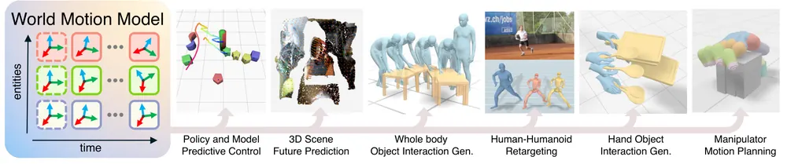
InterEvolve: Test-Time Evolution of Reward Programs for Humanoid Loco-Manipulation
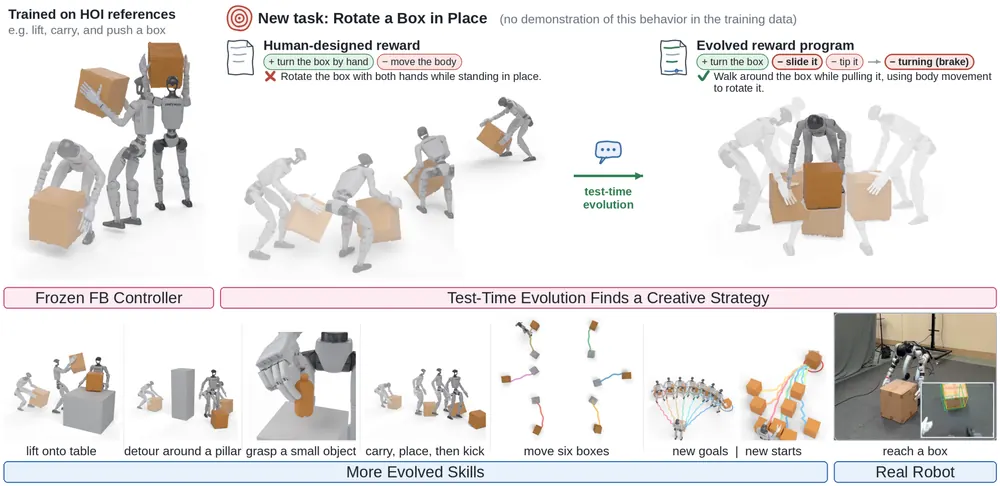
Screw Attention: Rigid-Body Algebra Inside a Transformer
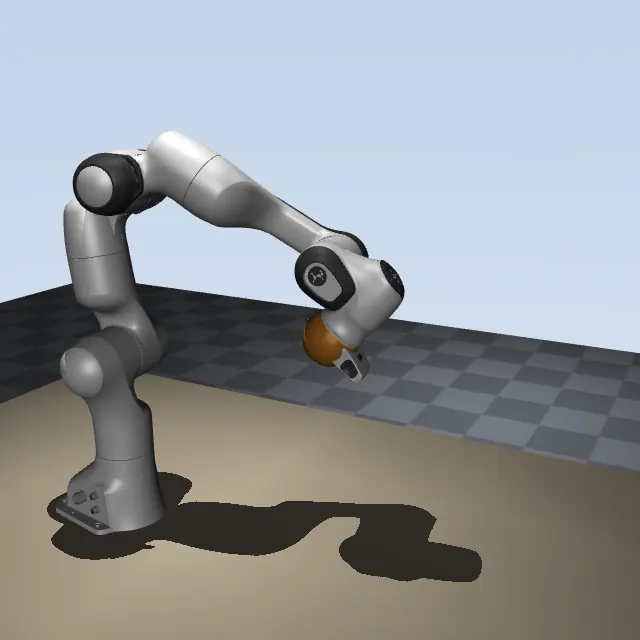
UniWAM: Unified World-Action Model
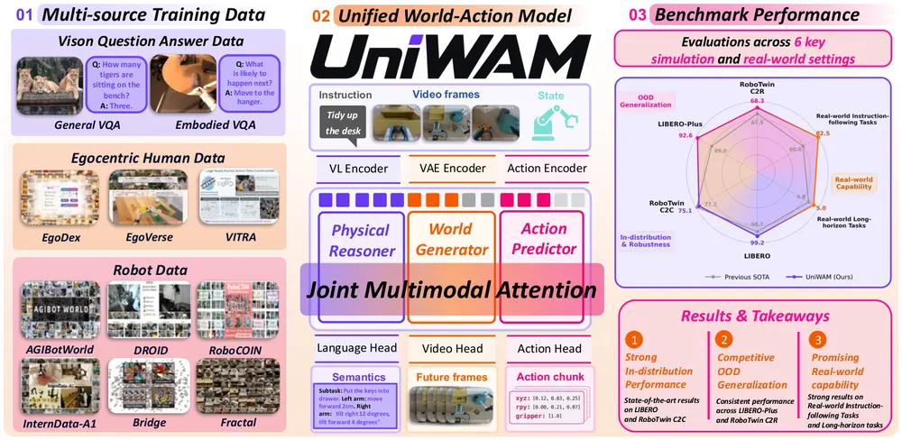
DriftOPD: Sequence-Level Reverse-KL Distillation for One-Step VLA Policies
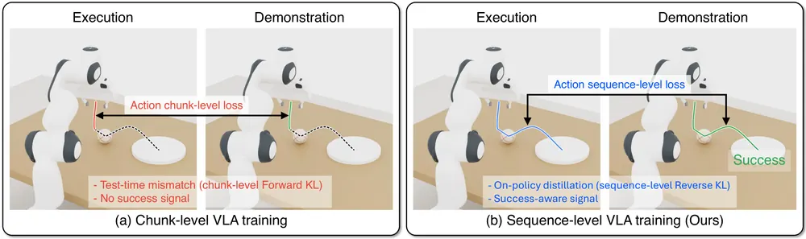
Retrospective Open-Vocabulary Memory for Long-Term Object Search
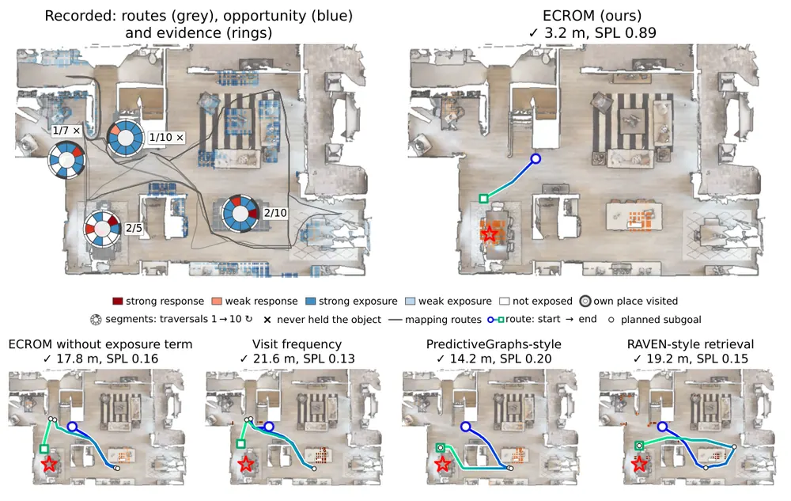
Recova: Agent-Guided Failure Recovery for Autonomous Robotic Manipulation
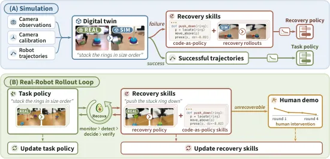
FutureWorlds: Learning Robotic World Models from Alternative Futures
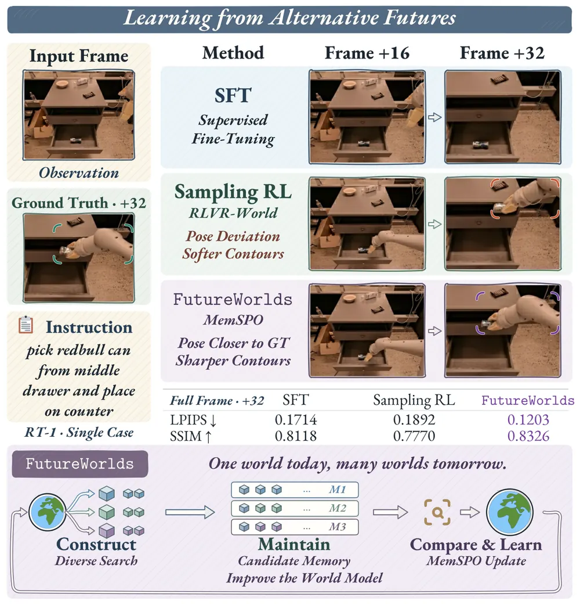
Stable and Counterfactually Robust Physical World Models from Imposed Structure and Learned Physics
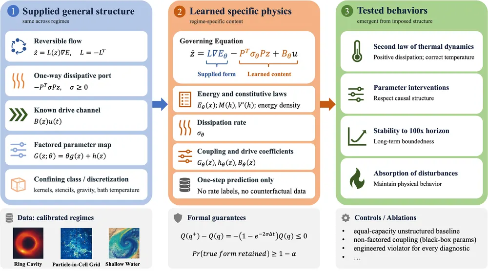
ATI-VLA: Action-Centric Predictive Vision-Language-Action Models via Actionable Alignment Then Adaptive Injection
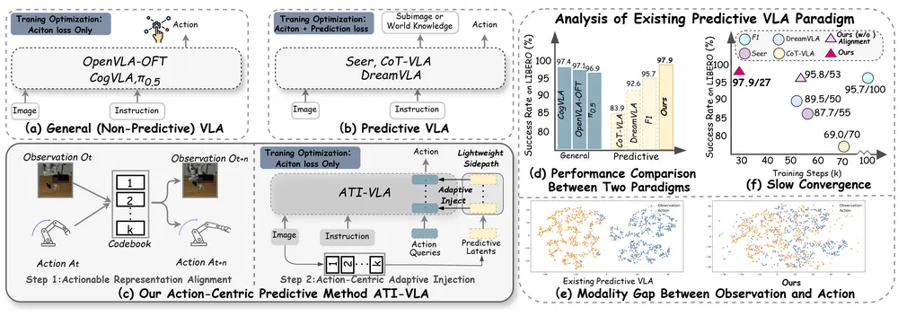
MIKASA-Robo-VLA: Benchmarking Memory in VLA Models for Long-Horizon Manipulation
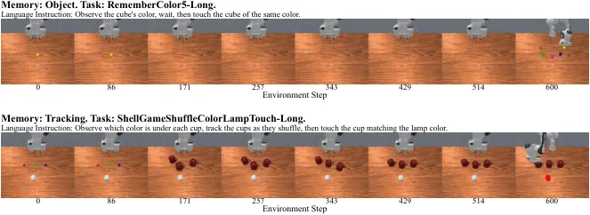
Towards a General Humanoid Loco-Manipulation Model via Egocentric Whole-Body Human Data Pretraining
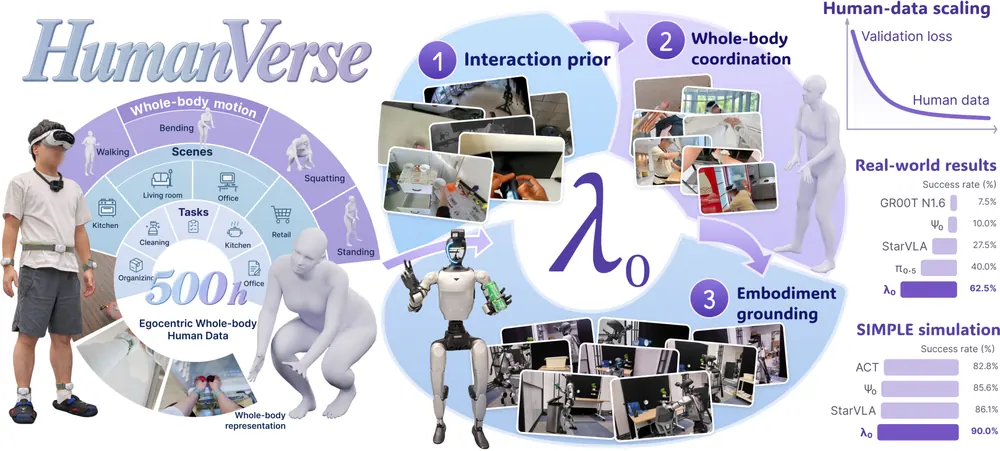
DeepJEPA: Scaling World Models from Within
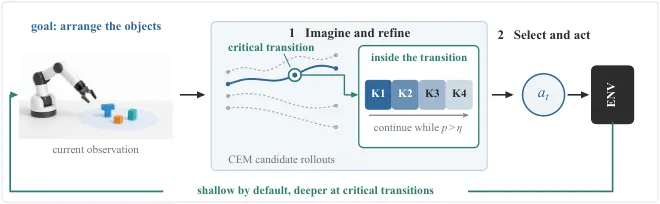
JEPA-TTT: Persistent Test-Time Training of Latent World Models for Planning under Dynamics Shifts
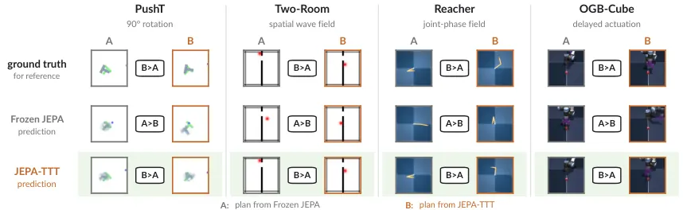
Supervise What Decides Success: Criterion-Aligned Auxiliary Losses for Latent World-Model Planning
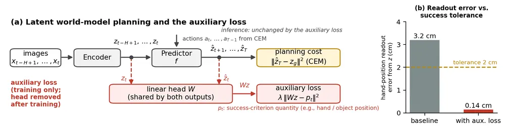
오늘의 핵심 연구 트렌드 종합
- test-time computation 재분배 — DeepJEPA는 world model의 recurrent depth를, JEPA-TTT는 predictor 파라미터를, UniWAM은 denoising step 수를, InterEvolve는 reward program 자체를 추론 시점에 조작함. 학습은 고정하고 "계산을 어디에 더 쓸지"만 바꿔 성능을 올리는 연구가 한 번에 네 편 등장함.
- world model과 action model의 아키텍처 통합 — World Motion Models는 인간·로봇·물체·카메라를 하나의 SE(3) 토큰 공간으로, UniWAM은 VLM·video diffusion·action predictor를 Mixture-of-Transformers로, ATI-VLA는 predictive latent를 action query에 주입하는 방식으로 묶음. 구현 방식은 다르지만 '예측과 행동을 분리하지 않는다'는 지향이 공통적임.
- 기하·물리 구조를 네트워크에 강제 — Screw Attention은 attention score를 frame-invariant 양으로 제한하고, Counterfactually Robust World Models는 Poisson bracket과 dissipation port를 architecture에 고정함. 학습 가능한 부분을 줄이는 대신 일반화와 counterfactual 전이를 얻음.
- 실패 복구·메모리를 task policy에서 분리 — Recova는 recovery 정책을, Retrospective Open-Vocabulary Memory는 장기 prevalence 추정을 별도 모듈로 떼어냄. MIKASA-Robo-VLA는 이 분리가 필요한지를 측정하는 벤치마크를, Supervise What Decides Success는 latent가 성공 판정 기준을 못 담는다는 진단을 내놓아 같은 문제의식을 공유함.
- humanoid whole-body와 인간 데이터 재사용 — λ0는 500시간 egocentric whole-body 인간 데이터를 활용함. InterEvolve는 고정된 behavioral foundation model 위에서 reward만 진화시켜 새 loco-manipulation task에 대응함.
유망 연구 방향 및 프로젝트 제안
실패 직전 cross-modal alignment 붕괴 기반 조기 실패 탐지 - research question: VLA의 관측-행동 alignment 점수가 실패 직전 급격히 떨어진다는 관찰(ATI-VLA, 정상 구간 0.22 대 실패 직전 0.10)을 policy 구조에 무관한 범용 failure detector로 일반화할 수 있는가. - 접근·novelty: alignment를 ATI-VLA처럼 학습 중 진단 도구로만 쓰지 않고, 배포 시 실시간 모니터링 신호로 분리해 world model prediction error와 결합한 다중 신호 detector로 설계함. - 왜 지금·경쟁 prior works: ATI-VLA는 alignment 붕괴를 관찰만 하고 활용하지 않음. Recova의 VLM monitor는 매 스텝 LLM 호출이 필요해 느림. 가볍고 빠른 모니터는 공백임. - risk·target venue: alignment 지표 하나로는 false positive가 많을 위험이 있어 복수 신호 융합이 필요함. CoRL 또는 RSS.
success-criterion 정렬 latent distance를 test-time replanning cost로 재정의 - research question: Supervise What Decides Success가 보인 'latent distance가 success criterion과 분리된다'는 문제를 학습 단계 보조손실이 아니라 추론 단계에서 고치면 world model 재학습 없이 적용 가능한가. - 접근·novelty: planning cost를 raw latent distance 대신 success-criterion aligned readout 거리로 재정의하는 training-free 모듈로 설계해, 임의의 pretrained world model에 plug-and-play로 붙임. - 왜 지금·경쟁 prior works: 원 논문은 world model마다 보조손실로 재학습해야 함. test-time 버전이 성립하면 비용을 크게 줄임. - risk·target venue: readout head 자체는 여전히 supervised label이 필요해 완전한 training-free는 아님. CoRL.
computation-allocation 원리를 VLA denoising step에 적용 - research question: DeepJEPA의 'decision-critical한 곳에만 깊게 계산한다'는 원리를, world model recurrent depth가 아니라 diffusion/flow 기반 VLA의 denoising step 수에 적용하면 비슷한 효율-성능 트레이드오프를 얻는가. - 접근·novelty: CEM elite-margin 대신 action chunk별 결정 민감도를 정의해, chunk마다 denoising step 수를 동적으로 할당함. - 왜 지금·경쟁 prior works: UniWAM의 history-conditioned flow matching과 DriftOPD는 모두 step 수를 일괄적으로 줄이는 방향이고, action별 적응적 할당은 다루지 않음. - risk·target venue: 적응적 step 할당이 실시간성과 충돌할 수 있고, 실제 action 품질에 미치는 영향 검증이 필요함. ICRA 또는 CoRL.
candidate-specific memory로 다중 복구 경로 동시 시뮬레이션 - research question: FutureWorlds의 분기 future별 독립 memory 구조를 실패 복구에 적용해, 하나의 실패 상황에서 여러 복구 전략을 동시에 시뮬레이션·비교할 수 있는가. - 접근·novelty: Recova의 digital twin에 FutureWorlds의 diverse beam search를 결합해, 복구 전략마다 독립 history를 유지하며 world model로 평가함. - 왜 지금·경쟁 prior works: Recova는 단일 복구 경로만 시도 후 검증하고, FutureWorlds는 로봇 복구 문제에 적용된 바 없음. - risk·target venue: world model이 복구 전략 품질을 정확히 평가하지 못하면 비교 자체가 무의미해짐. CoRL 또는 RSS.
frame-invariant geometric representation을 perception과 결합 - research question: Screw Attention이 ground-truth pose 입력에서만 검증됐는데, 이미지·언어 조건 VLA에 이 구조를 붙여도 frame-invariance 이점이 유지되는가. - 접근·novelty: pose estimation이나 3DGS 기반 perception 모듈로 pose token을 만들고 그 위에 Screw Attention을 적용해, noisy pose 하에서의 강건성을 검증함. - 왜 지금·경쟁 prior works: 기존 equivariant policy(GATr 등)는 scene 전체를 단일 frame으로 다루고, embodiment-aware transformer는 기하 정보를 무시함. 두 갈래가 못 채운 지점임. - risk·target venue: perception noise가 invariance 가정을 깨뜨릴 수 있음. CoRL.
오늘 반드시 읽어야 할 논문
- World Motion Models: Flexible Sequence Modeling of SE(3) Trajectories — 인간·로봇·물체·카메라를 하나의 SE(3) 토큰으로 묶어 정책·MPC·리타겟팅을 한 네트워크로 처리하는, 오늘 가장 점수가 높은 world model 논문임.
- InterEvolve: Test-Time Evolution of Reward Programs for Humanoid Loco-Manipulation — 고정 controller 위에서 LLM이 reward program을 진화시켜 재학습 없이 새 task에 대응하는, test-time optimization 트랙의 참고 사례임.
- Screw Attention: Rigid-Body Algebra Inside a Transformer — frame 표기가 바뀌어도 성능이 거의 그대로인 attention 설계로, 16K 파라미터로 27배 큰 MLP를 앞섬.
- UniWAM: Unified World-Action Model — physical reasoner(VLM)·world generator(video diffusion)·action predictor를 Mixture-of-Transformers 기반 attention space로 묶은 통합 아키텍처임.
- DriftOPD: Sequence-Level Reverse-KL Distillation for One-Step VLA Policies — rollout 없이 critic만으로 one-step VLA에 long-horizon success 신호를 주입하는 distillation 방법임.
- Recova: Agent-Guided Failure Recovery for Autonomous Robotic Manipulation — digital twin에서 recovery skill을 먼저 개발하고 real-robot DAgger로 검증함. 실로봇 성공률을 23.8%에서 87.5%로 끌어올림.
- Retrospective Open-Vocabulary Memory for Long-Term Object Search — 관측 기회와 탐지 증거를 분리하는 censored observation model로 robot memory 문제를 재정식화함.
- ATI-VLA: Action-Centric Predictive Vision-Language-Action Models via Actionable Alignment Then Adaptive Injection — predictive VLA 부진의 원인을 modality gap과 gradient 충돌로 정량 분해하고, 실패 직전 alignment 붕괴 관찰이 failure detection에 직결됨.
전체 1차 스크리닝 결과 (787편, 점수순) 펼치기
| # | 제목 | 점수 | 🤖 | 분야 | 한 줄 근거 |
|---|---|---|---|---|---|
| 1 | MIKASA-Robo-VLA: Benchmarking Memory in VLA Models for Long-Horizon Manipulation | 80 | 9 | VLA | VLA 모델의 메모리 활용을 측정하는 90개 과제 벤치마크로 정보 공백 구간을 명시적으로 정량화함. long-horizon manipulation memory라는 랩 핵심 주제와 정확히 일치하고 22500개 오라클 궤적과 baseline 실패 분석까지 제공함 |
| 2 | Supervise What Decides Success: Criterion-Aligned Auxiliary Losses for Latent World-Model Planning | 78 | 8 | World Model | latent world model이 end-effector 위치 같은 success-criterion 물리량을 성공 판정에 필요한 정밀도로 인코딩하지 못함을 밝히고, 이를 보조손실로 직접 학습목표에 넣어 PushT·cube 조작 성공률을 유의하게 높임. 로봇 world model 플래닝의 핵심 실패지점을 다뤄 랩 주제와 정확히 부합함 |
| 3 | World Motion Models: Flexible Sequence Modeling of SE(3) Trajectories | 75 | 9 | World Model | 다양한 엔티티를 SE(3) 궤적으로 통합 모델링하는 World Motion Models, flow-matching 마스킹으로 미래예측·IK·리타겟팅을 한 틀로 다루는 범용 world model 기여임 |
| 4 | JEPA-TTT: Persistent Test-Time Training of Latent World Models for Planning under Dynamics Shifts | 75 | 7 | World Model | pretrained JEPA world model의 latent dynamics predictor를 test-time에 지속 적응시켜 동역학 변화에 대응하는 기법임. world model과 test-time optimization을 결합한 핵심 주제이며 latent prediction error 83% 감소·planning 153% 개선이라는 강한 실험적 증거를 제시함 |
| 5 | ATI-VLA: Action-Centric Predictive Vision-Language-Action Models via Actionable Alignment Then Adaptive Injection | 72 | 10 | VLA | 예측된 관측과 행동 표현을 공유 코드북으로 정렬하고 action-centric 목표로 적응적 주입하는 predictive VLA 프레임워크, 시뮬레이션·실로봇 양쪽에서 SOTA 보임 |
| 6 | DriftOPD: Sequence-Level Reverse-KL Distillation for One-Step VLA Policies | 72 | 9 | VLA | VLA의 시퀀스레벨 reverse-KL을 청크항과 미래잠재항으로 분해해 rollout 없이 distillation하는 DriftOPD, VLA 핵심주제와 직결되고 여러 아키텍처·실로봇에서 검증함 |
| 7 | DeepJEPA: Scaling World Models from Within | 72 | 9 | World Model | world model의 내부 연산 깊이를 전이별로 다르게 할당하는 DeepJEPA, world model·test-time optimization 핵심주제와 직결됨 |
| 8 | UniWAM: Unified World-Action Model | 72 | 9 | World Model | physical reasoner·world generator·action predictor를 함께 학습하는 UniWAM, 인간+로봇 데이터 scaling law까지 밝혀 VLA와 world model을 통합한 야심찬 기여임 |
| 9 | Stable and Counterfactually Robust Physical World Models from Imposed Structure and Learned Physics | 72 | 5 | World Model | 물리 법칙을 구조로 강제한 world model로 intervention 강건성·장기 rollout 안정성을 동시에 달성함. counterfactual intervention 평가가 로봇 물리 world model에 바로 시사점 있음 |
| 10 | FutureWorlds: Learning Robotic World Models from Alternative Futures | 70 | 9 | World Model | diverse beam search로 후보 미래를 구성하고 memory-conditioned policy optimization으로 world model을 학습, RT-1·BridgeV2·RoboCasa에서 검증된 새 학습 패러다임임 |
| 11 | Screw Attention: Rigid-Body Algebra Inside a Transformer | 70 | 9 | Manipulation | 강체 스크류 이론을 attention 레이어에 내장한 Screw Attention, 프레임 변화에 불변한 기하학적 표현으로 LIBERO-Spatial에서 파라미터 대비 압도적 성능 보임 |
| 12 | Retrospective Open-Vocabulary Memory for Long-Term Object Search | 68 | 9 | Embodied AI | 장기 객체탐색을 관측기회에 비례한 증거로 추론하는 ECROM 제안, robot memory·active search 핵심주제와 직결되고 HM3D 벤치마크 신설함 |
| 13 | Towards a General Humanoid Loco-Manipulation Model via Egocentric Whole-Body Human Data Pretraining | 68 | 9 | VLA | 500시간 에고센트릭 인간 데이터로 휴머노이드 로코매니퓰레이션을 사전학습한 lambda_0, 데이터 스케일링과 VLA 일반화를 모두 보여줌 |
| 14 | Recova: Agent-Guided Failure Recovery for Autonomous Robotic Manipulation | 68 | 9 | Manipulation | digital twin에서 실패를 진단·검증해 복구스킬을 쌓는 Recova, failure detection·recovery 핵심주제에 직결하고 큰 성능개선을 보임 |
| 15 | InterEvolve: Test-Time Evolution of Reward Programs for Humanoid Loco-Manipulation | 68 | 9 | RL | 보상 프로그램을 LLM이 테스트시점에 진화시켜 학습된 FB모델의 숨은 능력을 끌어내는 InterEvolve, test-time optimization과 범용 정책 재활용 주제에 정확히 부합하고 실휴머노이드 검증함 |
| 16 | Variational Streaming Flow: Probabilistic Forecasting in Physical Time | 68 | 7 | World Model | 물리시간에서 확률적 velocity field를 학습하는 Variational Streaming Flow로, JEPA 기반 world model에 plug-and-play로 붙여 내비게이션·모션플래닝·매니퓰레이션 성공률을 높임을 명시함. world model과 probabilistic forecasting 결합이 로봇 우선주제와 직접 맞닿음 |
| 17 | TacDyn-WAM: Learning Implicit Tactile Dynamics in a Heterogeneous Visuo-Tactile World Action Model | 66 | 9 | World Model | 픽셀 재구성 대신 암묵적 촉각 동역학을 예측하는 TacDyn-WAM, tactile perception과 world model을 결합해 실로봇서 강한 결과 보임 |
| 18 | ECoMEM: Explicit Concept Memory for Memory-Dependent Robot Control | 66 | 9 | VLA | 명시적 개념 메모리로 장기호라이즌 로봇 제어를 지원하는 ECoMEM, robot memory 핵심주제에 직결되고 실로봇 전이 성능이 강함 |
| 19 | Divide-and-Remember: Recursive Action-Relevant Memory for Long-Horizon VLA Policies | 66 | 9 | VLA | 액션과의 조건부 상호정보 최대화로 기억할 것을 결정하는 Divide-and-Remember, robot memory를 정보이론적으로 정식화하고 실로봇서 state-of-the-art 보임 |
| 20 | Memorizon: Training World Models Beyond Their Context Window | 66 | 7 | World Model | revisit 장면을 공유 latent bank로 검색해 context window 제약 없이 streaming world model을 학습, robot memory·long-horizon consistency에 직결되는 새 메커니즘임 |
| 21 | ActiveWAM: Evidence-Aware Active Vision for World-Action Models | 65 | 9 | World Model | 카메라 이동이 증거 손실을 일으키는 문제를 training-time inversion으로 해결한 ActiveWAM, active vision과 world model을 통합해 실세계 성능을 크게 개선함 |
| 22 | In CEM, a World Model Is Also a Proposal Mechanism | 65 | 7 | World Model | CEM 플래닝에서 world model이 스코어링과 제안분포 갱신이라는 이중 역할을 함을 분리 분석한 연구임. MPC의 world model 오차가 제안분포 왜곡으로 전파됨을 밝혀 로봇 플래닝 설계에 직접 시사점을 줌 |
| 23 | Learning Commute-Time-Preserving World Models for Planning | 65 | 6 | World Model | 그래프 Laplacian의 고유값 스케일링을 보존하는 commute-time embedding을 자기지도로 복원해 latent world model의 goal-reaching 플래닝을 절반 파라미터로 개선함. world model latent geometry가 로봇 플래닝 우선주제와 직접 연관됨 |
| 24 | Same Scene, Different Task: Skill Alignment for Compositional Generalization in VLAs | 62 | 9 | VLA | 관측이 지시문 대신 지름길이 되는 VLA 실패모드를 counterfactual 쌍으로 교정하는 CRAFT, 조합일반화 핵심주제와 직결되고 실로봇 검증함 |
| 25 | When Reasoning Helps Action: Monitoring and Steering Chain-of-Thought in Vision-Language-Action Policies | 62 | 9 | VLA | VLA의 CoT를 모니터링·조정하는 TRUST, reasoning 정확도는 올려도 과제성능이 항상 따라오지 않음을 보여 failure detection·CoT 안전성 논의에 중요함 |
| 26 | CtrlWAM: Controllable World Action Models with Aligned Intent and Foresight | 62 | 8 | World Model | world action model 학습 시 perturbed action과 noised video의 불일치를 시뮬레이터 실행으로 해소하는 기법, driving과 robotics manipulation 양쪽에서 controllability 개선 보임 |
| 27 | CF-JEPA: Improving Robustness of JEPA World Models via Controllability Factorization | 62 | 8 | World Model | 잠재공간을 제어가능/불가능 영역으로 분리해 JEPA의 latent collapse를 막는 CF-JEPA, world model 표현학습 주제와 맞음 |
| 28 | PACT: End-to-End Learning of Human Pose, Contacts, and Forces from Video | 62 | 7 | 3D Vision | 영상에서 사람의 pose·contact·force를 end-to-end로 함께 추정, 물리 기반 상호작용 이해라 world model·조작 연구에 바로 참고될 만함 |
| 29 | Learning Transferable Skills using Goal-Conditioned Bisimulation | 62 | 6 | RL | bisimulation으로 레이아웃에 불변한 skill을 학습해 미지 환경에 전이하는 기법임. skill chaining·generalization이라는 로봇학습 핵심 주제와 맞닿아 있고 cs.RO로도 분류됨 |
| 30 | Bellman Meets Lyapunov: Unsupervised Reinforcement Learning via Mastering Chaos | 62 | 6 | RL | 선택 변수 없이 controllability 기반 intrinsic motivation으로 비지도 RL을 하는 F-CIP, hopping/running 같은 로봇형 행동을 유도해 RL 우선주제와 닿음 |
| 31 | Token-World: World Modeling in Vision-Language Model Token Space for Robot Manipulation | 60 | 9 | World Model | VLM 토큰 공간에서 압축된 상태로 미래를 예측하는 Token-World, world model 효율과 정책일관성을 모두 개선함 |
| 32 | Latent-Foresight: End-to-End Learning Predictable Representations for Latent World Models | 60 | 8 | World Model | latent tokenizer와 flow 기반 동역학 모델을 end-to-end로 공동학습해 VFM feature를 예측 가능한 표현으로 재구성, 기존 2단계 world model 파이프라인의 구조적 한계를 지적하고 해결함 |
| 33 | Reconstruct, Practice, Go Real: Guided Self-Improvement for Embodied Agents | 60 | 8 | Embodied AI | 시뮬레이션 연습과 실패진단으로 가중치 업데이트 없이 스킬을 자가개선하는 RPG, 성공률을 28.6%에서 95%까지 끌어올리고 실로봇에서 전부 성공시킴 |
| 34 | SkeleWAM: Skeleton World-Action Modeling for Efficient Robotic Manipulation | 58 | 9 | World Model | 희소 3D 스켈레톤을 world-action 상태로 쓰는 SkeleWAM, 훨씬 작은 파라미터로 Cosmos-Policy를 능가해 효율적 object-centric 표현을 제시함 |
| 35 | Ego2Act: Evaluating Goal-Directed Manipulation in Egocentric Video Generation | 58 | 8 | World Model | 목표지향 조작을 egocentric video generation으로 평가하는 벤치마크, world model이 multi-step manipulation을 제대로 시뮬레이션 못함을 보여 embodied planning 평가에 직결됨 |
| 36 | PAGER: Partial-to-global Alignment via Geometric and Relational Distillation | 58 | 8 | 3D Vision | 전역 좌표계로 학습된 3D encoder가 부분 관측·카메라 좌표계에서 성능이 급락하는 현상을 밝히고 label-free 적응 기법으로 복구, embodied 3D representation의 핵심 난제를 짚음 |
| 37 | TRACE: Privacy-Preserving Next-Best-View Selection over Distributed 3D Gaussian-Splat Maps | 58 | 8 | 3D Vision | 분산 3DGS 맵 간 프라이버시 보존 NBV 선택 TRACE, active perception과 3DGS를 결합한 신규 프로토콜임 |
| 38 | Continue, Abort, or Fall: Viability-Aware Policy Selection (VAPS) for Safe Humanoid Acrobatics | 58 | 8 | RL | 낙상/중단/지속을 매 스텝 결정하는 viability 기반 정책선택 VAPS, 위험한 휴머노이드 묘기에서 실하드웨어 손상을 줄임을 검증함 |
| 39 | Oneira: From Open-Ended Generation to Open-World Interaction in Video World Models | 58 | 7 | World Model | 코딩 에이전트가 관리하는 명시적 world state로 생성·상호작용 루프를 닫아 지속성과 개방형 상호작용을 구현한 video world model, robot memory·world model 설계에 직결됨 |
| 40 | DSSR-3D: Decoupled Reasoning for View-Dependent Referring in 3D Gaussians | 58 | 6 | 3D Vision | 3D Gaussian field에서 관점 의존적 공간 지시 해결하는 inference-time framework, embodied spatial reasoning에 쓸만한 formulation임 |
| 41 | PhysVista: Benchmarking Physical Intelligence in VLMs via a Perception-Reasoning-Assessment Loop | 58 | 6 | World Model | perception-reasoning-assessment 루프로 VLM의 물리적 지능을 평가하는 벤치마크, embodied physical reasoning 평가축을 제공하나 새 방법은 없음 |
| 42 | Reward as Observation: Learning Reward-Based Policies for Rapid Adaptation | 58 | 6 | RL | 보상과 행동만 조건으로 하는 policy로 관측공간이 전혀 다른 환경 간 zero-shot 전이를 보인 기법임. Stretch 로봇의 Habitat-Sim 내비게이션까지 검증해 generalist policy 설계에 참고 가치가 있음 |
| 43 | FERPO: Forward Entropy-Regularized Policy Optimization | 58 | 6 | RL | critic의 action gradient 없이 forward-KL 타깃 분포로 정책을 학습하는 FERPO, ManiSkill 포함 continuous control에서 검증해 RL/매니퓰레이션과 닿음 |
| 44 | PhysicsLENS: Diagnosing Physical Property Blindness in Video Generation Models | 56 | 8 | World Model | weight·friction 등 시각적으로 드러나지 않는 물리 속성에 대한 video world model의 맹점을 로봇 영상으로 진단, 현재 영상 생성 모델이 물리를 흉내만 낸다는 중요한 반증 결과임 |
| 45 | GenCOPE: Syn2Real Generalized Category-Level Object Pose Estimation for Robotic Picking | 56 | 8 | Manipulation | 합성 데이터만으로 학습해 실로봇 피킹에 적용하는 category-level object pose estimation, 2D-3D cross consistency로 도메인 격차를 줄인 경량 방법임 |
| 46 | Kinematic MeanFlow: One-Step Action Generation Policy for Robotic Foundation Models | 56 | 8 | VLA | RFM의 MeanFlow 붕괴 원인을 운동학적 항분해로 해결한 Kinematic MeanFlow, 원스텝 액션생성 지연시간을 크게 개선함 |
| 47 | RelationVGGT: Visual Geometry Transformers for 3D Spatial Relation Segmentation | 56 | 7 | 3D Vision | pose-free feed-forward 멀티뷰에서 객체 간 공간관계를 세그먼트하는 새 task formulation, scene graph·embodied spatial reasoning에 바로 연결됨 |
| 48 | World Observer: Joint Actor-Observer Generation for Persistent World Modeling | 56 | 7 | World Model | actor 시점과 분리된 panoramic observer를 함께 생성해 시야 밖 객체의 상태 지속성을 유지하는 world model, object permanence·long-horizon world model의 근본적 한계를 짚음 |
| 49 | Measuring the Stability Assumption Behind Action Chunking | 55 | 9 | Manipulation | action chunking의 오차 전파를 open/closed-loop로 측정해 안정성 가정을 검증, manipulation·imitation learning 핵심 메커니즘을 직접 다뤄 우선주제에 정확히 부합함 |
| 50 | UniTrackPLA: Unified Panorama-Language-Action Model for Instruction-Guided Navigation and Dynamic Person Tracking | 55 | 8 | Navigation | 파노라마 관측으로 네비게이션과 사람추적을 통합한 UniTrackPLA, world-action consistency로 재계획 트리거까지 설계함 |
| 51 | eRLT: Efficient VLA Reinforcement Learning via Action-Relevant Token Routing | 55 | 8 | VLA | 고정된 VLA 내부 토큰을 라우팅해 온라인 RL 상태표현을 만드는 eRLT, 실로봇 삽입task에서 큰 개선 보임 |
| 52 | Continual Learning for 6-DoF Grasp Synthesis via Experience and Demonstrations | 55 | 8 | Manipulation | 임베딩공간 메모리로 6-DoF 그랩핑을 continual하게 적응시키는 기법, 1500회 실로봇 검증과 CoRL accept 포함해 견고함 |
| 53 | Query-Conditioned Articulation Estimation from a Single Image | 55 | 8 | 3D Vision | 단일 이미지에서 쿼리점 기반으로 scale 모호성을 해결하는 QueryArt, object-centric 3D 표현 주제에 맞고 실로봇 조작 검증함 |
| 54 | iSEE: Object Permanence Through Self-Supervision | 55 | 7 | World Model | 라벨 없이 slot attention으로 occlusion 중에도 object permanence를 유지하는 프레임워크, position stream을 world model의 action으로 쓸 수 있음을 보여 로봇 지각·예측에 직결됨 |
| 55 | HumanoidTTT: Test-Time Capability Reuse for Efficient Humanoid Control | 55 | 7 | Robotics | 휴머노이드가 검증된 모션을 안전하게 재사용·통합하는 test-time 프레임워크 HumanoidTTT, test-time optimization 주제와 맞음 |
| 56 | Robot Learning on Discrete Surfaces: Theory and Applications | 55 | 7 | Manipulation | 폴리헤드럴 메시 위에서 DMP·GP·flow matching을 모두 작동시키는 이산 리만 기하 프레임워크, object-centric 기하표현 주제와 맞고 실로봇 검증함 |
| 57 | Training-Free Diffusion Planning with Analytical Local Scores | 55 | 7 | Robotics | 학습 없이 지역 analytical score로 궤적을 denoising하는 diffusion planner, 맵별 재학습이 불필요한 TAMP류 경로계획 기여임 |
| 58 | Continuous Conditioning of VLAs with Augmenting EMG and Visual Task Descriptors | 54 | 9 | VLA | EMG·시각 분할 annotation을 언어 외 보조 task conditioning으로 VLA에 주입, 혼잡·분포밖 장면에서 성능 향상을 보인 새로운 조건화 방식이나 참가자 3명의 소규모 워크숍 연구임 |
| 59 | EgoFound3R: End-to-End Egocentric Hand Reconstruction in World Space with Point-Wise Interaction Attributes | 54 | 7 | 3D Vision | egocentric 영상에서 손의 world-space 기하와 contact·distance를 한 번에 추정하는 end-to-end 모델, 사람 영상으로부터 조작 학습 데이터 생성에 바로 쓸 만함 |
| 60 | GeoLatent: Geometry-Guided Latent Structuring with Routed Optimization for 3D Reasoning | 54 | 7 | 3D Vision | 위치·방향·전역 기하를 분리한 continuous latent로 2D 영상에서 3D 공간추론을 수행, SPAR-Bench·SPBench에서 SOTA를 보인 embodied spatial reasoning 기여임 |
| 61 | 3DROID: A Renderable 3D Gaussian Dataset with Measured Per-Scene Reliability | 52 | 8 | 3D Vision | 로봇 작업공간의 metric scale에 3DGS 장면을 정렬하는 calibration-aware 파이프라인과 데이터셋, extrinsic 신뢰도가 기하 품질을 좌우함을 보임 |
| 62 | Are Frontier VLM Agents Ready to Be Robot Generalists? An Empirical Study with the Embodied Agent Arena | 52 | 8 | Embodied AI | 프론티어 VLM들을 로봇 제너럴리스트로서 평가하는 Embodied Agent Arena 벤치마크, VLA 평가축을 세분화함 |
| 63 | NarrativeFlow: Flow-Based Vision-Language-Action Model Using Robot Velocity Fields | 52 | 8 | VLA | 로봇 flow를 embodiment에 무관한 연속 속도장으로 모델링하는 NarrativeFlow, VLA 핵심주제와 맞닿지만 방법 자체는 점진적 개선임 |
| 64 | Experience-Based Feasibility-Aware Generative Adversarial Imitation from Observation under Embodiment Mismatch | 52 | 8 | RL | 로봇 경험으로부터 feasibility를 적응적으로 추정하는 EF-GAIfO, embodiment mismatch 상황의 모방학습에 실용적 해법을 제시함 |
| 65 | Completion Aware Guidance for World Action Models | 52 | 8 | World Model | world action model의 과제미완성 상상을 막는 학습불필요 샘플링 CAG, 간단하지만 효과적인 world model 보정기법임 |
| 66 | LiteReality-Agent: An Agentic System for Interactable 3D Indoor Scene Reconstruction | 52 | 7 | Embodied AI | 코딩 에이전트가 RGB-D 스캔을 observe-edit-verify로 반복해 시뮬레이션 가능한 3D 실내 디지털 트윈을 만드는 시스템, real-to-sim embodied AI 파이프라인에 실용적임 |
| 67 | PROMO: Preference-conditioned Multi-Objective Reinforcement Learning for Quadrupedal Robots | 52 | 7 | RL | 배치시점에 선호를 입력받는 다목적 RL 사지보행 PROMO, 하나의 정책으로 목표간 트레이드오프를 실시간 조절하는 신규 인터페이스를 제시함 |
| 68 | ALER: Adaptive Learnable Experience Rewriting for Reinforcement Learning | 52 | 4 | RL | retention뿐 아니라 rewriting·fusion까지 요구하는 메모리 과제를 정의하고 slot memory agent ALER로 해결함. 로봇 memory 설계에 바로 참고 가능하나 검증은 T-Maze 등 격자환경에 그침 |
| 69 | Fewer Tokens, Better Action: GPT-6 Astra Robot Agents with 14% Higher Success Rate but 65% Fewer Tokens | 50 | 8 | VLA | classical robot primitive와 VLA 정책을 Python 코드 실행으로 조합해 선택적 관측만 되돌려받는 에이전트 프레임워크, LIBERO-PRO·RoboTwin·RoboCasa에서 성공률과 토큰효율을 동시에 개선함 |
| 70 | Measuring Asset and Scene Reconstruction Effects in Real-to-Sim Robot Evaluation | 50 | 8 | 3D Vision | 메트릭 스케일과 장면 재구성 품질이 real-to-sim 평가 신뢰도에 미치는 영향을 정량화, 3DGS 기반 sim2real 평가 방법론으로 유용함 |
| 71 | Getting Out and Getting Back: World and Behavior Grounding in Real2Sim2Real Co-Training | 50 | 8 | Manipulation | real2sim2real에서 world grounding과 behavior grounding을 분리해 정책 co-training에 미치는 영향을 분석, 실용적 통찰을 제공함 |
| 72 | TOAST: Stochastic Robot Action Tokenization for Autoregressive Vision-Language-Action Models | 50 | 8 | VLA | 같은 양자화 액션을 여러 토큰화로 샘플링해 VLA 학습 다양성을 높이는 TOAST, 데이터부족 상황에서 효과가 큼 |
| 73 | DuoMind: Enabling Distributed Multi-Robot Coordination with Semantic Communication | 50 | 8 | VLA | VLM 오케스트레이터와 VLA 실행기를 결합한 분산 멀티로봇 조정 DuoMind, 새 벤치마크 RoboPoly로 검증함 |
| 74 | Reactive Humanoid Multi-Contact Using Learned Stability Models | 50 | 7 | Robotics | 학습된 CoP 안정성 모델로 휴머노이드 손짚기 낙상회복을 실시간 계획, 실하드웨어 검증이 탄탄함 |
| 75 | EIDA: Execution-Interface Dynamics Adaptation for Real-to-Sim-to-Real Robot Navigation | 50 | 7 | Navigation | 실행 인터페이스 동역학을 real-to-sim-to-real로 적응시키는 EIDA, 네비게이션 전이성능을 실로봇서 크게 개선함 |
| 76 | Lang3DSeg: Annotation-Free Open-Vocabulary 3D Segmentation with Point Transformers | 50 | 6 | 3D Vision | point transformer 기반 annotation-free open-vocab LiDAR segmentation, 자율주행 scene understanding에 실용적이나 기존 패러다임의 backbone 교체 성격임 |
| 77 | ARROW: Arbitrary Reconstruction and Tracking of 4D Observations in the Wild | 50 | 6 | 3D Vision | 임의 이미지 집합에서 3D 복원과 3D point tracking을 order-invariant 쿼리로 통합한 feed-forward 모델, object-centric 4D 추적 인프라로 로봇 지각에 활용 가능함 |
| 78 | Task-Adaptive Grounded 3D-Programmers Using 2D VLMs | 50 | 6 | 3D Vision | canonical coordinate framing과 task-adaptive feedback으로 2D VLM을 재학습 없이 3D grounding에 쓰는 프레임워크, embodied spatial reasoning에 참고될 training-free 접근임 |
| 79 | HiPhy: Hierarchical Alignment for Physically-Plausible Multi-Principle Video Generation | 50 | 6 | World Model | 여러 물리 법칙이 동시에 작용하는 장면의 생성 정합성을 지역·전역 이중 목표의 RL로 개선, 비디오 world model의 물리적 타당성 문제에 직결됨 |
| 80 | STATERA: Hidden Mass Estimation via Zero-Shot Sim-to-Real Kinematics using Frozen Temporal Tubelets | 50 | 5 | World Model | 동영상에서 숨은 물리량(질량중심) 추정하는 새 문제설정, 로봇 조작 전 물리추론에 쓸만하나 새 벤치마크와 frozen backbone 적용 수준임 |
| 81 | Iterative Policy Refinement through Semantic Rollout Analysis | 50 | 5 | Imitation Learning | 정책 rollout을 표 형태 로그로 분석해 LLM이 구조적 결함을 진단·수정하는 closed-loop 모방학습 프레임워크임. 문 열기 등 조작 과제에서 전문가 시연 정합성을 개선해 로봇 skill 구조 설계에 참고 가치가 있음 |
| 82 | DexPolicy: Scheduled Exploration for Trajectory-Guided Dexterous Manipulation | 48 | 8 | Manipulation | dexterous manipulation RL의 탐험 노이즈 스케줄을 명시적으로 설계한 DexPolicy, 실로봇 성공률 대폭 상승 검증함 |
| 83 | WBAG: A Whole-Body and Attached-Geometry Safety Framework for Vision-Language-Action Manipulation | 48 | 8 | VLA | 잡은 물체 기하까지 포함한 전신 CBF로 VLA 충돌회피를 하는 WBAG, VLA 안전성 주제와 맞음 |
| 84 | FlashDexRetarget: Accelerating Dexterous Manipulation Data Generation through Multi-Motion Retargeting | 48 | 8 | Manipulation | RL기반 dexterous 리타겟팅으로 데이터생성을 가속화한 FlashDexRetarget, 성공률과 학습효율을 모두 크게 개선함 |
| 85 | HumanoidToolBench: Benchmarking Humanoid Tool Use from Selection to Mobile Execution | 48 | 8 | Manipulation | 휴머노이드 도구선택부터 이동실행까지 평가하는 HumanoidToolBench, 선택-실행 간 격차를 드러낸 진단 벤치마크임 |
| 86 | CLoSeR: Closing the Loop for Long-Context Streaming Reconstruction | 48 | 7 | Navigation | feedforward 3D 복원 모델에 loop closure를 결합해 킬로미터 규모에서 drift 없는 복원을 달성, SE(3) 최적화로 단순화한 점이 로봇 SLAM/navigation에 실용적임 |
| 87 | TouchTherm: Building Multimodal Digital Twins of Objects for Tactile and Thermal Rendering | 48 | 7 | Robotics | 시각-촉각-열 디지털트윈 자산을 만드는 TouchTherm, tactile perception을 확장한 신규 멀티모달 센싱 기여임 |
| 88 | Watch, Infer, Coordinate: Inferring Robot Partner Constraints for Zero-Shot Coordination | 48 | 7 | Manipulation | 파트너 로봇의 물리적 제약을 관찰된 공동행동에서 추론하는 Watch Infer Coordinate, zero-shot 협응 문제를 새롭게 정식화함 |
| 89 | MEGA: Object-Level Mesh Extraction from 3D Gaussian Splatting via Spatial Visual Distillation | 48 | 6 | 3D Vision | 3DGS에서 object-level watertight mesh를 분할 후 증류하는 segment-then-mesh 프레임워크, mesh와 3DGS를 결합해 물리적 상호작용을 가능케 함 |
| 90 | From Reasoning Failures to Composable Video Spatial Intelligence | 48 | 6 | Embodied AI | 비디오 공간추론 실패를 지각·표현·측정·기준틀 네 종류로 분해 진단하고 training-free 기하 연산자 라이브러리로 복구, embodied spatial reasoning 실패 분석에 직결됨 |
| 91 | ROWBench: Do Video Models Render What the Program Specifies? | 48 | 6 | World Model | 프로그램으로 기록된 월드 이벤트를 비디오 모델이 실제로 충실히 렌더링하는지 검증하는 벤치마크, 시뮬레이션·게임엔진 지향 world model의 신뢰성 평가에 직결됨 |
| 92 | Uncertainty-Aware RL-Controlled Adaptive 3D Mapping | 48 | 6 | 3D Vision | semantic entropy와 기하 복잡도로 voxel 해상도를 조절하고 RL로 메모리 예산 하에서 분할 정책을 학습, 로봇의 3D mapping·active perception에 실용적임 |
| 93 | Learning Multiple Timescales for Goal-Conditioned Reinforcement Learning | 48 | 6 | RL | offline goal-conditioned RL에서 여러 시간축 k를 동시에 학습하는 GITA로 OGBench 25%p 개선, 장기 과제·RL 우선주제에 강하게 부합하고 실험 증거도 탄탄함 |
| 94 | MASkillBlender: Decentralized Whole-Body Coordination for Multi-Humanoid Loco-Manipulation via Skill Blending | 46 | 7 | RL | 사전학습 단일휴머노이드 스킬을 블렌딩해 분산 멀티휴머노이드 협응을 학습하는 MASkillBlender, permutation augmentation 이론적 보장을 포함함 |
| 95 | Dyna3: VLM-Guided Training-Free 4D Reconstruction via Depth Foundation Models | 46 | 5 | 3D Vision | static depth foundation model의 cross-view feature가 암묵적으로 움직임을 구분한다는 통찰로 training-free 4D 복원을 구현, 동적 장면 지각에 효율적임 |
| 96 | MosaiChunk: Compositing Spatio-Temporal Memory for Autoregressive Video Generation | 46 | 5 | World Model | autoregressive 비디오 생성에서 비연속 과거 KV를 모자이크로 구성해 장기 revisit 일관성을 복원하는 메모리 메커니즘, world model의 장기 기억 설계에 참고될 만함 |
| 97 | 4Director: Controlling Video World Models with Rigid 3D Geometry | 46 | 5 | World Model | 객체마다 canonical mesh와 rigid transform으로 명시적 4D 장면을 제어하는 video world model, controllable world model 인터페이스 설계에 참고될 만함 |
| 98 | OneStreamer: Unifying Perception, Memory, and Proactive Response in Streaming Video Interaction | 46 | 4 | Video | streaming video LLM이 proactive하게 사실 메모리를 생성·유지하며 실시간 지각과 공존시키는 프레임워크, robot memory 설계에 참고될 만한 대규모 데이터·검증임 |
| 99 | Learning Goal-Reaching Quasimetric Geometry From Finite-Time Reachability | 46 | 4 | RL | 유한horizon reachability로 quasimetric critic의 제약을 구성하는 goal-conditioned RL 기법임. goal-reaching value geometry가 로봇 매니퓰레이션·내비게이션 정책에 참고될 수 있으나 OGBench 시뮬레이션에 한정됨 |
| 100 | Scalable Multi-Task Inverse Reinforcement Learning | 46 | 3 | RL | 여러 에이전트의 보상을 low-rank로 묶어 커버리지 요구를 완화하는 multi-task IRL 기법임. counterfactual evaluation과 reward transfer라는 우선주제와 연관되나 로봇 실험은 없음 |
| 101 | Metacognitive Reasoning in Energy Based Models using Instance Based Learning Theory | 46 | 2 | Representation Learning | energy-based model에 instance-based learning theory를 결합해 불확실성 기반 연산 배분을 하는 metacognition 프레임워크임. test-time 연산 할당 아이디어는 로봇 의사결정에 참고될 수 있으나 직접 검증은 없음 |
| 102 | Does Continual Imitation Learning Remain Grounded? A Language-Perturbed Benchmark for Robotic Task Retention | 45 | 7 | VLA | continual IL이 성능은 유지해도 언어 grounding은 깨질 수 있음을 보이는 진단 벤치마크, 방법론보다 벤치마크 기여임 |
| 103 | OrbitTAMP: Grounding Language Models for Task and Motion Planning in Spacecraft Rendezvous | 45 | 7 | Robotics | 우주선 랑데부 TAMP에 LLM 의도추출을 결합한 OrbitTAMP, 언어기반 TAMP grounding 주제와 관련 있으나 도메인이 니치임 |
| 104 | ReCo: Response-Consistent Locomotion with Policy-Aware MPC for Legged Manipulation | 45 | 7 | Robotics | RL보행과 policy-aware MPC를 결합한 ReCo, 보행중 매니퓰레이션 추종오차를 크게 줄임 |
| 105 | BLT*: Informed Belief Localization Trees for Uncertainty-Aware Planning on Digital Twins | 45 | 7 | Robotics | W2 메트릭으로 belief space를 RRT*에 확장한 BLT*, 대규모 디지털트윈 불확실성 계획에 기여함 |
| 106 | SemanTok: Predictable Semantic Tokens for Efficient Autoregressive Video Generation | 45 | 4 | World Model | DINO feature를 복원하는 헤드로 semantic-aligned video tokenizer를 만든 연구, world model 비디오 예측 효율화에 참고될 만함 |
| 107 | When Do Causal World Models Help Modular LLM Agents | 45 | 4 | World Model | modular LLM agent에 causal world model 적용 조건을 이론·실험으로 규명, causal reasoning과 world model 우선순위 주제에 직접 해당함 |
| 108 | Is Success All You Need? Investigating the Impact of Input Perturbations on VLA Behaviour in Tabletop Manipulation Tasks | 44 | 7 | VLA | TSR만으로는 안 보이는 VLA 행동변화를 측정하는 강건성 평가 프레임워크, 평가방법론 기여임 |
| 109 | Reachability Is Not Generalization: Understanding Verb--Noun Decomposition in Assembly Action Recognition | 44 | 5 | CV | verb-noun decomposition의 compositional generalization 한계 분석, assembly action 이해에 유용하나 진단 연구에 그침 |
| 110 | Bootstrapping Video Interaction Generation with Synthetic State Transitions | 44 | 5 | World Model | start/end state 이미지를 앵커로 물리적 상호작용 영상을 합성 생성하는 기법, 로봇 월드모델 학습 데이터 생성에 쓸만함 |
| 111 | A Compact Explicit 4D Representation for Dynamic Scenes | 44 | 5 | 3D Vision | 모노큘러 영상을 sparse 4D scene state로 압축하는 feed-forward autoencoder, object-centric 4D representation 효율화에 참고될 만함 |
| 112 | FlashBack: Knowing When to Remember in Streaming Vision-Language Models | 44 | 4 | Multimodal | streaming VLM이 언제 과거 기억을 불러올지 판단하는 training-free 프레임워크, robot memory의 selective recall 설계에 참고될 만함 |
| 113 | DecomVoxel: Harnessing 3D-Native Priors with Guided In-situ Denoising Optimization for Decompositional Scene Reconstruction | 44 | 4 | 3D Vision | 3D-native prior를 in-situ denoising으로 유도해 occlusion이 심한 장면의 object-background 분해 복원을 개선, object-centric 3D representation에 참고될 만함 |
| 114 | OmniSeek: Native Tool Integration for Multi-turn Audio-Visual Reasoning | 44 | 4 | Multimodal | Omni-LLM이 언제 어디를 보고 들을지 스스로 결정하며 증거를 수집하는 multi-turn 에이전트, active perception의 증거 탐색 개념과 닿아있음 |
| 115 | What Builds the Scene? Luminance Dominates Geometry Formation in 3D Gaussian Splatting | 44 | 3 | 3D Vision | 3DGS 기하 형성이 luminance에 지배된다는 분석 연구, object-centric 3D representation 이해에 참고될 통찰이나 신규 방법은 아님 |
| 116 | Before It Fades: Reinforcing Temporal Representations at Inference Time in VideoLLMs | 44 | 3 | Video | VideoLLM의 시간적 표현이 중간층에서 형성됐다가 출력층으로 가며 소실되는 현상을 발견하고 training-free로 재주입해 시간추론을 개선, NeurIPS 수준의 메커니즘 분석임 |
| 117 | Whole-Body Aerial Grasping and Lifting via Partial Visual Observations | 42 | 7 | Manipulation | 부분관측 하에서 공중 그랩앤리프트를 teacher-student RL로 학습, 결과는 탄탄하지만 방법 자체 신규성은 제한적임 |
| 118 | Real-Time Whole-Body Safe Motion Generation for Multi-Segment Tendon-Driven Continuum Robots | 42 | 6 | Robotics | 다분절 건드리븐 연속체 로봇의 실시간 whole-body CBF 안전모션 생성, 해석적 모델과 real-time 검증이 탄탄함 |
| 119 | Cross-entropy optimization with prioritized constraints | 42 | 6 | RL | 제약 우선순위를 명시적으로 반영하는 cross-entropy 플래너 TierCEM, 세계모델 기반 설정에서도 검증한 범용 제약처리 도구임 |
| 120 | GlassGuard: Verified Glass Plane Mapping for Robot Navigation | 42 | 6 | Navigation | 유리면을 시각+LiDAR로 복원해 네비게이션 충돌을 막는 GlassGuard, 대규모 실세계 검증이 탄탄한 니치 perception 기여임 |
| 121 | Calibration-risk routing for controlled world-model adaptation | 42 | 6 | World Model | MuJoCo 시뮬레이터-타겟 간극을 calibration risk로 라우팅하는 world model 적응 기법, sim-to-real 성격의 world model 주제와 직접 연관됨 |
| 122 | EgoRefine: Ego-Referenced Predictive Alignment and Trajectory-Conditioned Reliability-Aware Fusion for Asynchronous Collaborative Perception | 42 | 5 | CV | 비동기 협업 인지를 위한 ego-referenced 정렬·융합 기법, 자율주행 V2V 성능 개선이나 모듈 추가 수준임 |
| 123 | Resolving Mixed Single-Photon LiDAR Returns for Foreground-View and Hidden Scene Reconstruction | 42 | 5 | 3D Vision | single-photon LiDAR의 혼합 반사 신호로 가림막 뒤 장면을 복원하는 기법, 로봇 검사 응용에 맞춘 새 센싱 방법임 |
| 124 | ShelfChange3D: Object-Level 3D Change Detection for Retail Shelf Monitoring | 42 | 5 | 3D Vision | RGB-D 쌍으로 선반 상품의 object-level 3D 변화를 탐지하는 새 task formulation, 다운스트림 로봇 시스템을 염두에 둔 실용적 벤치마크·방법임 |
| 125 | MapLightning: Online Vectorized HD Map Construction with 1D Map Tokens | 42 | 5 | Navigation | dense BEV 대신 1D map token으로 온라인 HD map을 구성하는 효율적 설계, 자율주행 지도 구축에서 SOTA지만 navigation 범용 formulation은 아님 |
| 126 | Extreme Length Generalization in a Compact Recurrent Architecture for One-Shot Exploration | 42 | 5 | Robotics | 507K 파라미터 순환구조로 100000배 길이 일반화를 보이는 FRANK, 탐사로봇 실험도 포함하지만 핵심은 시퀀스 아키텍처임 |
| 127 | VASC: Value-Aware Sparse Attention with Cross-Layer Memory for Efficient 3D Reconstruction | 42 | 4 | 3D Vision | VGGT 계열 feed-forward 3D 복원의 sparse attention 가속 기법, 로봇 perception 파이프라인 효율화에 참고될 수 있으나 engineering 성격임 |
| 128 | HierGF: Hierarchical Gaussian Fields via Geometry-perception Message Passing for Sparse-view 3D Reconstruction | 42 | 4 | 3D Vision | sparse-view 3DGS 복원을 계층적 기하 인지 메시지패싱으로 개선, 로봇 응용 언급되나 AR/VR·문화유산과 공유하는 범용 3D 복원 기법임 |
| 129 | Nous: Learning and Certifying Memory Decisions Before Source Calibration | 42 | 4 | LG | 에이전트 메모리가 출처 보정 없이도 통계적으로 정당화 가능한 결정을 내릴 수 있음을 증명하고 MiniGrid 메모리 환경에서 검증, robot memory의 이론적 기반에 참고될 만함 |
| 130 | VTV-FM: Flow Matching through Variational Terminal-Velocity Closure | 42 | 3 | Generative Model | 2차 phase-space flow matching으로 곡선 궤적을 학습하는 기법, action policy의 flow matching에 참고될 수 있으나 로봇 검증은 없음 |
| 131 | Not All Error Yields to Scale: Where Scaling Stops in Vision-Language Inference | 42 | 3 | Multimodal | VLM 성능이 backbone 크기와 visual token 수에 따라 어떻게 변하는지 scaling law로 정식화, VLA backbone 설계 선택에 참고될 수 있는 원리적 기여임 |
| 132 | Architectural Sampling: Test-Time Scaling via Computational Diversity in Frozen Vision-Language Models | 42 | 3 | Multimodal | frozen VLM의 디코더 블록 재사용으로 계산 경로를 다양화하는 test-time scaling 기법, inference-time 탐색 아이디어가 VLA에도 참고될 수 있음 |
| 133 | Where-OPD: Spatially Guided On-Policy Self-Distillation of MLLMs with Synthetic Scenes | 42 | 3 | Multimodal | 절차적으로 생성한 장면의 공간 정보로 MLLM을 self-distillation하여 실제 지각 벤치마크까지 전이시킨 연구, VLM의 공간 지각 능력 향상에 참고될 만함 |
| 134 | Gestalt: Large Multimodal Interplay Model | 42 | 2 | Multimodal | multimodal interplay 개념의 discrete diffusion 통합 모델, 일반 멀티모달 생성·이해 성능 개선 수준임 |
| 135 | Video-Index: A Curated Meta-Benchmark for Video Understanding | 42 | 2 | Video | 115개 비디오 벤치마크의 shortcut 취약점을 체계적으로 감사한 메타벤치마크, 평가 방법론 기여가 크나 로봇 연관성은 낮음 |
| 136 | Bellman-Certified Rounding for Sparse Policy Deployment in MDPs | 42 | 2 | RL | sparse policy 배포를 위한 Bellman 기반 rounding 인증 이론임. 정책 배포 보장이라는 틀은 흥미롭지만 로봇 적용은 간접적임 |
| 137 | Structure-agnostic Causal Representation Learning | 42 | 2 | Representation Learning | 인과 구조를 사전지정 없이 함께 식별하는 causal representation learning SaCRL을 제안함. causal reasoning 우선주제와 연관되나 DomainBed 분류 벤치마크로 로봇 실험은 없음 |
| 138 | Learning to Predict Distributions over Weight Updates for Test-Time Adaptation | 42 | 2 | LG | 쿼리 조건부 하이퍼네트워크로 LoRA 분포를 예측해 test-time scaling 하는데 LLM 전용 적용임 |
| 139 | My FAULT: Self-Diagnosis as Credit Assignment in Self-Evolving Agentic Reinforcement Learning | 42 | 2 | NLP | 자기진단을 스텝레벨 신용할당으로 바꾸는 FAULT, 장기호라이즌 에이전틱RL의 오류원인 규명 아이디어가 failure diagnosis와 개념적으로 닿음 |
| 140 | Madeleine: Learning Involuntary Recall for Conversational Memory from Simulated Lives | 42 | 1 | NLP | 시뮬레이션된 삶으로 연상기억을 학습해 LLM 호출없이 작동하는 Madeleine, 메모리 회상 아이디어가 효율적이고 robot memory와 설계상 유사점 있음 |
| 141 | Know When to Hold 'em: Correct-Token Retention in Uniform-State Diffusion Language Models | 42 | 1 | NLP | uniform-state diffusion LM이 맞는 토큰을 못 지키는 결함을 CTR-Reg로 고친 연구, 생성모델 새 원리 제공 측면에서 우선주제와 약하게 연결됨 |
| 142 | LEGO-OPD: Factorized Teacher Composition for Multimodal On-Policy Distillation | 41 | 3 | Multimodal | VLM distillation에서 언어·grounding 전문가를 분리 합성하는 기법, VLA perception 쪽에 참고 가능하나 로봇 실험 없음 |
| 143 | ScaffoldM3C: A Multimodal Sequential Monte Carlo Framework for Generative Stable Construction Planning | 40 | 6 | Manipulation | 스캐폴딩 고려한 멀티모달 SMC 건설계획 ScaffoldM3C, TAMP류 조합문제를 다루지만 니치 응용임 |
| 144 | Localisation-Aware Uncertainty for Pretrained Object Detection | 40 | 4 | CV | frozen object detector에 post-hoc evidential meta-model을 붙여 localisation uncertainty를 추정, 로봇 지각의 실패 탐지에 참고될 만한 경량 기법임 |
| 145 | FFBL-Coop: Association-Decoupled Cooperative 3D Multi-Object Tracking | 40 | 4 | CV | 증거 융합과 정체성 매칭을 분리하는 협업 3D 멀티객체 추적 프레임워크, 자율주행 V2X 응용에 맞춘 engineering 성격임 |
| 146 | Knowing When to Yield: Grounded Arbitration of User Corrections in Text-Based Embodied Agents | 40 | 4 | Embodied AI | 텍스트 기반 ALFWorld에서 사용자 정정 수용 여부를 결정하는 GAVA 프레임워크, embodied agent의 language feedback 기반 결정이라는 점에서 우선순위 주제와 직접 연관됨 |
| 147 | On the Divergence of Accuracy and Mechanism Consistency in Time Series World Models | 40 | 4 | World Model | 시계열 world model의 정확도와 mechanism consistency가 괴리됨을 지적하고 방향성 지도학습으로 개선, world model·counterfactual reasoning 우선주제와 직접 연관됨 |
| 148 | AutoGUIWorld: Image Generators as Visual World Models for GUI Agent | 40 | 3 | World Model | 이미지 생성기를 GUI 상호작용의 visual world model로 써서 학습 궤적을 합성, GUI agent 도메인이지만 world model 데이터 생성 아이디어는 로봇에도 참고될 만함 |
| 149 | Cog-VADU: A Training-Free Cognitive Reasoning Framework for Video Anomaly Detection and Understanding | 40 | 3 | Video | LVLM을 연쇄 추론 체인으로 돌려 training-free로 영상 이상탐지를 수행, failure detection과 개념적으로 닿아있으나 도메인은 보안 감시임 |
| 150 | PhysDEM: Physics-Defined Energy-Matching Diffusion for Spatiotemporal Field Generation under Scarce Measurements | 40 | 3 | Generative Model | PDE 잔차 에너지로 Gibbs 타겟을 구성해 희소 관측만으로 시공간 물리장을 생성하는 diffusion 프레임워크, world model의 물리 기반 생성에 참고될 수 있는 원리적 기여임 |
| 151 | T2SPO: Trajectory-to-Step Policy Optimization for Agentic Reinforcement Learning | 40 | 3 | RL | 성공 궤적에서 스텝별 거리 추정으로 agentic RL에 보조 신호를 주는 기법임. long-horizon credit assignment 아이디어가 로봇 skill chaining에 참고될 수 있으나 평가는 ALFWorld/WebShop 텍스트 환경에 그침 |
| 152 | Towards Optimal Policy Improvement | 40 | 3 | RL | 근사평가 하에서 단일 업데이트로 최적인 policy improvement를 불확실성 하 의사결정으로 정식화한 이론임. SAC·ReBRAC 등 범용 RL 알고리즘 개선에 적용되어 로봇 RL에 참고 가치가 있음 |
| 153 | Flowing Faster to Coordinate: One-Step Online Multi-Agent Flow Policies | 40 | 3 | RL | MARL 원스텝 flow policy로 diffusion 샘플링 비용 줄였는데 MPE/MAMuJoCo 벤치마크라 로봇 연결은 약함 |
| 154 | Emergent Object Binding Has a Finite Spatial Horizon | 40 | 2 | CV | ViT representation의 object binding이 국소적이라는 분석 결과, 흥미롭지만 로봇 응용과는 거리 있는 순수 해석 연구임 |
| 155 | MoLE: Mixture of Latent Experts for Complementary Visual Reasoning | 40 | 2 | Multimodal | latent visual reasoning에서 토큰별로 상보적 시각 증거를 추출하게 하는 mixture-of-experts 구조, VLM 추론 능력 개선이라 로봇 특화는 아님 |
| 156 | Counterfactual Generation via Flow Matching: Coupling-Sensitive End-to-End Rates | 40 | 2 | LG | doubly robust flow matching으로 개입 하 counterfactual 생성을 이론적으로 보장한 연구임. counterfactual reasoning 우선주제와 맞닿지만 이미지 벤치마크 통계이론 위주로 로봇 적용은 없음 |
| 157 | Right Answers, Wrong States: Hidden Information Failures in Multi-Agent Collaboration | 40 | 2 | NLP | 멀티에이전트 협업에서 정답은 맞아도 공유상태가 오염되는 off-query 실패를 밝힌 OffQuery, 실패진단 개념이 멀티로봇 협응과 느슨하게 연결됨 |
| 158 | The Geometry of Contextual Relations: Language Models Address Facts by Order of Mention | 40 | 0 | NLP | LLM이 사실을 이름이 아니라 언급순서로 주소화한다는 ordinal addressing 가설을 여러 모델에서 검증, 메커니즘 해석가능성 기여가 탄탄함 |
| 159 | DITTO-X: Forward and Reverse Teleoperation for Dexterous Manipulation and Human Intervention | 38 | 7 | Manipulation | 힘/접촉 피드백 기반 손무관 dexterous teleoperation과 reverse teleoperation 인터페이스 DITTO-X, 데이터수집 하드웨어 기여임 |
| 160 | Beyond Leaderboard Scores: A Deployment-Focused Protocol for Interpretable Tracking Evaluation in Pedestrian-Centric Environments | 38 | 6 | Robotics | 리더보드 점수 대신 배치관점에서 보행자 트래킹을 평가하는 프로토콜, 진단적 기여임 |
| 161 | Probabilistic Plan Legibility with Off-the-shelf Planners | 38 | 5 | Robotics | 범용 PDDL 플래너로 legible planning을 구현, HRI 목표신호 전달과 TAMP에 닿지만 오래된 워크숍 재게재 성격임 |
| 162 | ColoACT: Multi-Cue Action Chunking for Smooth Autonomous Colon Navigation on a Self-Propelled Endoscopic Robot | 38 | 5 | Robotics | 대장내시경 로봇의 다중단서 action chunking 네비게이션, 의료 니치 도메인 응용임 |
| 163 | SonarVoxNet: Diver Detection in 3D Bounding Box using 3D Sonar | 38 | 5 | Robotics | 3D 소나로 다이버 자세까지 추정하는 SonarVoxNet, 수중 니치도메인에서 새 데이터셋과 회전표현을 기여함 |
| 164 | FedCKA: Representation-Guided Layer Personalization for Federated 3D Perception Across Driving Domains | 38 | 4 | 3D Vision | CKA 기반 레이어별 유사도로 federated 3D 인지 모델을 개인화하는 기법, 자율주행 도메인시프트 대응이나 federated learning engineering 성격임 |
| 165 | Decision Titan: Test-Time Training for Long-Term Memory in Offline Reinforcement Learning | 38 | 4 | RL | offline RL에 test-time training 레이어를 결합한 Decision Titan으로 20배 긴 장기의존성 학습, test-time optimization·robot memory 우선주제와 직접 연관됨 |
| 166 | Causal Memory Policy: Making Memory Utility Identifiable by Intervening on Retrieval | 38 | 4 | Embodied AI | retrieval에 개입해 memory utility를 식별가능하게 만드는 Causal Memory Policy, robot memory·counterfactual/causal reasoning 우선주제 두 가지에 직접 부합함 |
| 167 | Query Independent Variable Rate Visual Token Coding | 38 | 3 | Multimodal | 질의 독립적 가변 rate 비주얼 토큰 압축, VLA 온보드 배포에 참고될 수 있으나 검증은 일반 VLM 벤치마크에 그침 |
| 168 | EvenSplat: Coupled 2D-3D Decomposition for Gaussian Splatting under Exposure and Illumination Variation | 38 | 3 | 3D Vision | 노출·조명 변화를 2D-3D 결합 분해로 geometry와 분리하는 3DGS 프레임워크, 3D 복원 품질 개선이나 로봇 특화는 아님 |
| 169 | Generative Cinematographer: Composing Camera and Object Motion in 3D | 38 | 3 | World Model | 단일 이미지를 3D scene scaffold로 들어올려 카메라·객체 모션을 함께 지정하는 제어형 비디오 생성, world model 제어 인터페이스에 참고될 수 있으나 영상제작 응용임 |
| 170 | When Harnesses Lose the Signal: Causal Evaluation of Recovery in LLM Agents | 38 | 3 | Embodied AI | agent harness의 recovery 개입을 causal decision으로 재구성, failure detection·recovery 우선주제와 직접 연관됨 |
| 171 | HAWK: Rethinking Multimodal Drafting for Speculative Decoding | 38 | 2 | Multimodal | LVLM용 speculative decoding 드래프터 개선, 추론 가속 기법이라 VLA 실시간 배포에 참고될 여지는 있으나 직접 검증은 없음 |
| 172 | Flow Matching Reinforcement for 3D Mesh Generation via Dynamic Homing Optimization | 38 | 2 | Generative Model | 3D mesh 생성용 flow matching RL을 positive-sample attraction 방식으로 재구성, 3D 생성 품질 개선 기법으로 로봇 연관성은 낮음 |
| 173 | MMVistaReason: Toward Open-Data and Post-Training Recipes for Multimodal Reasoning | 38 | 2 | Multimodal | 멀티모달 추론 post-training 레시피(SFT+RL+distillation), 일반 VLM 성능 개선이라 로봇 특화는 아님 |
| 174 | VETO: Video Efficient Token Optimization for Vision Language Models | 38 | 2 | Multimodal | 공간·시간 축을 순차적으로 압축하는 dual-axis video token 최적화, VLM 추론 효율화로 로봇 실시간 배포에 참고될 수 있으나 로봇 검증은 없음 |
| 175 | SILSA: Sliding-Window Slice Latents for Topology-Preserving High-Resolution 3D Generation | 38 | 2 | 3D Vision | 슬라이딩 윈도우 slice latent로 위상을 보존하며 고해상도 3D를 효율적으로 생성하는 기법, object 3D 생성 품질 개선이나 로봇 특화는 아님 |
| 176 | "very likely" Means "uncertain"? How LLMs Diverge from Humans in Linguistic Uncertainty Quantification | 38 | 2 | NLP | LLM의 언어적 불확실성 표현이 인간과 다르다는 것을 보이고 marker-확신도 매핑을 학습, 불확실성 정량화 개념이 실패탐지 연구에 참고될 만함 |
| 177 | SkillSpec: Consensus-Gated Agent Skill Evolution via Representation Specialization | 38 | 2 | LG | LLM agent의 텍스트 skill을 합의 검증 후 구조화하는 SkillSpec 프레임워크임. skill 진화·구조화 아이디어가 로봇 skill library 설계에 참고될 수 있으나 검증은 텍스트 벤치마크임 |
| 178 | Towards Fast and Disentangled Counterfactuals for Visual Foundation Models | 38 | 2 | CV | frozen foundation model을 감싸는 diffusion decoder로 closed-form counterfactual 편집을 만드는 DiDAE 기법임. counterfactual reasoning 우선주제와 맞닿으나 XAI·분류기 교정 목적으로 로봇 적용은 없음 |
| 179 | When Do Intrinsic Rewards Lead to Exploration? | 38 | 2 | RL | intrinsic reward가 counterfactual 정보 획득을 보장 못함을 증명한 탐험 이론, 일반 RL 이론이라 로봇과 간접적으로만 관련됨 |
| 180 | Token-Level Video Reinforcement Learning | 38 | 1 | Video | frozen VLM의 gradient로 토큰별 보상을 추정해 비디오 생성 RL을 세밀화, 생성모델 RL 기법으로 로봇과 거리 있음 |
| 181 | How Much Can Language Models Gain from Test-Time Computation? | 38 | 1 | NLP | test-time computation의 수익을 도메인·비용까지 통제해 측정하는 SELF-POT 벤치마크임. test-time optimization 우선주제와 연관되나 수학·코딩·에이전트 LLM 과제에 한정됨 |
| 182 | ReHoPER: Receding-Horizon Planning for Enhanced Reasoning | 38 | 1 | NLP | 수평선을 밀며 중간질문을 계획·답하는 ReHoPER, receding horizon 개념을 LLM 추론에 빌려온 발상이 흥미로우나 도메인은 텍스트추론임 |
| 183 | Scaling and Distilling Text Embeddings for Better Diffusibility | 38 | 1 | NLP | diffusion LM의 잠재공간을 더 diffusible하게 만드는 텍스트임베딩 증류, 생성모델 설계원리로 일반화 가능성이 있음 |
| 184 | It Takes Workflows to Evolve Better Workflows | 38 | 1 | NLP | 워크플로우 생성기뿐 아니라 여러 에이전트 역할을 공진화시키는 FloWright, 자가개선 패러다임이 흥미로움 |
| 185 | EurekaBench: Measuring Agentic Ability to Discover New Scientific Insights | 38 | 0 | NLP | 장기호라이즌 실험으로 과학적 통찰을 도출하는 능력을 측정하는 EurekaBench, 야심찬 벤치마크지만 로봇 도메인은 아님 |
| 186 | Capturing In-Context Learning Dynamics with Task Operators | 38 | 0 | NLP | ICL의 attention head 변환을 분석적으로 재현하는 Task Operator, 메커니즘 이해와 많은샷 스케일링에 기여함 |
| 187 | A Framework for Egocentric and Exocentric Procedural Understanding via Temporal Segmentation and Semantic Abstraction | 37 | 4 | Embodied AI | ego/exo 영상을 구조화된 작업 메모리로 변환하는 프레임워크, robot memory와 맞닿지만 설계 제안 수준임 |
| 188 | MVDG: Efficient Multi-view 3D Disambiguation on Unconstrained Real-World Images | 37 | 3 | 3D Vision | VGGT 기반 multi-view doppelganger 모호성 해소, SfM·visual localization 인프라 개선이나 로봇 특화는 아님 |
| 189 | OptimusMesh: Compact Autoregressive Mesh Generation from Point Clouds via Sparse Latent Pivots | 37 | 3 | 3D Vision | point cloud를 16개 sparse latent pivot으로 압축해 압축 메시를 생성하는 기법, object-centric 3D representation에 참고될 수 있으나 그래픽스 효율화 성격임 |
| 190 | Encoded but Disconnected: Decomposing Vision-Language Model Failures under a Patching Null | 37 | 2 | Multimodal | VLM 오류를 patching으로 분해한 해석 연구, negative finding 중심이라 impact 제한적임 |
| 191 | Online Planning for Sparse Ground Target Search from a High-Altitude UAV under Partial Observability | 36 | 6 | Robotics | 고고도 UAV의 PTZ 기반 희소표적 탐색을 POMDP로 정식화, 응용 엔지니어링 기여임 |
| 192 | Learning a Resolution-Consistent Jacobian Field for Bio-Inspired Rigid-Soft Finger | 36 | 6 | Manipulation | 건드리븐 rigid-soft 손가락의 Jacobian을 flow matching으로 학습, 소프트로보틱스 모델링 기여임 |
| 193 | Towards Automatic Video Annotation with ASH: Zero-Shot Open-Vocabulary Multi-Object Tracking and Segmentation | 36 | 3 | CV | SAM3 기반 zero-shot open-vocab 멀티객체 추적·세그먼트 자동화, 로봇 데이터 주석 파이프라인에 참고 가능하나 핵심은 영상 주석 효율화임 |
| 194 | Towards Subject Consistency over Dynamic Subject Sets in Video Generation | 36 | 3 | Video | 동적 subject set에 대한 비디오 생성 일관성 평가·보상 설계, 자율주행 테스트베드에 적용했으나 핵심은 평가지표 기여임 |
| 195 | Video Evidence Indexing: Learning Where to Look from Video Previews for Token-Budgeted Long-Video Question Answering | 36 | 2 | Video | 저해상도 preview에서 고해상도 evidence set을 뽑는 토큰 예산 기반 장편 비디오 QA 기법, 로봇 연관성 낮음 |
| 196 | Supervising Sound Localization by In-the-wild Egomotion | 36 | 2 | Multimodal | 카메라 egomotion을 약한 지도신호로 써서 양이 음향 위치추정을 학습, active perception의 egomotion 활용 아이디어와 맞닿으나 응용은 오디오임 |
| 197 | Smoother Flow Matching via Contrastive Trajectory Repulsion | 36 | 2 | Generative Model | 궤적 교차에서 생기는 velocity field의 큰 Lipschitz 상수를 contrastive repulsion으로 완화하는 flow matching 개선, action policy의 flow matching에 참고될 수 있으나 로봇 검증은 없음 |
| 198 | Hob-VL: A Benchmark for Visually Grounded Boolean Reasoning | 36 | 2 | Multimodal | 시각적으로 근거한 불리언 논리 추론 벤치마크, 로봇과 거리 있으나 compositional visual reasoning 난제를 잘 드러냄 |
| 199 | Constant-Memory Recall: Learned Associations in a Fixed Matrix State | 36 | 2 | LG | 고정 크기 행렬 상태로 key-value 연관을 저장하는 DeltaNet 변형의 recall 능력 분석, 메모리 아키텍처 통찰이나 소규모 실험임 |
| 200 | How Many Categories Are Enough? Distribution-Free Certification Limits for Few-Shot Anomaly Thresholds | 36 | 2 | LG | few-shot 이상탐지 임계값의 distribution-free 인증에 필요한 카테고리 수를 이론적으로 도출, failure detection의 신뢰성 보증 설계에 참고될 만함 |
| 201 | Do Better Scores Mean Better Physics? Physics-Grounded Explanations for Sim2Real Neural Operators | 36 | 2 | World Model | sim2real neural operator의 낮은 오차가 물리적으로 올바른지 점검한 진단 연구임. 로봇 world model의 물리적 타당성 평가 방법론으로 참고될 수 있으나 유체역학 도메인임 |
| 202 | Reusing Past Samples in Proximal Policy Optimization: When and How Does It Help? | 36 | 2 | RL | PPO의 샘플 재사용을 importance weighting으로 체계화해 언제 도움이 되는지 규명한 연구임. continuous control 대상 RL 방법론이라 로봇 RL 훈련 효율화에 간접 참고될 수 있음 |
| 203 | A Low Grounding Score Is Not an Ungrounded Judge: Identifying the Perceptibility Confound in Multimodal Oversight | 36 | 1 | Multimodal | 멀티모달 judge의 visual grounding 평가 방식 자체의 결함을 지적한 감사 연구, 로봇과 무관하나 방법론적으로 꼼꼼함 |
| 204 | Just Align $\bm{x}$: Aligning Predictions, Not Representations | 36 | 1 | Generative Model | 픽셀공간 diffusion에서 representation alignment 대신 prediction alignment를 쓰는 기법, 순수 생성모델 효율화임 |
| 205 | SALD: Self-Referenced Advantage Learning for Diffusion Models | 36 | 1 | Generative Model | diffusion 모델이 두 노이즈 레벨의 오차 차이로 스스로 학습 신호를 만드는 self-referenced 기법, 로봇과 무관한 생성모델 연구임 |
| 206 | DiVid: Diagnosing Dimension-Specific Diversity Collapse in Video Generation Models | 36 | 1 | Video | 비디오 생성의 다양성 붕괴를 6개 차원으로 진단하는 프레임워크, 로봇과 무관한 생성 다양성 연구임 |
| 207 | RACE: Residual-Aware Test-Time Adaptation for Neighbor-Rich Time-Series Foundation Model Forecasting | 36 | 1 | Representation Learning | neighbor-rich 시계열 예측을 위한 test-time 잔차 보정 기법임. test-time adaptation 패러다임은 참고할만하나 글루코스·웹트래픽 도메인으로 로봇과 무관함 |
| 208 | Reason in Style: Discovering and Controlling Style in Language Models | 36 | 1 | NLP | LLM 출력에서 콘텐츠와 스타일을 비지도로 분리·제어하는 기법, 표현학습 아이디어지만 수학문제 도메인임 |
| 209 | ALFRED: Requirement-driven development of an open-source mobile manipulator for long-term plant monitoring | 35 | 6 | Robotics | 장기 현장조사용 오픈소스 모바일 매니퓰레이터 플랫폼 ALFRED, 하드웨어·설계 기여 중심이라 방법론 신규성은 낮음 |
| 210 | H-SPAR: Hydrodynamic-aware Simulation for Particle Transport and Autonomous Robots | 35 | 5 | Robotics | 유체-자율성-샘플링을 통합한 해양로봇 시뮬레이터 H-SPAR, 니치 도메인 엔지니어링 기여임 |
| 211 | Spatial Strategies, Not Actions: Vector-Quantized Geodesics as Tools for LLM-Driven Agents | 35 | 4 | Embodied AI | 격자세계에서 geodesic trajectory를 벡터양자화해 LLM이 고르는 spatial tool 구성, embodied spatial reasoning·navigation 우선주제와 연관되고 cs.RO 포함됨 |
| 212 | Code Owns the Simulation, Jev Owns the Evaluation | 35 | 4 | Embodied AI | 결정모델 Jev가 시뮬레이션은 못하고 평가만 잘함을 보이고 코드가 시뮬레이션을 맡으면 로봇제어에서도 전문가 수준이 됨을 실험, failure mode 구분과 로봇제어 실험을 포함해 우선주제와 연관됨 |
| 213 | Heavy-Tailed Memory Traces in Long-Horizon Language Agents | 35 | 3 | Embodied AI | 장기 agent memory의 heavy-tailed 분포를 분석해 rank 기반 memory controller 제안, robot memory 설계에 참고할 만한 일반 원리 제공함 |
| 214 | Kepler: Auditable World Models for ARC-AGI-3 | 35 | 3 | World Model | ARC-AGI-3에서 실행가능 world model을 가설로 검증하는 Kepler, world model 우선주제에 해당하나 추상 퍼즐 환경이고 로봇 실험 없음 |
| 215 | Beyond Memory: Harnessing Long-Horizon Agents with Explicit Belief States | 35 | 3 | Embodied AI | 장기 agent의 belief state를 명시적으로 구성·검증·복구하는 PoS, world model·robot memory·장기계획 우선주제와 밀접하게 연관됨 |
| 216 | Affine-Aligned Atlas for Canonical Gaussian Construction in Video Representation | 35 | 2 | 3D Vision | 큰 카메라 움직임에서 canonical Gaussian video representation 정렬을 개선하는 모듈, 로봇 연관성은 낮음 |
| 217 | SHARPO: Segment-Level Credit Assignment for Agentic Reinforcement Learning | 35 | 2 | RL | agentic RL에서 segment 단위로 teacher-student log-prob 격차를 이용한 credit assignment 기법임. long-horizon 신호 설계가 참고될 수 있으나 ALFWorld/WebShop 텍스트 환경에 한정됨 |
| 218 | Sharpen Before You Adapt: Data-Free Entry-State Sharpening for Test-Time Reinforcement Learning | 35 | 2 | RL | test-time RL 적응 전 checkpoint의 entropy 상태를 미리 sharpening하는 기법임. test-time optimization 우선주제와 연관되나 LLM 수학추론 대상이라 로봇과는 간접적임 |
| 219 | PixelDense: Dense Prediction as Representation Alignment for Pixel Diffusion | 35 | 1 | Generative Model | pixel diffusion에서 semantic/geometric REPA 타겟을 분리 라우팅하는 기법, 순수 이미지 생성 품질 개선이라 로봇과 무관함 |
| 220 | Geometric Similarity in VLM Low-Level Vision Representations | 35 | 1 | CV | VLM의 low-level vision representation 기하 구조 분석, 복원 작업 transfer 이해를 위한 해석 연구임 |
| 221 | Same Reward, Different Skills: When Multimodal RL Learns to Look | 35 | 1 | Multimodal | RLVR가 이미지 없이도 성능이 는다는 걸 분석하고 visual resolvability 원칙 제안, VLM RL 분석이라 로봇 연결은 약함 |
| 222 | Faynt: Scaling and Optimizing Policies for Competitive Melee | 35 | 1 | RL | 격투게임 Melee용 RL 정책 스케일링 연구, 강한 결과지만 게임 도메인이라 로봇과 무관함 |
| 223 | Certainty Is Not Just Correctness: Rethinking Token-Level Certainty in LLM Reasoning | 35 | 1 | NLP | 토큰레벨 확신도가 정답식별보다 난이도식별에 강함을 보이고 test-time compute 배분에 활용, test-time compute 아이디어는 일반적으로 흥미로움 |
| 224 | Self-Evolving Coding Rules for AI Coding Agents | 35 | 1 | NLP | 코딩규칙을 LLM이 스스로 변이·평가해 진화시키는 RuleEvolve, 자가개선 패러다임이 흥미롭지만 코딩에이전트 도메인임 |
| 225 | Harness Annealing: Learning to Act with Less External Control | 35 | 1 | NLP | 외부 하네스 통제를 점진적으로 내재화시켜 자율성을 높이는 HAT, 에이전트 자율학습 개념이 흥미로움 |
| 226 | Platonic Task Arithmetic | 35 | 0 | Representation Learning | 모델 아키텍처를 가로질러 task vector를 전이하는 Universal Task Descriptor를 제안함. 흥미로운 표현 전이 개념이나 분류·오디오 태스크 대상으로 로봇과 무관함 |
| 227 | Emergent Unfaithfulness: How Alignment Training Causes Language Models to Silently Override Task Faithfulness | 35 | 0 | NLP | 정렬훈련이 입력을 몰래 바꾸는 alignment-induced unfaithfulness를 규명한 COLM 논문, 정렬-충실성 트릴레마를 제시함 |
| 228 | Bayesian Fine-tuning Yields Language Models that are as Bayesian as their Beliefs Allow | 35 | 0 | NLP | 베이즈 신호로 파인튜닝한 LM이 실제 베이즈적 신념을 내재화함을 보인 분석, 불확실성 추론 표현연구임 |
| 229 | Effective Synthetic Data Curation Requires Group-Level Signals | 35 | 0 | NLP | 합성데이터 큐레이션에 개별이 아닌 그룹단위 신호가 필요함을 보인 데이터 선별 연구임 |
| 230 | Probe with Participation Trophies: Random-Reward RL as a Probe of LLM Capability | 35 | 0 | NLP | 무작위 보상 RL로 모델의 도달가능성을 probing하는 새로운 평가관점 제시, 개념적으로 흥미로운 분석임 |
| 231 | Science Utopia? Closed-Loop LLM Simulation of Academic Research Ecosystems | 35 | 0 | NLP | 연구생태계 전체를 LLM 에이전트로 폐루프 시뮬레이션하는 SciUtopia, 야심차지만 로봇 도메인은 아님 |
| 232 | Spatial Lifting for Dense Prediction | 34 | 2 | CV | 차원을 올려 dense prediction 효율화하는 기법, 일반 CV efficiency 기여로 로봇 연관성은 낮음 |
| 233 | FORTE: Adaptive Scoring and Exact Keyframe Selection for Long-Video Question Answering | 34 | 2 | Video | 장편 비디오 QA용 keyframe 선택 기법, Gaussian process 기반 효율화라 로봇과 거리 있음 |
| 234 | Port-Hamiltonian Neural Networks for Systems with Multiple Asymptotically Stable Equilibria | 34 | 2 | World Model | Bregman divergence 곱으로 Hamiltonian을 구성해 다중 안정 평형점을 갖는 port-Hamiltonian NN을 제안함. 물리 구조 동역학 학습이 로봇 동역학·제어 모델링에 참고될 수 있음 |
| 235 | VIEScore2: Unified Image Evaluation with Spatially Grounded Explanations | 34 | 1 | Multimodal | 생성·편집 이미지의 품질과 결함 위치를 함께 예측하는 평가 모델, 일반 이미지 생성 평가로 로봇과 무관함 |
| 236 | Omni-Embed-Mini: Binding Modalities Without Forgetting via Dense Distillation | 34 | 1 | Multimodal | 텍스트 임베딩을 교사로 삼아 여러 모달리티를 하나의 공간에 bind하는 경량 임베딩 모델, 일반 멀티모달 검색 기여로 로봇 특화는 아님 |
| 237 | DMAD: Distribution Matching as Adversarial Distillation for Fast Visual Generation | 34 | 1 | Generative Model | distribution matching distillation을 분류 문제로 재구성해 보조 score model 없이 few-step 생성을 학습, 생성모델 효율화라 로봇과 무관함 |
| 238 | Uncertainty-Aware Learning from Multi-Expert Interval Targets | 34 | 1 | LG | 다중 전문가의 구간 라벨에서 불확실성을 두 종류로 분해 학습하는 기법, 해빙 농도 응용이라 로봇과 거리 있음 |
| 239 | Specificity-Aware Diffusion Steering via Variance-Reduced Sequential Monte Carlo | 34 | 1 | Generative Models | SMC 기반 diffusion steering으로 negative 분포를 선택적으로 억제하는 기법임. inference-time steering 아이디어가 test-time planning과 맞닿아 있으나 로봇 적용은 없음 |
| 240 | Generalized Biomedicine Discovery | 34 | 0 | LG | 희귀질환·미세병변 발견을 위한 인지 모사형 open-world discovery 기법, 의료영상 특화로 로봇과 무관함 |
| 241 | The Null Is the Hard Part: Exact Tests for Memorization in Generative Models | 34 | 0 | LG | 생성모델 암기 탐지의 귀무가설 설계 결함을 지적하고 정확한 검정법을 제시, 로봇과 무관한 생성모델 감사 연구임 |
| 242 | Attention Manifolds: Steering or Blocking Language Models by Editing Learned B-Spline Surfaces | 34 | 0 | NLP | query-key 상호작용에 B-spline 표면을 학습시켜 LLM 어텐션을 조종하는 기법, 모델 스티어링 연구로 로봇과 무관함 |
| 243 | VisionQ: VLM-as-a-Judge Taxonomy, Dataset and Benchmark for Qualitative Analysis in Computer Vision | 33 | 1 | Multimodal | CV 논문의 정성적 비교 그림 판단용 VLM judge 벤치마크, 로봇과 무관함 |
| 244 | Two Clocks in Diffusion MLLMs: When Answers Stabilize Before Rationales Unfold | 33 | 1 | Multimodal | diffusion MLLM에서 답이 rationale보다 먼저 고정되는 현상 분석, 해석 연구로 로봇과 무관함 |
| 245 | ChunkVLA-AM: Parallel Action Chunking for Vision-Language-Action Robot Control in Additive Manufacturing | 32 | 7 | VLA | OpenVLA-OFT를 적층제조 로봇셀에 적용한 사례연구, 핵심 방법은 기존기법이고 응용배치 기여임 |
| 246 | Interaction-Stiffness-Guided Basis Allocation in Dynamic Movement Primitives for Efficient Skill Transfer | 32 | 6 | Manipulation | 작업단계 중요도 기반 DMP basis 재배치, 스킬학습의 점진적 개선 기여임 |
| 247 | LiDARFlow: Real-Time Panel-Based MAV Guidance in Unknown Environments | 32 | 6 | Robotics | potential-flow 이론 기반 MAV 실시간 가이던스, 고전기법 확장 엔지니어링임 |
| 248 | Real-Time Human-Adaptive Task Allocation for Multi-Human Multi-Robot Supervision | 32 | 5 | Robotics | 다중 휴먼-로봇 감독 상황에서 작업자 피로를 고려한 실시간 작업할당, HRI 엔지니어링 기여임 |
| 249 | AFD-CAMLs: Agile Force-Distribution-Aware Planning and Control for Cable-Suspended Aerial Multi-Lifting Systems | 32 | 5 | Robotics | 케이블현수 다중 UAV 운반의 힘분배 인지 경로계획, 응용 엔지니어링 기여임 |
| 250 | End-to-End Learning vs. Modular Architectures: Comparative Insights into Autonomous Driving Systems | 32 | 5 | Robotics | E2E 대 모듈형 자율주행 비교분석과 아키텍처 선택 프레임워크, 서베이성 기여임 |
| 251 | Vmem-$φ$: Low-Compute Out-of-Distribution Detection in Spiking Neural Networks from Membrane-Potential Statistics | 32 | 3 | CV | 스파이킹 신경망 membrane potential로 OOD 탐지, 이벤트카메라 기반 로봇 지각에 쓸 수 있으나 저전력 특화 engineering임 |
| 252 | Weather-Aware Domain Adaptation for Street-View Weather Recognition | 32 | 3 | CV | street-view 날씨 인식을 위한 weather-aware adversarial domain adaptation, 자율주행 지각에 쓰이나 범용성은 제한적임 |
| 253 | Dependency-Aware Reward Shaping for Agentic Reinforcement Learning | 32 | 3 | RL | task progress를 dependency graph로 표현해 step별 credit 부여하는 DARS, ALFWorld 등 장기·agentic RL에서 성능 개선해 skill chaining·장기계획 주제와 연관됨 |
| 254 | VISTA: A Visual Harness for Reasoning in an Interactive World | 32 | 3 | Embodied AI | 멀티모달 모델에 손실없는 시각기억을 부여하는 VISTA harness로 ARC-AGI-3 완벽 수행, 시각기억·장기추론이 world model/active perception과 개념적으로 연관되나 추상 퍼즐환경이고 물리로봇 실험 없음 |
| 255 | EyeTAG: Eye Trajectory-Aware Gaze Estimation | 32 | 2 | CV | gaze trajectory를 명시적 변수로 삼는 causal multi-frame gaze estimation, driver monitoring 응용이라 로봇과 거리 있음 |
| 256 | Learning from Failure: Leveraging Unreliable Predictions in Semi-Supervised Real-World Adverse Weather Removal | 32 | 2 | CV | 실패한 teacher 예측도 negative sample로 활용하는 semi-supervised 악천후 영상복원, 자율주행 지각에 참고될 수 있으나 핵심은 영상복원 기법임 |
| 257 | Sim+Real: Joint Simulation - Experiment Training Improves Balanced Prediction in Physical Systems | 32 | 2 | LG | 시뮬레이션-실험 공동학습으로 유체 시스템 예측 균형을 맞췄는데 sim+real 아이디어는 로봇 sim2real과 결이 비슷함 |
| 258 | PickMoment: Continuous-Time Single-Image-to-Video via Learning Deblurring and Blur-to-Video | 32 | 1 | Video | 모션 블러를 연속시간 적분으로 재해석해 디블러·영상생성을 통합하는 기법, 로봇과 거리 있는 영상복원 연구임 |
| 259 | SuperMotion: Source-Preserving Denoising for Text-Driven Human Motion Editing | 32 | 1 | CV | 텍스트 기반 사람 모션 편집에서 소스 보존을 강화하는 diffusion 기법, 로봇과 거리 있는 애니메이션 응용임 |
| 260 | DiDE:Direct Injection with Color-Texture DEcoupling for 3D Stylization | 32 | 1 | Generative Model | 3D 스타일 전이에서 color와 texture를 분리 제어하는 training-free 기법, 그래픽스 응용이라 로봇과 거리 있음 |
| 261 | One Basis to Animate Them All: Gaussian Blendshape Distillation for Real-Time Avatars | 32 | 1 | CV | 3D Gaussian 아바타 애니메이션을 선형 blendshape로 근사해 실시간화하는 distillation 기법, 아바타 렌더링 응용이라 로봇과 거리 있음 |
| 262 | Verification Pulses and the Cost of Escaping Wrong Consensus | 32 | 1 | LG | 잘못된 합의에서 벗어나기 위한 검증 예산의 임계값을 이론·LLM 실험으로 분석, 멀티에이전트 합의 연구로 로봇과 거리 있음 |
| 263 | EvoGen-Harness: Learning Where and How to Evolve Image-Generation Harnesses | 32 | 1 | Generative Models | frozen T2I generator 주변 harness를 다중 책임으로 진화시키는 기법임. 실패귀인 기반 self-improvement 패턴이 로봇 skill harness 진화에 참고될 수 있음 |
| 264 | Does Scaling Reinforcement Learning Really Require More Training? | 32 | 1 | RL | RL 학습 이력의 체크포인트를 스펙트럴 융합해 최고 체크포인트보다 나은 정책을 얻는 SURGE 기법임. RL 자원 재활용 아이디어이나 수학·코딩 reasoning LLM 대상임 |
| 265 | Langevin-Informed Transfer Learning: Replacing Target Samples by Black-Box Feedback | 32 | 1 | World Model | 편향된 source 샘플에서 target Langevin 동역학의 spectral 구조를 복원하는 LITL 프레임워크임. 동역학 복원 이론이 로봇 world model 학습에 간접 참고될 수 있으나 분자동역학·생성모델 응용이 중심임 |
| 266 | Local Support Learning | 32 | 1 | LG | 대형 모델의 catastrophic forgetting을 gating+GMM으로 완화하는 continual learning 기법, LLM 대상이라 로봇 연결은 약함 |
| 267 | CAVE-Mem: Boundary-Aware Experience Validation for Memory Search | 32 | 1 | NLP | 메모리 검색에 조건부 적용가능한 경험 연산자를 두는 CAVE-Mem, LLM 에이전트 메모리 설계라 robot memory와 개념적으로만 유사함 |
| 268 | Embedding Prediction Helps Image Generation | 32 | 0 | Generative Model | diffusion transformer의 조건을 매 스텝 예측 임베딩으로 갱신하는 기법, 순수 이미지 생성 연구로 로봇과 무관함 |
| 269 | How Far is Adam from Natural Gradient Descent? | 32 | 0 | LG | Adam을 natural gradient descent의 근사로 분석해 기하학적 편차를 측정, 최적화 이론 연구로 로봇과 무관함 |
| 270 | Large Language Bayes Is Not Reparameterisation-Invariant | 32 | 0 | LG | LLM 기반 Bayesian 모델 평균화가 프로그램 작성 방식에 따라 달라짐을 증명, 확률적 프로그래밍 방법론으로 로봇과 무관함 |
| 271 | Random Recursive Models | 32 | 0 | LG | 레이어 풀에서 무작위 샘플링으로 재귀 깊이를 구성하는 Random Recursive Model임. 파라미터 효율적 reasoning 아키텍처로 로봇과 직접 연관은 없음 |
| 272 | Verbalized and Internal Probabilities Are Coupled in Large Language Models | 32 | 0 | NLP | 언어화된 확신도와 내부확률이 서로 정렬됨을 보인 메커니즘 분석임 |
| 273 | HeadEdit: Calibrating Language Model Behavior Through the Frozen Unembedding Matrix | 32 | 0 | NLP | frozen unembedding matrix로 행동을 보정하는 HeadEdit, 해석가능 제어기법 기여임 |
| 274 | SmoothOperator: Enhancing Representations for Fine-grained Open-set Recognition via Modulated Label Smoothing | 31 | 1 | CV | open-set recognition용 샘플별 label smoothing 기법, 로봇과 무관한 분류 문제임 |
| 275 | Scores That Hold, Benchmarks That Leak: Measuring Dataset Contamination in Public Brain-Tumor MRI Classification | 31 | 0 | CV | 뇌종양 MRI 공개 벤치마크의 데이터 오염을 감사한 연구, 의료 벤치마크 신뢰성 문제라 로봇과 무관함 |
| 276 | IndoorBEV: A Lightweight Real-Time LiDAR BEV Perception System for Indoor Mobile Robots | 30 | 5 | Robotics | 실내 LiDAR BEV 인식을 경량화한 IndoorBEV, 효율 중심 엔지니어링 기여임 |
| 277 | A Survey on End-to-End Autonomous Driving Training from the Perspectives of Data, Strategy, and Platform | 30 | 5 | Robotics | E2E 자율주행 학습 생태계를 데이터-전략-플랫폼으로 정리한 서베이, 원저 기여는 제한적임 |
| 278 | Reliability-aware short-term roll prediction for unmanned surface vehicles via multi-task learning and adaptive centralization | 30 | 3 | LG | 무인수상정의 단기 롤링 예측에 신뢰도 점수를 함께 산출하는 multi-task 구조임. 로봇 신뢰성 인지라는 주제와 맞닿으나 해양 운항체 특화 모델이고 실패탐지·복구와는 거리가 있음 |
| 279 | DeFA: Dependency-Guided Failure Attribution for LLM Agents | 30 | 3 | Embodied AI | LLM agent 실패를 dependency graph로 추적해 원인 에이전트를 특정하는 DeFA, failure detection·diagnosis 우선주제와 직접 연관됨 |
| 280 | Mimir: Physics-Grounded LLM Agents for Long-Horizon Irrigation Control | 30 | 3 | Embodied AI | 토양-물 역학 시뮬레이터에 결합한 물리기반 LLM agent로 관개를 장기 제어, world model·실패로부터의 지속적 복구라는 점에서 우선주제와 연관됨 |
| 281 | Calibrating Prediction Timeliness Through Multi-Objective Hyperparameter Optimization for Remaining Useful Life Prediction | 30 | 2 | LG | 잔여수명 예측의 조기·지연 오차 비대칭을 다목적 최적화로 보정하는 기법임. 예지보전 실패예측이 로봇 고장예측과 맥락은 닿으나 터빈·디스크 산업설비 대상임 |
| 282 | Linear Programming Representations and Strongly Polynomial Algorithms for Robust Markov Decision Processes | 30 | 2 | RL | robust MDP의 강다항식 LP 알고리즘 이론, 추상적이라 로봇 적용은 간접적임 |
| 283 | Skeleton-and-Strategy Prompting: Training-Free Negation Understanding for Vision-Language Models | 30 | 1 | Multimodal | VLM의 부정문 이해를 training-free in-context 전략으로 개선, 로봇과 무관한 VQA 문제임 |
| 284 | STAGE: Subspace-Targeted Affine Generative Erasure for Text-to-3D Models | 30 | 1 | Generative Model | native text-to-3D 모델에서 stage별 개념 삭제 기법, 로봇과 무관한 생성모델 안전성 연구임 |
| 285 | Beyond Domain-Level Adaptation: Margin-Oriented Semantic-Appearance Interaction Correction for Personalized Federated Vision-Language Models | 30 | 1 | Multimodal | federated VLM 개인화에서 class-domain 상호작용을 보정하는 기법, 로봇과 무관한 도메인 적응 연구임 |
| 286 | One-Step Generative Modeling via Training Dynamics Action | 30 | 1 | Generative Models | one-step 생성모델 학습을 soft-terminal 제어문제로 재정식화한 기법임. 생성모델 학습 동역학 새 관점이나 영상 생성 벤치마크에 그침 |
| 287 | Make Sparse Rewards Count: Density-Aware Reward Aggregation for Multi-Reward RL | 30 | 1 | RL | multi-reward RL에서 보상별 활성 빈도로 가중치를 보정하는 DARA 기법임. RL 일반 방법론이나 도구호출·수학추론 LLM 과제에 한정됨 |
| 288 | GUI-HARVEST: Self-Improving GUI Agents through Evidence-Driven Harness Evolution | 30 | 1 | LG | frozen GUI agent 주변 harness를 실행 증거 기반으로 자동 진화시키는 GUI-HARVEST임. 실패귀인·harness 자가개선 패턴이 로봇 skill harness에 참고될 수 있으나 GUI 자동화 도메인임 |
| 289 | Dataset Identity, Not Novelty: The Source of an Inflated OOD Detection Gain | 30 | 1 | CV | post-hoc OOD detector의 성능 향상분이 novelty가 아니라 dataset identity 학습에서 온다는 측정 방법론을 제시함. 실패탐지 평가 방법론의 엄밀성을 지적하나 로봇 적용은 없음 |
| 290 | Have an LLM Write Your Anomaly Detector: Autonomous Discovery of Compact, Interpretable Detectors for Time Series | 30 | 1 | LG | LLM이 직접 짧은 NumPy 이상탐지기를 반복 편집해 발견하는 자율 연구루프임. LLM 프로그램 탐색 방법론은 흥미로우나 시계열 이상탐지 대상이고 로봇과 무관함 |
| 291 | Robust Evidential Learning Through Latent Consistency | 30 | 1 | CV | latent 공간 perturbation으로 evidential strength의 근거부족을 탐지하는 CLEAR 기법임. 불확실성·OOD 강건화가 실패탐지와 맥락은 닿으나 분류·검출 벤치마크에 한정됨 |
| 292 | Let the Heads Talk: Beyond Diagonal Graph Attention | 30 | 1 | Representation Learning | multi-head attention이 대각 edge map만 쓴다는 것을 지적하고 head 간 cross-routing을 허용하는 Topological Attention을 제안함. 관계추론·그래프 과제에 유용하나 로봇 scene graph 적용은 없음 |
| 293 | Latent JEPA: Abstract Future Prediction for Latent Reasoning in Chemistry | 30 | 1 | LG | 화학 reasoning용 JEPA latent thought 학습, world model과 개념은 닿지만 도메인은 화학임 |
| 294 | Role-aware Heuristic Episodic Attention for Conversational LLMs | 30 | 1 | NLP | 역할인지 에피소드 어텐션으로 대화 맥락붕괴를 막는 REA, 메모리 설계 아이디어가 robot memory와 개념적으로만 닿음 |
| 295 | When the Judge Acts: Auditing VLM-Guided Image Selection on Culturally Situated Prompts | 30 | 0 | Multimodal | VLM judge의 이미지 선택 결정을 순서 편향 관점에서 감사한 연구, 로봇과 무관함 |
| 296 | Revisiting Cross-Reconstruction for Generalizable Deepfake Detection | 30 | 0 | CV | artifact 다양성을 보존하는 cross-reconstruction 기반 딥페이크 탐지 기법, 로봇과 무관함 |
| 297 | Do MLLM Judges Judge the Edit? Auditing Bias in Image Editing Evaluation with Verified Quality Preservation | 30 | 0 | Multimodal | 이미지 편집 평가용 MLLM judge의 편향을 반사실적으로 감사한 벤치마크, 로봇과 무관함 |
| 298 | GIFTBench: Diagnosing Generalization in Image Forgery Localization and Informing Model Design | 30 | 0 | CV | 이미지 위조 위치추정의 일반화를 다축으로 진단하는 벤치마크, 로봇과 무관함 |
| 299 | From Pixels to Policy: A Multi-Agent System for Intervention and Geo-Spatial Decision Support | 30 | 0 | Multimodal | 도시 개입 효과를 추정하는 멀티에이전트 지리공간 의사결정 시스템, 도시계획 응용이라 로봇과 무관함 |
| 300 | MIRTO: a registration-gated, multiverse-tested evaluation protocol for unsupervised anomaly segmentation in brain MRI | 30 | 0 | CV | 뇌 MRI 비지도 이상탐지 평가 프로토콜의 숨은 선택지 영향을 체계적으로 측정, 의료 벤치마크 방법론이라 로봇과 무관함 |
| 301 | Moore, Escher, Penrose: A Conformal Golden Braid | 30 | 0 | Generative Model | Escher 판화의 conformal 변환을 diffusion 샘플링에 braid로 결합한 자기참조적 이미지 생성, 예술적 생성 연구로 로봇과 무관함 |
| 302 | Four Ways to Grow a Classifier and Why One of Them Cannot Learn | 30 | 0 | LG | constructive classifier의 성장 방식 네 가지를 분석해 하나가 학습 불가함을 증명, 이론적이나 로봇과 무관함 |
| 303 | Useful to Whom? Sample Value Is Defined Only Relative to the Learner | 30 | 0 | LG | coreset 선택의 적정 기준이 학습 모델에 따라 달라짐을 실험으로 보임, 일반 ML 연구로 로봇과 무관함 |
| 304 | Are We Recovering Mechanisms? Objective-Level Recovery Gaps in Mechanistic Interpretability | 30 | 0 | LG | circuit discovery 평가 목표의 misranking 문제를 지적한 해석가능성 연구, 로봇과 무관함 |
| 305 | When a Data Artifact Isn't a Shortcut: Causal Auditing of Synthetic RLVR Corpora | 30 | 0 | NLP | RLVR용 합성코퍼스의 provenance 아티팩트가 실제로 이용되는지 개입실험으로 감사한 연구, 데이터 큐레이션 통찰임 |
| 306 | Rules Amortize, Pairings Don't: Linguistic Structure Determines What Latent Task Representations Can Replace In-Context Learning | 30 | 0 | NLP | 규칙은 잠재벡터로 압축되지만 임의 쌍은 안 된다는 ICL 구조 분석, 메커니즘 통찰이나 로봇과 무관함 |
| 307 | Where's Waldo? Query-language Preference under Cross-lingual Knowledge Disparities | 30 | 0 | NLP | 언어간 지식충돌시 LLM이 질의언어 문서를 과신함을 보인 Waldo 벤치마크, 완화기법도 제시함 |
| 308 | Lingtai: What Concept Geometry Reveals--and Does Not Reveal--About LLM Inference | 30 | 0 | NLP | 학습 없는 개념 anchor로 추론 중 불확실성과 연관된 신호를 관측하는 Lingtai, 해석가능성 기여임 |
| 309 | Contextual trajectory and incremental contextual displacement: Towards using LLMs to understand dynamic, utterance-specific meaning construction | 30 | 0 | NLP | 가든패스 문장에서 토큰별 문맥임베딩 궤적으로 의미형성을 추적한 심리언어학적 분석임 |
| 310 | Evaluating the Robustness of Anti-UAV Detection under Controlled Fog Degradation: Fog-Aware Training and Clear-Sky Tradeoff | 29 | 3 | CV | 안개 조건별 anti-UAV 탐지 벤치마크, 새 벤치마크 제공이나 engineering 성격 강함 |
| 311 | Robust Online Aero-Engine Blade Defect Detection via Dual-Alignment Test-Time Adaptation | 29 | 2 | CV | 항공엔진 블레이드 결함 탐지용 test-time adaptation, 산업 검사 특화라 로봇 연관성 낮음 |
| 312 | Video Generation Models: A Survey of Post-Training and Alignment | 29 | 2 | Video | 비디오 생성 모델의 post-training·alignment 서베이, 새 방법 없는 리뷰임 |
| 313 | DramaAgent: Agentic Storytelling Video Generation | 29 | 1 | Video | 장편 스토리 비디오 생성용 agentic 컨트롤 레이어, 로봇 연관성 거의 없음 |
| 314 | Harnessing Vision-Language Models for Perceptual Quality Assessment and Autonomous Content Adjustment in Augmented Reality | 29 | 1 | Multimodal | AR 콘텐츠 품질 평가·자동 조정에 VLM 적용, 로봇과 무관한 응용 영역임 |
| 315 | Joint Branch-Space Transform Coding for Diffusion Activation Quantization with Classifier-Free Guidance | 29 | 1 | Generative Model | CFG 구조를 활용한 diffusion activation quantization 기법, 생성모델 효율화라 로봇과 무관함 |
| 316 | Paying for Too Many Tokens? Valid and Cost-Efficient Multimodal LLM Annotation with Simple Heuristics | 29 | 0 | Multimodal | VLM 비디오 주석 비용 절감 휴리스틱 평가, 사회과학 응용이라 로봇과 무관함 |
| 317 | A Matched-Budget Audit Framework for Recaptioned Image-Text Supervision Distributions | 29 | 0 | Multimodal | 재캡션 image-text 코퍼스 품질을 감사하는 프레임워크, T2I 학습 데이터 품질 문제로 로봇과 무관함 |
| 318 | CineMR: Tool-Integrated Vision-Language Reasoning for Quantitative Cardiac MRI Assessment | 29 | 0 | Multimodal | 심장 MRI 정량 평가용 tool-integrated VLM, GRPO로 도구 호출을 개선했으나 의료 특화로 로봇과 무관함 |
| 319 | CLASP: Continual Low-rank Adapters for Spatially Placed Concepts from One Hypernetwork | 29 | 0 | Generative Model | hypernetwork 기반 연속 개인화 text-to-image diffusion, 로봇과 무관함 |
| 320 | OpenSpace Lab Solution to the IROS 2026 Indoor Exploration Competition | 28 | 6 | Navigation | IROS 실내탐사 경진대회 솔루션 보고서, 엔지니어링 기여 중심임 |
| 321 | Toward Humanoid Robots in Construction: A Teleoperation Feasibility Study | 28 | 5 | Robotics | 건설현장 휴머노이드 원격조작 실현가능성 평가, 데이터수집 목적의 엔지니어링 보고서임 |
| 322 | Towards Reliable Vision-Language Models for Autonomous Driving | 28 | 3 | Embodied AI | 자율주행 VLM의 시각열화 상황 신뢰도 평가, embodied AI 응용이나 manipulation과는 거리 있음 |
| 323 | Learning Linear Systems under Heavy-Tailed Noise: A Non-Asymptotic Analysis from A Single Trajectory | 28 | 2 | LG | 단일 궤적에서 heavy-tailed 노이즈 하 선형 시스템 식별의 비점근 샘플복잡도를 증명한 이론임. 시스템 식별 이론으로 로봇 동역학 학습에 간접 참고될 수 있음 |
| 324 | iADD: Improving Alignment and Diversity in Diffusion Policy Optimization | 28 | 2 | Generative Models | diffusion policy optimization에서 후반 스텝만 업데이트하는 것이 다양성을 해친다는 통념을 반박하고 Feynman-Kac 기반 기법을 제안함. diffusion policy라는 표현을 쓰나 로봇 조작 실험은 없음 |
| 325 | Before Agents Decide: Epistemic Action in LLM-Based Systems | 28 | 2 | Embodied AI | 결정 전 증거 수집을 위한 epistemic action 개념 제안, active perception과 유사한 발상이나 물리적 로봇 실험 없음 |
| 326 | Network World Models as Environments for Algorithm Design on Complex Systems | 28 | 2 | World Model | 복잡계 개입 결과를 빠르게 예측하는 action-conditioned network world model, world model 주제와 연관되나 네트워크 확산 도메인이라 로봇과 거리 있음 |
| 327 | Decoding the Disaster: Multi-Task Geospatial Reasoning with Vision-Language Models and Crowdsourced Imagery for Disaster Mapping | 28 | 1 | Multimodal | 재난 매핑용 크라우드소싱 이미지 VLM 추론 프레임워크, 지리정보 응용이라 로봇과 거리 있음 |
| 328 | Semantic RGB--Depth Based Surgical Skill Assessment in Microscopic Stereo Videos | 28 | 1 | CV | 현미경 스테레오 영상 기반 수술 숙련도 평가, 의료 특화라 로봇과 거리 있음 |
| 329 | Harnessing Domain Specialists in Multimodal Mixture-of-Experts for Efficient Adaptation | 28 | 1 | Multimodal | 멀티모달 MoE의 도메인 전문가를 식별해 선택적으로 미세조정하는 효율적 적응 기법, 경량화 성격이라 우선순위 낮음 |
| 330 | SimplexUQ: An Evaluation Framework and Benchmark for Conformal Uncertainty on Simplex-Valued Predictions | 28 | 1 | LG | simplex 예측에 대한 conformal uncertainty 불균등 커버리지를 측정하는 벤치마크임. 불확실성 정량화 평가 프레임워크로 일반성은 있으나 로봇 적용은 없음 |
| 331 | On-the-fly Weight Generation: A Hypernetwork Proof of Concept on ARC-1D | 28 | 1 | LG | ARC-1D에서 소수 예시로 전문가 모델 파라미터를 생성하는 hypernetwork 개념증명임. few-shot 가중치 compile 아이디어가 흥미로우나 toy 과제에 그침 |
| 332 | Clifford Sheaf Neural Networks | 28 | 1 | Representation Learning | 셀마다 Clifford 대수를 두는 sheaf neural network를 제안한 기하학적 GNN 이론임. 등변 기하학 표현이 3D 표현학습에 간접 참고될 수 있으나 그래프 회귀 과제에 한정됨 |
| 333 | From Redundancy to Minimality: Fixed-Point-Guided Hierarchical Reduction of Learned Piecewise-Linear Dynamics | 28 | 1 | LG | fixed-point 유도 계층적 축소로 piecewise-linear RNN을 최소 동역학 표현으로 줄이는 기법임. 동역학계 분석으로 로봇과는 간접적임 |
| 334 | Learned End-to-End Guidance Schedules for Diffusion Models | 28 | 1 | Generative Models | guidance scale 스케줄을 end-to-end로 학습해 적은 step으로 diffusion guidance를 달성하는 LEEGS 기법임. inverse PDE 문제까지 포함하나 로봇 적용은 없음 |
| 335 | Exact Distinguishability in Non-Markovian Decision Processes | 28 | 1 | RL | 비마르코프 결정과정에서 행동정책이 두 후보모델을 구별할 수 있는지 정확히 판정하는 PEC 알고리즘임. 이론적으로 엄밀하나 로봇 적용은 없음 |
| 336 | Two Routes to the Middle: Placement Search and Brain Readouts Converge on Where Continual Learners Should Specialize | 28 | 1 | CV | continual learning adapter의 최적 배치 깊이를 뇌 fMRI readout으로 예측하는 LS-B 기법임. 계속학습 설계에 흥미로운 신경과학적 영감이나 로봇 적용은 없음 |
| 337 | Learning PDE Dynamics between Submanifolds Using Green's Observation Operators | 28 | 1 | LG | 저차원 관측 부분다양체 간 PDE 동역학을 Green 함수로 학습하는 GObO 기법임. 물리 서로게이트 모델링이 로봇 환경 모델링에 간접 참고될 수 있음 |
| 338 | Distributionally Robust Schrödinger Bridge | 28 | 1 | LG | 분포 강건 Schrödinger bridge 이론, 제어이론과 닿지만 추상적이고 로봇 적용 없음 |
| 339 | Cost-augmented Schrödinger bridges on graphs are exactly solvable: a Feynman-Kac tilt replaces learned control | 28 | 1 | LG | 그래프 위 비용증강 Schrödinger bridge를 Feynman-Kac tilt로 정확히 풀어내는 이론, 단백질 폴딩/도로망 응용이라 로봇과 간접적임 |
| 340 | VTR-Bench: A Systematic Benchmark for Evaluating Visual Text Rendering in Video Generation | 28 | 0 | Video | 비디오 생성의 장면 내 텍스트 렌더링 품질 벤치마크, 로봇과 무관함 |
| 341 | When Text-to-Image Helps Editing: The Effects of Conditioning During Denoising | 28 | 0 | Generative Model | 통합 모델에서 편집 중 T2I 조건으로 전환하는 시점 분석, 로봇과 무관한 이미지 편집 연구임 |
| 342 | Rethinking Memorization Mitigation in Diffusion Models: Reinforcing Text Conditioning | 28 | 0 | Generative Model | diffusion 모델의 암기 완화를 텍스트 조건 재분배로 해결하는 기법, 로봇과 무관함 |
| 343 | RASteer: Retain-Aware Activation Steering for Concept Erasure in Diffusion Models | 28 | 0 | Generative Model | diffusion 모델의 concept erasure에서 보존 개념을 침해하지 않도록 조정하는 기법, 로봇과 무관함 |
| 344 | Continual Concept Erasure in Diffusion Models by Suppressing Cross-Edit Interference | 28 | 0 | Generative Model | 연속적 concept erasure에서 편집 간 간섭을 억제하는 closed-form 기법, 로봇과 무관함 |
| 345 | Exploring Weaknesses of Generative Image Watermarks against Latent Frequency Masking | 28 | 0 | Multimedia | latent frequency masking으로 생성 이미지 워터마크를 제거하는 공격 기법, 로봇과 무관함 |
| 346 | Sharp Oracle-Regret Tradeoffs for Projection-Free Online Convex Optimization | 28 | 0 | LG | 선형 최적화 오라클만으로 하는 projection-free online convex optimization의 regret 한계 규명, 이론 연구로 로봇과 무관함 |
| 347 | The Weakest Link: Distilling LLM Reasoning with Worst-Case Constrained Reinforcement Learning | 28 | 0 | NLP | LLM reasoning distillation을 worst-case constrained RL로 정식화함. 수학/코드 reasoning 대상이라 로봇과 무관함 |
| 348 | Manifold-Constrained Initial Noise Optimization for Efficient Generative Model Alignment | 28 | 0 | Generative Models | gradient-free initial noise 최적화로 생성모델 reward alignment 하는 기법임. 이미지·비디오 생성 품질 개선 위주임 |
| 349 | Group-Invariant Statistics Determine Embedding Geometry: Harmonic Analysis of Representations from Bach to the Night Sky | 28 | 0 | Representation Learning | co-occurrence 대칭성이 임베딩 기하구조를 결정함을 군이론으로 일반화한 연구임. 흥미로운 표현학습 이론이나 로봇과 무관함 |
| 350 | Beyond Unimodal Bases: Pullback Geometry for Multimodal Data | 28 | 0 | Representation Learning | 다중모드 데이터용 Riemannian pullback geometry를 Gaussian mixture로 확장한 이론임. 표현학습 이론으로 로봇과 무관함 |
| 351 | Adapter Thickets: Splitting an RLVR Budget Beats Concentrating It | 28 | 0 | RL | RLVR 예산을 하나의 adapter에 집중하면 다수결 투표 정확도가 오히려 떨어짐을 보이고 분산 학습을 제안함. test-time scaling 분석으로 흥미로우나 LLM reasoning 대상이고 로봇과 무관함 |
| 352 | CrossGMN: Graph Metanetworks for Cross-Architecture Weight-Space Transformations | 28 | 0 | LG | 서로 다른 아키텍처 간 가중치공간 연산을 위한 cross-architecture graph metanetwork CrossGMN임. 모델압축·증류 가속에 유용하나 로봇과 무관함 |
| 353 | Do Your Own Research: Learning to Forecast by Learning to Search | 28 | 0 | LG | LLM 에이전트가 직접 리서치해 forecasting 학습하는 agentic RL, 도메인이 예측시장이라 로봇과 무관함 |
| 354 | The First Token Is Not the Verdict: Hidden Costs of Reading LLM Judges Without Generating | 28 | 0 | NLP | LLM judge 첫토큰만 읽으면 position bias가 과장된다는 분석, 평가방법론 통찰이나 로봇과 무관함 |
| 355 | Metric-Construction Coupling Inflates Measured Synthetic Dialect Recovery | 28 | 0 | NLP | 한국어 방언 합성데이터 복원률이 평가지표와 생성파이프라인이 겹칠 때 과장됨을 보인 방법론 비판 연구임 |
| 356 | Closing the Loop: Practical Training Recipes for Looped Language Models | 28 | 0 | NLP | looped LM 학습비용을 7.7T에서 310B 토큰으로 줄인 실용 레시피, 효율화 중심 기여임 |
| 357 | How Divergence Becomes Decision Flips in Compressed Language Models | 28 | 0 | NLP | 압축모델 결정변화를 KL 대신 total variation으로 측정해야 함을 보인 지표 비판 연구임 |
| 358 | VERITYGATE: A Four-Gate Schema-Level Faithfulness Framework and Paired Benchmark for Grounded LLM Narrations over Structured Evidence | 28 | 0 | NLP | 구조화 증거 위에서 LLM 서술의 스키마레벨 충실성을 네 게이트로 점검하는 VERITYGATE, 평가프레임워크 기여임 |
| 359 | DeBERTa-ConPara: Attack-Aware and Deployment-Realistic Detection of AI-Generated Text | 28 | 0 | NLP | AI생성텍스트 탐지에서 전처리 적용위치가 결과를 뒤집는다는 발견, 보안응용 기여임 |
| 360 | Distilling Directional Verification | 28 | 0 | NLP | 교사모델이 아는 방향으로만 스코어링해 distillation 라벨 질을 높이는 방향성검증 기법임 |
| 361 | Temporally-Resolved Token Attribution Reveals the Generation Dynamics of Diffusion Language Models | 28 | 0 | NLP | diffusion LM 디코딩 전 과정의 토큰기여도를 추적하는 DLIG, 해석가능성 방법론 확장임 |
| 362 | Discrete Annotation, Continuous Preference: Rethinking Supervision for Accurate and Generalizable Aesthetic Image Cropping | 27 | 0 | CV | 미적 이미지 크롭용 연속 선호 필드 모델링, 로봇과 무관함 |
| 363 | Soundwich: Video Generation with Layered and Controllable Audio | 27 | 0 | Video | 오디오 트랙을 레이어별로 제어 가능한 비디오 생성, 로봇과 무관함 |
| 364 | Personalized Image Generation with Reasoning and Reflection | 27 | 0 | Generative Model | 사용자 히스토리 기반 개인화 이미지 생성, 로봇과 무관함 |
| 365 | The Impact of Processing Parameters on High-Accuracy Measurements in UAV Photogrammetry | 26 | 2 | CV | UAV 사진측량 처리 파라미터가 정밀도에 미치는 영향을 분석한 실증 연구, 로봇과 거리 있는 측량 응용임 |
| 366 | Seeing the City or Recognizing the Place? What Street-View Imagery Adds Beyond Existing Urban Data in VLM Urban Sensing | 26 | 1 | CV | street-view 이미지와 도시 데이터 비교 연구, 도시계획 응용이라 로봇과 무관함 |
| 367 | MWOP: Modality-aware Width-wise Operation Pruning for Efficient MLLMs | 26 | 1 | Multimodal | MLLM 추론 가속을 위한 modality-aware width pruning, 경량화·효율화 기여로 우선순위 낮음 |
| 368 | Generalist Representation, Specialist Detection: TS-Router for Time-Series Anomaly Detection | 26 | 1 | LG | foundation model 표현으로 이상탐지 specialist를 라우팅하는 TS-Router임. 일반 시계열 이상탐지 도메인으로 로봇 실패탐지와는 간접적임 |
| 369 | Fully Online Decentralized Learning in Stochastic Games with Unknown Independent Chains | 26 | 1 | RL | 독립 전이체인을 갖는 stochastic game에서 완전 온라인 분산 학습으로 Nash 균형에 수렴하는 이론임. 다중로봇 게임이론에 간접 참고될 수 있으나 로봇 실험은 없음 |
| 370 | Watch Your Speech: Text-aware Video-to-Speech Synthesis with Textual Conditioning | 26 | 0 | Multimodal | 텍스트 조건부 video-to-speech 합성, 로봇과 무관함 |
| 371 | ODDR: One-Step Deshadow Diffusion via Reward Guidance | 26 | 0 | Generative Model | 그림자 제거용 reward 기반 one-step diffusion, 로봇과 무관함 |
| 372 | Uncertainty-Guided Handshake: Efficient Human-in-the-Loop Refinement for Surgical-Grade Glioma Segmentation | 26 | 0 | CV | 교모종 수술 분할을 위한 human-in-the-loop 불확실성 보정, 의료 특화로 로봇과 무관함 |
| 373 | PhaseAT: Fourier Phase Adversarial Training for Medical Image Domain Generalization | 26 | 0 | CV | 의료영상 도메인 일반화를 위한 Fourier phase adversarial training, 로봇과 무관함 |
| 374 | Memory-Guided B-Roll Generation from User Video Collections | 26 | 0 | Video | 사용자 영상 모음 기반 B-roll 생성 시스템, 로봇과 무관함 |
| 375 | Unsupervised Domain Adaptation for Enhanced Radiometer Image Precipitation Estimation using Conditional Flow Matching | 26 | 0 | Generative Model | 위성 라디오미터 영상의 비지도 도메인 적응을 flow matching으로 수행, 강수 추정 응용이라 로봇과 무관함 |
| 376 | Anti-Persona: Disrupting Unauthorized Identity Binding and Recognition in Personalized Vision--Language Models | 26 | 0 | Multimodal | 개인화 LVLM의 무단 신원 인식을 방해하는 프라이버시 방어 기법, 로봇과 무관함 |
| 377 | Comparing a gradient boosting algorithm to the GOES FDC for wildfire detection | 26 | 0 | LG | GOES 위성 영상 기반 산불 탐지를 gradient boosting으로 개선, 로봇과 무관한 원격탐사 응용임 |
| 378 | Form and Void: Entangled Composition through an Autonomous AI Agent | 26 | 0 | Multimodal | 양과 음의 공간 구도를 단계적으로 생성하는 자율 에이전트, 예술 구도 생성이라 로봇과 무관함 |
| 379 | Sphere Encoder 2 | 26 | 0 | Generative Model | 구면 latent 기반 autoencoder의 생성 품질 한계를 보완한 기법, 로봇과 무관함 |
| 380 | FourierQK: Filter Shape, Admissibility and the Leakage-Coverage Law | 26 | 0 | LG | frequency-collapse attention의 필터 모양을 ablation으로 분석한 언어모델 연구, 로봇과 무관함 |
| 381 | The Hidden Costs of 99% Accuracy: A Trustworthiness Audit of the Telco Customer Churn Benchmark | 26 | 0 | LG | 통신사 이탈예측 벤치마크의 신뢰성 문제를 감사, 비즈니스 ML로 로봇과 무관함 |
| 382 | MOVE: Multimodal Open-world Verification and Expansion for Graph Learning | 26 | 0 | LG | 멀티모달 그래프 open-world 클래스 확장 기법임. 로봇/embodied와 무관함 |
| 383 | The Conflict Between Logic and Memory: Learning Higher-Order Interactions in Shallow MLPs | 26 | 0 | LG | shallow MLP가 고차 상호작용 규칙을 학습하는지 분석한 이론 연구임. 합성 태스크 분석으로 로봇과 무관함 |
| 384 | Exact information accounting for SGD methods | 26 | 0 | LG | SGD 변형들을 정보이론적 regret 항등식으로 통합 분석한 이론 연구임. 일반 최적화 이론으로 로봇 적용은 간접적임 |
| 385 | Signal-Noise Factorization Isolates Nuisance Variation into Removable Subspaces | 26 | 0 | Representation Learning | signal-noise factorization 정규화기를 제안해 OOD corruption에서 성능을 높인 연구임. CIFAR-100·BloodMNIST 분류 대상으로 로봇과 무관함 |
| 386 | Minimax Optimal Regret for Causal Logistic Bandits with Counterfactual Fairness | 26 | 0 | RL | counterfactual fairness 제약 하 causal logistic bandit의 minimax 최적 regret을 증명한 이론임. bandit 이론으로 로봇과 무관함 |
| 387 | Beyond Linear Concepts: Discovering and Aligning Non-Linear Concept Manifolds in Large Language Models | 26 | 0 | NLP | LLM 개념을 선형 가정 없이 비선형 다양체로 발견·정렬하는 NLMCD 적용 연구임. 기계적 해석가능성 연구로 로봇과 무관함 |
| 388 | quARtet Marker: A 3D-Printable Multi-Tag Fiducial for Robust Near-Frontal Pose Estimation | 25 | 4 | Robotics | 근정면 포즈추정 강건성을 높인 3D 프린팅 다중태그 마커, 학습기반 기여는 아님 |
| 389 | Ex vivo breach detection using electrical conductivity during robotic pedicle drilling in the spine | 25 | 4 | Robotics | 척추경 드릴링 중 전기전도도로 천공사고를 막는 의료로봇 센싱, 니치 응용임 |
| 390 | Towards Physical Underwater Robotic Assistance for Scuba Diver Movement in Confined Spaces | 25 | 4 | Robotics | 스쿠버다이버 측면이동을 돕는 착용형 추진로봇, 로봇학습과 무관한 하드웨어 보조시스템임 |
| 391 | Bounded-Fidelity Sim-as-Demo-Stage: Mocap Handoff for Governance Benchmarks | 25 | 3 | Robotics | LLM 거버넌스 벤치마크용 mocap 기반 bounded-fidelity 시뮬레이션 패턴, 로봇 물리보다 감사체인 재현성이 목적이라 연구novelty는 제한적임 |
| 392 | Multi-Reference Path Tracking Control for an Agricultural Tractor with Nonlinear Model Predictive Control | 25 | 3 | Robotics | 트랙터 경로추종용 NMPC 다중참조 구간 처리, 농업 로봇 적용 엔지니어링 논문임 |
| 393 | Mem++: Non-Destructive Memory for Long-Term Organizational LLM Agents | 25 | 2 | Multimodal | 조직 문서 변경이력 추적용 non-destructive memory 시스템, robot memory와 설계 철학은 참고될 수 있으나 도메인은 무관함 |
| 394 | What Should an Agent Remember? Disentangling Retention from Retrieval in Bounded-Memory Evaluation | 25 | 2 | Embodied AI | bounded memory에서 retention과 selection을 분리 평가하는 벤치마크, robot memory 평가방법론에 참고될 수 있음 |
| 395 | NextMe-800: Anticipating Personal Behavior from Months of Egocentric Video | 25 | 2 | Video | 126일 egocentric video로 개인행동을 예측하는 벤치마크, embodied spatial reasoning·video understanding과 느슨하게 연관되나 로봇 적용 없음 |
| 396 | Evaluating Physical Consistency and Plausibility in Generative Scenario Models for Autonomous Driving | 25 | 2 | Embodied AI | 자율주행 시나리오 생성모델의 물리적 일관성 평가 프로토콜, embodied AI 응용이나 manipulation과는 거리 있음 |
| 397 | Not All Experience Belongs in the Weights: Component Routing for Self-Improving GUI Agents | 25 | 2 | Embodied AI | GUI agent 경험을 weights/context로 나누는 component routing, robot memory 설계원리로 참고 가능함 |
| 398 | IQS-BO: In-Context Query Selection for Bayesian Optimisation | 25 | 1 | LG | PFN으로 베이지안최적화의 쿼리 선택을 지도학습으로 amortize하는 IQS-BO 기법임. 일반 블랙박스 최적화로 로봇 파라미터 튜닝에 간접 참고될 수 있음 |
| 399 | Repurposing Obsolete Representations for Post-Deployment Adaptation | 25 | 1 | LG | 배포 후 일부 출력이 obsolete해진 모델을 gradient 없이 재배치하는 Deep Repurposing 기법임. 지속적 적응이라는 틀은 로봇 모델 유지보수에 참고될 수 있으나 분류 벤치마크에 한정됨 |
| 400 | MiLoop: Selective Memory Propagation for Neural Combinatorial Optimization | 25 | 1 | RL | rollout 간 기억을 선택적으로 전파해 조합최적화 동적 임베딩을 얕은 정책으로 학습하는 MiLoop 기법임. 순수 RL 조합최적화 라우팅 문제로 로봇과는 간접적임 |
| 401 | Inferring Multi-Timescale Neural Dynamics with Switching Linear Dynamical Systems | 25 | 1 | LG | 신경활동의 다중 시간척도를 switching linear dynamical system으로 복원하는 MTS-SLDS 기법임. 상태공간 동역학 추론 방법론이 로봇 동역학 모델링에 간접 참고될 수 있음 |
| 402 | Selection-Based Structured Reasoning: Toward Efficient Multimodal Search Agents | 25 | 1 | Multimodal | 멀티모달 에이전트 reasoning을 selection으로 바꿔 효율 높였는데 경량화 중심이라 우선순위 낮음 |
| 403 | Sharpening Tax in Post-Training | 25 | 1 | RL | RL post-training이 정확도를 얻는 대신 coverage를 잃는 sharpening tax 개념과 온도조절 샘플러 제안, agentic 벤치마크에서 검증해 test-time 샘플링 전략으로 참고될 수 있음 |
| 404 | Global Coherence: When Every Agent Is Right and the Team Is Still Wrong - A Local-to-Global Semantic Foundation for Multi-Agent Collaboration | 25 | 1 | AI | 지역적으로 타당한 결정이 전역적으론 틀릴 수 있다는 불가능성 정리와 범주론적 공유상태 의미론 제안, 멀티에이전트 상태공유의 새로운 이론이나 로봇 적용은 없음 |
| 405 | Align Then Reason: A Multimodal Lip-Sync Judge for Dubbing | 25 | 0 | Multimodal | 더빙용 lip-sync 판정 모델, 로봇과 무관함 |
| 406 | Concept Driven Domain Adaptation: Finding an Abstract Needle in a Haystack | 25 | 0 | Multimodal | 교육용 추상 개념-영상 검색을 위한 도메인 적응 기법, 과학교육 응용이라 로봇과 무관함 |
| 407 | Forking: Sudden Overfitting Under Replay | 25 | 0 | LG | data replay 하에서 n-gram 메모리가 급격히 과적합되는 forking 현상을 보고함. LLM 학습 동역학 현상 연구로 로봇과 무관함 |
| 408 | Misalignment of Low-Loss Regions Causes Grokking | 25 | 0 | LG | 저손실 영역 정렬 불일치로 grokking을 설명하는 이론틀임. modular arithmetic 반례를 제시하나 로봇과 무관함 |
| 409 | Cross-Benchmark Transfer from RL on Agentic Coding Tasks | 25 | 0 | RL | agentic coding task에 대한 RL post-training이 외부 벤치마크로 전이됨을 보인 실증 연구임. 코딩 에이전트 대상으로 로봇과 무관함 |
| 410 | Low-Budget Active Learning through Entropic Optimal Transport | 25 | 0 | LG | entropic optimal transport로 저예산 active learning coreset을 고르는 기법임. 의료 이미지 대상으로 로봇과 무관함 |
| 411 | Auto-Formalizing Neuro-Symbolic Predictors | 25 | 0 | LG | LLM으로 텍스트 지식을 symbolic 제약으로 auto-formalize하는 NeSy 벤치마크임. 일반 neuro-symbolic 연구로 로봇과 무관함 |
| 412 | Fixed-point neural samplers on discrete spaces | 25 | 0 | Generative Models | mode collapse를 줄이는 고정점 기반 discrete 샘플러를 제안한 기법임. 합금 상태도 추정 등 과학 응용 대상으로 로봇과 무관함 |
| 413 | On Language Drift during RLVR Post-Training | 25 | 0 | LG | RLVR에서 CoT language drift 발생 조건을 이론/실증으로 규명, LLM reasoning 전용 분석임 |
| 414 | CARM: Cancellation-Aware Response Masking for LLM Reinforcement Learning | 25 | 0 | LG | 오프폴리시 LLM RL 안정화용 sequence masking 기법, 수학/코드 과제 전용임 |
| 415 | Finetuning with Sampling: SFT Learns Better Than You Think | 25 | 0 | LG | MCMC로 off-policy 데이터를 on-policy에 가깝게 바꿔 SFT 일반화를 높인 LLM post-training 기법임 |
| 416 | Higher-Order Molecular Grammars for Generative and Foundation Models in Chemistry | 25 | 0 | LG | 분자 생성용 고차 그래머 표현 HGR, 화학 생성모델이라 로봇과 무관함 |
| 417 | Generative modeling of intrinsically disordered protein regions by reinforcing sparse autoencoder features | 25 | 0 | LG | 단백질 disordered region 생성에 sparse autoencoder 기반 RL을 적용, 단백질 설계 도메인임 |
| 418 | Measuring Human-Like Bias in LLMs? A Critique of Human-Derived Bias Constructs in LLM Evaluation | 25 | 0 | NLP | 인간유래 편향 구성개념을 LLM에 쓰는 것의 타당성을 비판한 논문, 개념적 기여지만 로봇과 무관함 |
| 419 | Refusal Localizes, the Damage Relocates: Safety Layers Under Few-Sample Fine-Tuning | 25 | 0 | NLP | 소수 유해샘플 파인튜닝이 refusal을 깨는 메커니즘과 방어 한계를 분석한 안전성 연구임 |
| 420 | CAST: Cost-Aware Speculative Trees from One-Pass Block Drafters | 25 | 0 | NLP | 블록드래프터 후보들을 트리로 묶어 검증하는 추론가속 기법 CAST, 효율화 중심임 |
| 421 | The Devil Is in the Reconstruction Loss Scale: Rethinking Optimization in LLM Quantization | 25 | 0 | NLP | PTQ 재구성손실 스케일이 최적화불균형을 일으킨다는 분석과 RMSE 대안 제시, 양자화 효율화 기법임 |
| 422 | AgSpec: Pushing the Limits of Retrieval-Based Speculative Decoding in Coding Agent Pipelines | 25 | 0 | NLP | 코딩에이전트용 검색기반 추측디코딩 가속 AgSpec, 추론효율화 기여임 |
| 423 | Generalization Is Stability, Not Accuracy: Multi-Axis Evaluation of LLMs | 25 | 0 | NLP | LLM 일반화를 안정성 관점으로 재정의한 평가 프레임워크, 아이디어는 흥미롭지만 robotics 연결 없음 |
| 424 | Hierarchical Continuous Diffusion Language Models | 25 | 0 | Generative Models | 이산-연속 결합한 계층적 diffusion LM, 새 생성 패러다임이나 robotics 연결 없음 |
| 425 | Domain generalization and synthetic data in object detection: the enabler, the probe, and the gap | 24 | 2 | CV | synthetic data와 domain generalization 리뷰 논문, 새 방법 없는 서베이임 |
| 426 | GPEC: Efficient Pre-LLM Gaussian Process Embedding Correction for Cardiac Video Caption Generation | 24 | 1 | Multimodal | 심장초음파 영상 캡션 생성용 Gaussian Process 보정 기법, 의료 특화로 로봇과 무관함 |
| 427 | Pooling Helps, Learned Weighting Hurts In-Context: Decomposing Group Attention | 24 | 1 | LG | group attention을 pooling과 learned weighting으로 분해해 in-context 시계열 예측에서 학습된 가중치가 오히려 해를 끼침을 보인 분석임. attention 설계 분석 방법론이나 시계열 예측 도메인으로 로봇과 무관함 |
| 428 | FedMAD: Modulation-Aware Directional Aggregation for Federated Learning in Remote Sensing Image Classification | 24 | 0 | LG | 원격탐사 이미지 분류용 federated learning 집계 기법, 로봇과 무관함 |
| 429 | VoxelSynth3D: Interpretable Volumetric Image-Domain Metal Artifact Reduction with a Paired Synthetic CLINIC-Metal Benchmark | 24 | 0 | CV | 정형외과 CT 금속 아티팩트 제거 기법, 의료영상 특화로 로봇과 무관함 |
| 430 | Synthetic training for long-tail haemorrhagic lesion segmentation in data-scarce settings | 24 | 0 | CV | 희귀 출혈성 병변 분할을 위한 합성 학습 프레임워크, 의료영상 특화로 로봇과 무관함 |
| 431 | EndoLive: Real-Time Style Transfer for Endoscopic Endonasal Skull Base Surgical Video | 24 | 0 | CV | 두개저 내시경 수술 영상의 사체-실환자 실시간 스타일 변환, 의료 특화로 로봇과 무관함 |
| 432 | Surface-volume self-supervised representation learning of brain MRI for genetic discovery | 24 | 0 | CV | 뇌 MRI의 표면·볼륨을 함께 인코딩해 유전 연관성을 찾는 자기지도학습, 의료유전학 응용으로 로봇과 무관함 |
| 433 | Fast Polynomial Transcendentals for LLMs | 24 | 0 | LG | GPU에서 LLM 특수함수 연산을 다항식 프로그램으로 가속, 하드웨어 효율화라 우선순위 낮음 |
| 434 | Coupling Perception and Reasoning in Federated Multimodal Graph Foundation Models | 24 | 0 | LG | federated 멀티모달 graph foundation model 적응 기법임. 연합학습 엔지니어링 위주로 novelty 제한적임 |
| 435 | When Do Attention-Head Ablations Support Causal Claims? Projection-Level Confounds, Floor Effects, and Matched Controls | 24 | 0 | NLP | attention head ablation의 인과적 해석 유효성을 점검한 방법론 비평임. LLM 내부 분석 대상이라 로봇과 무관함 |
| 436 | Representation Transitions Reveal Emerging Safety Risks in Multi-Turn LLM Agents | 24 | 0 | NLP | multi-turn LLM agent의 표현 전이를 이용한 공격 탐지 프레임워크임. LLM 안전성 도메인으로 로봇과 무관함 |
| 437 | The Life Cycle of a Massive Activation: Stochastic Birth, Weight-Decay-Driven Growth, and Competitive Consolidation | 24 | 0 | LG | transformer massive activation의 생애주기를 weight decay로 설명하는 학습 동역학 분석임. 로봇과 무관함 |
| 438 | Exploring More, Reasoning Better: Stepwise Risk-Sensitive GRPO for Diffusion Language Models | 24 | 0 | NLP | diffusion LLM reasoning에 stepwise risk-sensitive GRPO를 적용한 기법임. 수학추론 LLM 대상으로 로봇과 무관함 |
| 439 | LabBook: Harnessing Experimental History for Efficient LLM-Driven Discovery | 24 | 0 | LG | LLM 기반 발견 과정에서 전체 실험 이력을 메모리로 관리하는 LabBook 기법임. 알고리즘·수학 발견 과제 대상으로 로봇과 무관함 |
| 440 | Curvature Under Attack in hZACH-ViT: Gauge Symmetry, Boundary Saturation, and Adversarial Failure | 24 | 0 | CV | hyperbolic ViT의 curvature가 adversarial robustness에 미치는 영향을 분석한 연구임. 의료영상 분류 대상으로 로봇과 무관함 |
| 441 | Pre-training interventions, ex post facto: Grafting model beliefs across checkpoints | 24 | 0 | NLP | post-training 모델에 pre-training 개입 효과를 grafting으로 근사하는 기법임. LLM alignment 연구로 로봇과 무관함 |
| 442 | Rate-Optimal Algorithm for Adversarial Linear CMDPs | 24 | 0 | RL | adversarial linear CMDP의 regret을 최적 비율로 끌어내린 이론 연구임. 제약 RL 이론으로 로봇과는 간접적임 |
| 443 | Feature Selective Model Collapse in Diffusion Models: Total Replacement versus Fixed-Budget Training | 24 | 0 | Generative Models | 고정예산 재학습이 합성데이터 모델 붕괴를 부분적으로만 완화함을 보인 분석 연구임. diffusion 모델 붕괴 현상 연구로 로봇과 무관함 |
| 444 | Discrete Wasserstein Flows for One-Step Generative Modeling | 24 | 0 | Generative Models | 이산 Wasserstein geometry로 one-step 생성을 구성하는 이론 연구임. 검증된 범위가 통제된 설정에 그치고 로봇과 무관함 |
| 445 | In-context Learning of Single-index Targets: Comparing Kernel and Feature Learners | 24 | 0 | LG | single-index 과제에서 kernel·feature 기반 in-context learner를 replica method로 비교한 이론임. 로봇과 무관함 |
| 446 | MECHVAR: Variance-Guided Mechanism Discrimination for Autonomous Machine Learning Experiment Selection | 24 | 0 | LG | 후보 메커니즘 간 posterior-weighted variance로 다음 실험을 고르는 MECHVAR 기법임. 자동화 과학실험 설계 방법론으로 로봇과 무관함 |
| 447 | From Image Latent Space to Fuzzy Rules: Interpretable Analysis of Gastrointestinal Foundation Model | 23 | 0 | CV | 소화기내시경 foundation model 해석용 fuzzy rule 프레임워크, 의료 특화로 로봇과 무관함 |
| 448 | The RSNA Intracranial Aneurysm (RSNA-ICA) Dataset | 23 | 0 | CV | 두개내 동맥류 탐지용 대규모 의료영상 데이터셋 공개, 로봇과 무관함 |
| 449 | Meta-Multi-Agent Reinforcement Learning for Fast Adaptation of Interactive Policies with Applications to Autonomous Driving | 22 | 2 | RL | 자율주행 멀티에이전트 상호작용 정책의 meta-RL 빠른 적응, 자율주행이라는 embodied 응용이나 manipulation과는 거리 있음 |
| 450 | MemFit: Efficient Long-Term Agentic Memory | 22 | 2 | Embodied AI | 저비용 장기 agent memory 시스템 MemFit, robot memory 설계원리로 참고 가능함 |
| 451 | CoEvolve: Construct-to-Edit Visual Grounding with Bidirectional State Refinement | 22 | 2 | CV | visual grounding을 상태 구성-편집으로 분리한 CoEvolve, embodied spatial reasoning과 느슨히 연관되나 로봇 적용은 없음 |
| 452 | Multi-Resolution Feature Fusion U-Net for Magnetic Resonance Imaging Segmentation | 22 | 1 | CV | MRI 분할용 U-Net 변형, 의료영상 특화로 로봇 연관성 없음 |
| 453 | Relative Transitions, Not Absolute Destinations: A Transfer-and-Ground Framework for Target-Trajectory-Free Human Mobility Generation | 22 | 1 | LG | 도시 이동 trajectory 생성 전이학습, 로봇 네비게이션과는 다른 사람 이동 데이터 도메인임 |
| 454 | The Persona Is Still There, but Who Is Speaking? Latent Identity Reversion in Persistent AI Agents | 22 | 1 | Multimodal | persistent agent의 persona 정체성 붕괴 사례 연구, robot memory와 개념적으로만 느슨히 연관됨 |
| 455 | Machine Translation for Sign Languages | 22 | 0 | CV | 수어 기계번역 서베이, 로봇과 무관함 |
| 456 | FiVOS: A Fish Segmentation Algorithm Based on Interactive Video Object Segmentation and Filter Enhancement | 22 | 0 | CV | 양식장 어류 행동 모니터링용 interactive video object segmentation 개선, 로봇과 무관함 |
| 457 | Fusing Visual and Textual Representations via Multi-layer Fusing Transformers for Vietnamese Visual Question Answering | 22 | 0 | NLP | 베트남어 VQA용 멀티레이어 fusion transformer, 로봇과 무관함 |
| 458 | Integrating Fairness and Explainability in a Multiple Instance Reinforcement Learning System | 22 | 0 | LG | 학생 성취 예측용 RL-MIL에 공정성·설명가능성을 결합, 교육 응용으로 로봇과 무관함 |
| 459 | SW-KAN: Kolmogorov-Arnold Networks with Stieltjes-Wigert q-Orthogonal Polynomials | 22 | 0 | LG | Stieltjes-Wigert 직교다항식 기반 KAN 아키텍처, 효율적 함수근사 연구로 우선순위 낮음 |
| 460 | Format-Aware Fusion for Fast FP4 Pretraining | 22 | 0 | LG | FP4 사전학습을 위한 format-aware fusion 기법, 학습 가속 engineering이라 우선순위 낮음 |
| 461 | One Mastery Threshold Does Not Fit All Knowledge Tracing Models | 22 | 0 | LG | 지식추적 모델별 숙달 임계값이 다르게 작동함을 분석, 교육 응용으로 로봇과 무관함 |
| 462 | Energy Time-Series Imputation with Differentially Private Diffusion Models via Clipping-Aware Objective Conditioning | 22 | 0 | LG | 차등 프라이버시 diffusion 모델의 에너지 시계열 결측 보정, 로봇과 무관함 |
| 463 | Contingent Exposure Routing for Financial AI: Outage Risk and the Cost of Indivisible Decisions | 22 | 0 | LG | 금융 AI의 장애전환 라우팅이 야기하는 시장충격 리스크 분석, 로봇과 무관함 |
| 464 | Beyond Diagonal State Space Models: Exact Non-Abelian Group Tracking, Solvability Barriers, and Geometric Physical Manifolds | 22 | 0 | LG | state space model을 비가환군으로 확장한 이론 연구임. 수식과 벤치마크가 알고리즘적 그룹 추적에 국한되어 로봇과 무관함 |
| 465 | Every Batch Is Its Own Validation Set: Leave-One-Out Gradient Matching for Online Data Selection in LLM Fine-Tuning | 22 | 0 | LG | LLM fine-tuning용 leave-one-out gradient matching 데이터 선택 기법임. 로봇과 무관함 |
| 466 | Gumbel Straight Flow: Distilling Autoregressive Models into One-step Flow Maps | 22 | 0 | Generative Models | AR 언어모델을 one-step flow map으로 증류하는 기법임. 언어생성 효율화로 로봇과 무관함 |
| 467 | Attention Kernels for Learning Maps Between Heavy-Tailed Measures | 22 | 0 | LG | heavy-tailed 측도 간 operator learning을 위한 attention kernel 설계 연구임. 이론적 벤치마크 위주로 로봇과 무관함 |
| 468 | Learning the identity: a case study of how SGD selects among functional decompositions | 22 | 0 | LG | 항등함수 학습 시 SGD가 특정 분해를 선호하는 이유를 entropic loss로 설명한 이론 연구임. 로봇과 무관함 |
| 469 | Initialization Improves LLM-Driven Discovery | 22 | 0 | LG | LLM 기반 발견 harness에서 초기 탐색 다양성이 최종 성공을 예측함을 보인 연구임. 알고리즘·정리 발견 과제 대상으로 로봇과 무관함 |
| 470 | Increasing Width Allows Greedy Layer-wise Training to Rival End-to-End Backpropagation in Self-Supervised Learning | 22 | 0 | Representation Learning | 네트워크 폭이 넓을수록 greedy layer-wise 학습이 backprop에 근접함을 보인 연구임. 자기지도학습 이론으로 로봇과 무관함 |
| 471 | Localizing Transfer Between Memorization Tasks | 22 | 0 | LG | 메모리화 과제 간 전이를 trivial·non-trivial 효과로 분해한 전이학습 분석임. 로봇과 무관함 |
| 472 | Neural scaling laws and evolution of learnable activation functions of Kolmogorov-Arnold networks | 22 | 0 | LG | Kolmogorov-Arnold Network의 neural scaling law를 분석한 연구임. 아키텍처 스케일링 분석으로 로봇과 무관함 |
| 473 | Optimal Transport Reweighting for Robust Learning under Spurious Correlations and Label Noise | 22 | 0 | LG | optimal transport로 라벨노이즈와 spurious correlation을 동시에 다루는 reweighting 기법임. 일반 분류 강건성 연구로 로봇과 무관함 |
| 474 | Kernelized Activation Steering | 22 | 0 | NLP | activation steering을 커널 공간으로 확장한 KAS 기법임. LLM 제어 응용으로 로봇과 무관함 |
| 475 | Persistent Depth Ordering amid Shifting Block-Bypass Responses in Language Model Pretraining | 22 | 0 | NLP | pretraining 중 layer block-bypass 반응의 깊이 순서가 유지되는지 종단 분석한 연구임. 로봇과 무관함 |
| 476 | Detect, Explain, Interpret: An End-to-End Benchmark for Time Series Anomaly Detection, Explainability and Interpretability | 22 | 0 | LG | 시계열 이상탐지·설명·해석을 아우르는 end-to-end 벤치마크 SHAD임. 클라우드 스토리지 도메인으로 로봇과 무관함 |
| 477 | Mixture-Trained Merging for Unified Multi-Objective Models | 22 | 0 | NLP | objective-biased 데이터 믹스로 병합 가능한 branch를 학습하는 MTM 기법임. LLM 다목적 모델 병합으로 로봇과 무관함 |
| 478 | Why Does Train-Validation Separation Emerge? Update-Pressure Density Dynamics in Pretrained Backbones | 22 | 0 | LG | 학습-검증 성능 격차가 생기는 구조적 원인을 gradient allocation으로 설명한 이론임. 일반화 이론으로 로봇과 무관함 |
| 479 | Range-GRPO: Policy Optimization via Pairwise Relations among Reward Intervals | 22 | 0 | NLP | LLM-as-judge의 보상 불확실성을 구간으로 표현해 GRPO에 반영하는 기법임. LLM post-training으로 로봇과 무관함 |
| 480 | Permutation-Robust Decision Modeling with Candidate-Independent Block-Causal Attention | 22 | 0 | NLP | 후보 간 정보 흐름을 차단한 block-causal attention으로 순서 민감성을 줄인 decision 모델 아키텍처임. 로봇과 무관함 |
| 481 | Generalization in Neural Networks Through the Lens of Magnitude Potential | 22 | 0 | LG | metric magnitude 이론으로 일반화와 grokking을 진단하는 magnitude potential 지표를 제안함. 로봇과 무관함 |
| 482 | Removing spurious minima for planar features by skip connections | 22 | 0 | LG | skip connection이 평면형 특징의 spurious minima를 제거함을 증명한 손실지형 이론임. 신경망 이론으로 로봇과 무관함 |
| 483 | Function-Structured Reinforcement Learning with Executable Verifiers for Mathematical Reasoning | 22 | 0 | NLP | 함수 그래프와 실행가능 검증기를 결합한 수학추론 RL 기법임. 수학 reasoning LLM 대상으로 로봇과 무관함 |
| 484 | A Safe Prototype Is Not a Safety Direction: Reference Dependence and Prompt Confounds in Response-Safety Embeddings | 22 | 0 | NLP | safety 분류용 positive-centroid 임베딩 규칙이 방향성을 보장하지 않음을 감사한 연구임. LLM 안전성 평가 방법론으로 로봇과 무관함 |
| 485 | Scientific Discovery under Validation Congestion via Multi-Fidelity Pairwise Rankings | 22 | 0 | LG | 다중 충실도 전문가의 쌍대비교 순위로 실험 검증 대상을 고르는 PRISMS 프레임워크임. 신약·소재 발굴 큐레이션 도메인으로 로봇과 무관함 |
| 486 | Every Ablation Is a Dose: Counterweights and the Semblance of Self-Repair | 22 | 0 | LG | 언어모델 self-repair가 사실 기존에 있던 gain 때문이라는 기계적 해석 연구, 로봇과 무관함 |
| 487 | From Gradients to Capabilities: Understanding Multi-Teacher On-Policy Distillation | 22 | 0 | LG | 멀티티처 on-policy distillation의 gradient 동역학 분석, LLM 전용임 |
| 488 | The Missing Primitive: Diagnosing and Repairing Mathematical Reasoning in Large Language Models | 22 | 0 | LG | LLM 수학 추론의 discovery 병목을 진단하고 self-distillation으로 보완, 수학 추론 전용 분석임 |
| 489 | On-Device Named-Entity Recognition: A Deployability Study of Accuracy, Cost, Reliability, and Confidence | 22 | 0 | NLP | 온디바이스 NER 모델들의 정확도·지연·신뢰도를 비교한 배치연구, 로봇과 무관한 NLP 실용연구임 |
| 490 | BudgetSchemaBench: A Budget-Swept Diagnostic for Schema Context in Text-to-SQL | 22 | 0 | NLP | 텍스트투SQL 스키마 컨텍스트 예산 진단벤치마크, DB 응용 NLP임 |
| 491 | Can LLMs Reason Over Long Horizons? An Empirical Evaluation of Context Strategies for Longitudinal Clinical Reasoning | 22 | 0 | NLP | 장기 임상기록 추론에서 맥락전략별 정확도·기권 성능을 비교한 연구, 의료도메인 응용임 |
| 492 | Beyond Leaderboards: Tokenomics of Agentic Small Language Model Ensembles | 22 | 0 | NLP | 에이전틱 소형LLM 앙상블의 토큰경제성을 분석한 평가연구임 |
| 493 | Counting and Min-Cost Encoding for Tokenization in Large Language Models | 22 | 0 | NLP | 전역 최소비용 분절로 토크나이저 압축률을 높이는 CNF-MCE, 효율화 기법임 |
| 494 | ProtoFlow: Prototype-Guided Flow Matching for Multivariate Time Series Forecasting | 22 | 0 | Generative Models | VQ 코드북을 flow matching의 prior로 쓰는 시계열 예측 모델, 새로운 생성 패러다임이나 robotics 연결 없음 |
| 495 | Right In-Place (RiP) Convolution: A Simple, General, and Near-Optimal Strategy for Memory-Efficient CNN Inference | 20 | 1 | LG | 메모리 제약 하드웨어용 in-place convolution의 수식 오류를 바로잡고 일반화한 기법임. 엣지 추론 엔지니어링으로 novelty는 제한적이고 로봇과 간접 연관임 |
| 496 | Context-Aware Error Mitigation Orchestration for Hybrid Quantum Reinforcement Learning on NISQ Systems | 20 | 1 | LG | NISQ 양자 RL에 상황인지 오류완화를 orchestration하는 APGEM 기법임. CVRP 라우팅 대상으로 로봇과는 간접적임 |
| 497 | Frozen Scenes, Shifting Winners: Configuration Fragility in Text-to-3D Evaluation | 20 | 1 | 3D Vision | text-to-3D 평가 프로토콜의 설정 민감성 감사, 3D 평가 방법론으로 참고 가능하나 robot manipulation과는 거리 있음 |
| 498 | ReLiveGym: Evaluating Long-Lived Agents over Weeks of Replayed Reality | 20 | 1 | Embodied AI | 수 주간 재생되는 실세계 스트림에서 장기 작동 agent 평가, 장기 agent 평가방법론으로 참고 가능함 |
| 499 | Q-Learning for Reachability in MEC-Free MDPs | 20 | 1 | RL | model-free Q-learning의 reachability 수렴 보장 이론, robotics 무관함 |
| 500 | Beyond Pixel Reconstruction: Retrieval-Guided Glyph-Aware Restoration for Low-Resource Manchu Historical Documents | 20 | 0 | CV | 만주어 고문서 복원 기법, 문화유산 OCR로 로봇과 무관함 |
| 501 | Overcoming Kernel Redundancy for Scaling Logic Gate Networks | 20 | 0 | LG | logic gate network의 width scaling 문제 분석, 경량화·효율 네트워크 연구라 우선순위 낮음 |
| 502 | Reverse Item Response Theory for Sparsity-Robust Ranking in Fragmented Cancer Drug-Response Matrices | 20 | 0 | LG | 암 약물반응 데이터의 결측에 강건한 순위화를 위한 reverse IRT 적용, 로봇·임베디드 AI와 무관한 생물정보학 연구임 |
| 503 | Partial AUC Maximization from Positive-unlabeled Data | 20 | 0 | LG | PU 데이터에서 partial AUC 최대화하는 분류 기법임. 로봇과 무관한 이진분류 문제임 |
| 504 | FAER: Auditable Utility-Aligned Trajectory Replay for Language Model Post-Training | 20 | 0 | NLP | LLM post-training용 trajectory replay selector임. 선택 기준의 선택-학습 간극을 다루지만 로봇과 무관함 |
| 505 | MatrixReward: Reward from Rubric Matrix for Open-Ended Generation | 20 | 0 | NLP | open-ended 생성용 rubric matrix 기반 reward 설계임. LLM RLHF 보상설계로 로봇과 무관함 |
| 506 | Score the Update, Not the Token: Descent-Aligned Routing for Combinatorial LoRA Experts | 20 | 0 | NLP | LoRA 전문가 라우팅을 업데이트 정렬 기준으로 점수화하는 기법임. PEFT 효율화로 로봇과 무관함 |
| 507 | Geometry-Dependent Bounds for Online Non-Monotone DR-Submodular Maximization | 20 | 0 | LG | 온라인 non-monotone DR-submodular 최대화의 geometry 의존 regret 상계 이론임. 로봇과 무관함 |
| 508 | From Task Mixtures to Specialized Experts | 20 | 0 | LG | federated fine-tuning에서 클라이언트 내 task mixture를 전문가로 분해하는 기법임. 연합학습 도메인으로 로봇과 무관함 |
| 509 | Reformulation-Contrastive Learning for Mixed Integer Programs | 20 | 0 | LG | MILP의 동치 재정식화를 자기지도 신호로 쓰는 표현학습 기법임. 조합최적화 솔버 가속 목적으로 로봇과 무관함 |
| 510 | Training-Aware Target Coverage for Synthetic Data Selection | 20 | 0 | NLP | 합성데이터 선택을 목표 task coverage 선형이론으로 정식화한 기법임. LLM fine-tuning 대상으로 로봇과 무관함 |
| 511 | Don't Waste the Noise: Importance-Guided Perturbation Allocation under Joint Global and Local Constraints | 20 | 0 | LG | 국소 제약 하 adversarial perturbation을 중요도 기반으로 재배분하는 공격 기법임. 로봇과 무관함 |
| 512 | Rethinking Data Augmentation under Covariate Shift: Invariant-Guided Diffusion and Prototype Reweighting | 20 | 0 | LG | covariate shift 하 테이블 데이터 증강을 invariant-guided diffusion으로 안정화한 기법임. 산업 테이블 데이터 도메인으로 로봇과 무관함 |
| 513 | Clock Diffusion: Efficient Semi-Autoregressive Continuous Diffusion Language Models | 20 | 0 | NLP | 위치별 노이즈 스케줄로 semi-autoregressive continuous diffusion LM을 구성한 기법임. 언어생성 아키텍처로 로봇과 무관함 |
| 514 | SLIM: Simplex-Lattice Interpolation Merging | 20 | 0 | NLP | 혼합설계 실험으로 모델 병합 계수를 최소 평가로 최적화하는 SLIM 기법임. LLM merging 엔지니어링으로 로봇과 무관함 |
| 515 | Latent Information Sharing for Accelerating Federated Learning | 20 | 0 | LG | 은닉층 활성 공유로 federated client drift를 완화하는 기법임. 연합학습 도메인으로 로봇과 무관함 |
| 516 | Looping Beyond Twice: A Scalable Recipe for Looped Mixture-of-Experts | 20 | 0 | LG | looped MoE의 깊이 저주와 전문가 선택 붕괴를 해결하는 LOOM 기법임. LLM 아키텍처 스케일링으로 로봇과 무관함 |
| 517 | Learning Rate Transfer for Hybrid Transformer-SSM Architectures | 20 | 0 | LG | Transformer-SSM 하이브리드 아키텍처의 learning rate 전이 조건을 분석한 연구임. 로봇과 무관함 |
| 518 | Rethinking the Information Bottleneck: Structured Decomposition under Label-Induced Partitions | 20 | 0 | LG | 라벨유도 분할에 따라 조건부 KL을 추가한 구조화 information bottleneck 기법임. 의료영상 분류·분할 대상으로 로봇과 무관함 |
| 519 | Prediction-powered Neural Architecture Search | 20 | 0 | LG | zero-cost proxy와 소수 라벨을 prediction-powered inference로 결합한 NAS 기법임. 로봇과 무관함 |
| 520 | Least-time Gradient Flow | 20 | 0 | LG | 위험이 정해진 속도로 감소하도록 gradient flow 속도를 정규화 문제로 최적화한 이론임. 순수 최적화 이론으로 로봇과 무관함 |
| 521 | Tight Transition Time Bounds for Separable Logistic Regression at the Edge of Stability | 20 | 0 | LG | 분리가능 로지스틱 회귀의 edge-of-stability 전이시간 상계를 증명한 이론임. 로봇과 무관함 |
| 522 | FedMIX-P: Mixing Local and Global Preconditioners for Federated Vision and Language Model Training | 20 | 0 | LG | federated 학습에서 local·global preconditioner를 혼합하는 FedMIX-P 기법임. 연합학습 도메인으로 로봇과 무관함 |
| 523 | MCIR: A Feature Dependence-Aware Explainability Method with Reliability Guarantees | 20 | 0 | LG | 상관된 특성 간 고유 기여도를 측정하는 dependence-aware 설명기법임. XAI 방법론으로 로봇과 무관함 |
| 524 | Invent a Dataset: Measuring dataset generation abilities with zero seed | 20 | 0 | NLP | zero-seed 상태에서 post-training 데이터셋을 생성하는 Invent-A-Dataset 시스템임. LLM 데이터 생성 엔지니어링으로 로봇과 무관함 |
| 525 | Evidence-Gated Research: Statistically Controlled Model Adoption in Adaptive Search | 20 | 0 | LG | 모델 교체가 이후 탐색경로를 바꾸는 adaptive search에 통계적 false discovery 제어를 도입한 기법임. 모델 개발 방법론으로 로봇과 무관함 |
| 526 | SkillEvoLean: Mutation-enhanced skill evolution for Lean provers | 20 | 0 | NLP | Lean 정리증명 에이전트의 skill을 성공·실패 궤적과 mutation으로 함께 진화시키는 기법임. 정리증명 도메인으로 로봇과 무관함 |
| 527 | Debias Anything: Fairness with Diversity without Supervision in Diffusion Models | 20 | 0 | Generative Models | 속성 주석 없이 diffusion 모델의 공정성과 다양성을 동시에 유도하는 기법임. 이미지 생성 공정성 도메인으로 로봇과 무관함 |
| 528 | Asynchronous LLM Post-Training: Group-Mass Capping and Convergence Analysis | 20 | 0 | LG | 비동기 GRPO 수렴 이론 분석, LLM post-training 전용이라 로봇과 무관함 |
| 529 | SoftServe: A Scalable Quasi-Newton Method for Deep Learning | 20 | 0 | LG | 딥러닝용 quasi-Newton 최적화기 SoftServe, 효율화 중심 범용 옵티마이저임 |
| 530 | SCM-based Fairness and Faithful Explainability for Legal Document Classification | 20 | 0 | NLP | 법률문서 분류에서 공정성 개입이 설명충실성에 미치는 영향 분석, 도메인 특화 NLP임 |
| 531 | Signed Lexical Confidence for Risk-Calibrated Intent Routing | 20 | 0 | NLP | 분류기 로짓과 어휘지지를 결합한 위험보정 의도라우팅 게이트, 응용 NLP 기여임 |
| 532 | DuplexSpeechBench-Document Grounding: Benchmarking Document Grounding and Hallucinations in Voice Agents | 20 | 0 | NLP | 음성에이전트의 문서그라운딩·환각을 측정하는 벤치마크, 음성 NLP 응용임 |
| 533 | Towards Robust Numerical Claim Verification | 20 | 0 | NLP | 수치 변형에 강건한 claim verification을 적대적 파인튜닝으로 달성, 응용 로버스트니스 연구임 |
| 534 | Sequential Functional Structured Tucker Compression for Large Language Model Attentions | 20 | 0 | NLP | LLM attention을 구조화 Tucker 압축하는 FTC, 효율화 기법임 |
| 535 | Efficient Task Adaptation in Large Language Models: A Survey of Weight-Based, Prompt-Based, and Embedding-Based Adaptations | 20 | 0 | NLP | 효율적 과제적응 기법들을 가중치/프롬프트/임베딩 기준으로 정리한 서베이임 |
| 536 | JoinGR: Learning to Traverse Join Graphs for Table Retrieval | 20 | 0 | NLP | 조인그래프를 순회해 텍스트투SQL 테이블을 검색하는 JoinGR, DB응용 기여임 |
| 537 | AGO AI Quality Gate: Evidence-First Release Decisions for Retrieval-Augmented Generation | 20 | 0 | NLP | RAG 배포결정을 위한 증거기반 품질게이트 AGO, 산업응용 평가프레임워크임 |
| 538 | No Model Required: Text Entropy Rate Filtering Mitigates Iterative Fine-Tuning Collapse | 20 | 0 | LG | 합성데이터 반복 파인튜닝의 model collapse 완화 기법, robotics 무관함 |
| 539 | GAW-PO: Preference Optimization with Gradient-Aligned Token Weights | 20 | 0 | NLP | DPO에서 토큰별 gradient 정렬 reweighting, robotics 무관한 preference optimization임 |
| 540 | AURAL: Adaptive Latent Reasoning with Joint Chunk for Speech Language Models | 20 | 0 | Multimodal | 음성 LM의 latent reasoning으로 지연시간 단축, robotics 무관한 speech multimodal임 |
| 541 | PRISM: A Category-Theoretic Framework for Measuring and Refining Multimodal Analogies | 20 | 0 | AI | 범주론 기반 멀티모달 유추 측정·정제 프레임워크, 새로운 표현이나 robotics 무관함 |
| 542 | ShowerFlex: Achieving Pseudo-Static Balancing in a Continuum Shower Hose | 18 | 2 | Robotics | 노약자 샤워보조용 연속체 메커니즘 설계, 로봇학습과 무관한 기구설계 논문임 |
| 543 | Auditing Web Agent Evaluation on WebArena-Lite: Human Review of Outcomes and Trajectories | 18 | 1 | Embodied AI | web agent 평가의 human audit 연구, failure trajectory 분석이 agent 평가 방법론으로 참고될 수 있으나 robotics 직접 연관 약함 |
| 544 | From Knowledge Access to Source Learning: Developing Source-Specific Competence | 18 | 1 | Embodied AI | 에이전트가 같은 소스를 반복 학습해 source-specific competence 쌓는 프레임워크, robot memory와 개념적으로만 유사함 |
| 545 | ActiveSaddler: Automated Curriculum Learning for Agent Harness Optimization | 18 | 1 | NLP | harness 최적화용 커리큘럼 학습 밴딧, robotics 무관함 |
| 546 | SCOPE-AD: Sequential cost-aware ordinal-belief planning with energy-based models for diagnostic agents | 18 | 1 | AI | 알츠하이머 진단에서 비용 고려해 순차적으로 검사를 선택하는 에이전트, active perception과 개념적으로 유사하나 의료 도메인이고 물리 로봇 아님 |
| 547 | VideoEvolve: Evolving Agent Harnesses for Video Temporal Grounding | 18 | 1 | Video | video temporal grounding용 agent harness 자동진화, video understanding과 느슨히 연관됨 |
| 548 | LENS-GRF: Permutation-Invariant Lesion Evidence Network with Gated Residual Fusion for Acne Severity Grading and Multi-Rater Clinical Oracle Analysis | 18 | 0 | CV | 여드름 중증도 등급 분류 모델, 로봇과 완전히 무관함 |
| 549 | Open Vocabulary Word Recognition From Transcribed Bangla Texts | 18 | 0 | CV | 방글라어 손글씨 단어 인식 OCR 연구, 로봇과 무관함 |
| 550 | Color Independent Word Segmentation From Transcribed Bangla Passages | 18 | 0 | CV | 방글라어 손글씨 단어 분할 OCR 연구, 로봇과 무관함 |
| 551 | MoRA: MoE Pruning via Router Bias Learning and Expert Approximation | 18 | 0 | LG | MoE 모델의 라우터 바이어스 기반 expert pruning임. 경량화 엔지니어링으로 로봇과 무관함 |
| 552 | OmniMed-Jev: Calibrating LVLM Confidence for Trustworthy Medical Multimodal Decisions via System One | 18 | 0 | LG | 의료 멀티모달 LVLM의 confidence 보정 인터페이스임. 의료 진단 도메인이라 로봇과 무관함 |
| 553 | NEUROTOKEN: Joint Source and Directional AAD with Envelope Decoding via Conditional Flow Matching | 18 | 0 | LG | EEG 기반 청각 주의 디코딩을 conditional flow matching으로 통합한 기법임. 로봇과 무관한 BCI 응용임 |
| 554 | EchoPress: Query-Agnostic KV Cache Pruning via Virtual Context Reconstruction | 18 | 0 | NLP | prefill 정보로 KV cache importance를 근사해 training-free pruning 하는 기법임. LLM 추론 효율화로 로봇과 무관함 |
| 555 | CommunityKV: Efficient Long-Context Decoding via Graph Partitioning | 18 | 0 | NLP | 그래프 커뮤니티 탐지로 sparse attention 구현하는 장문맥 디코딩 기법임. LLM 효율화로 로봇과 무관함 |
| 556 | Redundancy Meets Synergy: Dependency-aware Expert Selection for MoE via Submodular Optimization | 18 | 0 | LG | MoE expert 선택을 difference-of-submodular 최적화로 정식화한 pruning 기법임. 경량화 엔지니어링으로 로봇과 무관함 |
| 557 | Grand Canonical Generators | 18 | 0 | Generative Models | Boltzmann generator를 grand canonical ensemble로 확장한 생성모델임. 분자시뮬레이션 도메인으로 로봇과 무관함 |
| 558 | WOMBAT: Whitebox Oracle for Molecular Benchmarking and Attribution Testing | 18 | 0 | LG | GNN explainer 검증용 whitebox 분자 벤치마크임. 화학 XAI 도메인으로 로봇과 무관함 |
| 559 | Benchmarking Generative Models for Weather Data Assimilation on Real Station Observations | 18 | 0 | LG | 실제 기상관측소 데이터로 생성모델 기반 data assimilation을 벤치마킹한 연구임. 기상 도메인으로 로봇과 무관함 |
| 560 | AnyJev Technical Report | 18 | 0 | LG | 단일 prefill로 typed decision을 읽어내는 readout 교정 기법임. decision-native LLM 인터페이스로 로봇과 무관함 |
| 561 | Match the Distribution, Not the Compute: Post-Training Multi-Token Prediction Heads | 18 | 0 | NLP | multi-token prediction head를 post-training만으로 경량 학습하는 기법임. LLM 추론 가속 엔지니어링으로 로봇과 무관함 |
| 562 | When Do Biological Reasoning Models Use Their Biological Inputs? | 18 | 0 | LG | 생물학 reasoning 모델이 실제 생물학 입력을 활용하는지 진단한 연구임. DNA·단백질 도메인으로 로봇과 무관함 |
| 563 | Parameter-Efficient Distributionally Robust Adaptation of Tabular Foundation Models under Subpopulation Shift | 18 | 0 | LG | subpopulation shift 하 tabular foundation model의 파라미터효율 강건 적응 기법임. 로봇과 무관함 |
| 564 | CAGE-NAS: Certified Functional Descent for Efficient Model Growth | 18 | 0 | LG | 함수공간 admissibility 기준으로 모델 성장 시점을 결정하는 CAGE-NAS 기법임. NAS 이론으로 로봇과 무관함 |
| 565 | Not All Is Lost: Repairing Lossy User Preference States of Personalization Encoders | 18 | 0 | LG | 개인화 인코더의 캐시된 표현으로 손실된 선호 신호를 보정하는 REPAIR 기법임. 추천시스템 도메인으로 로봇과 무관함 |
| 566 | EP-Flow: Disordered Crystal Structure Prediction without Site-Level Annotations | 18 | 0 | LG | site-level 주석 없이 무질서 결정구조를 예측하는 EP-Flow 기법임. 재료과학 도메인으로 로봇과 무관함 |
| 567 | AF-Muon: An AdamW-Free Muon Optimizer for Tied-Embedding Models | 18 | 0 | NLP | tied-embedding 파라미터를 위한 AdamW-free Muon 옵티마이저 변형임. 최적화 엔지니어링으로 로봇과 무관함 |
| 568 | Distillation of Tabular Foundation Models into Efficient Predictors | 18 | 0 | LG | tabular foundation model을 경량 예측기로 증류하는 레시피 연구임. 테이블 데이터 도메인으로 로봇과 무관함 |
| 569 | FedFit: Federated Fine-Tuning of LLMs via Vector-Bank Parameterization and Quantization | 18 | 0 | NLP | LoRA의 SoP-PoS aggregation 딜레마를 vector-bank로 해결하는 federated fine-tuning 기법임. 통신효율화 엔지니어링으로 로봇과 무관함 |
| 570 | QK-Wanda: Coupling Queries and Keys for Unstructured Pruning | 18 | 0 | NLP | query·key 가중치를 결합해 점수화하는 Wanda 확장 pruning 기법임. LLM 경량화로 로봇과 무관함 |
| 571 | FedSAP: Federated Learning with Structured Adaptive Partitioning for Multi-Domain Heterogeneous Edge Devices | 18 | 0 | LG | 채널을 global·private·dropped로 나누는 구조적 federated pruning 기법임. 연합학습 엣지디바이스 도메인으로 로봇과 무관함 |
| 572 | pCoMole: Pareto-Constrained Molecule Editing with Discrete Flows | 18 | 0 | LG | discrete flow matching으로 다목적 분자 편집을 제약 하에 수행하는 pCoMole 기법임. 생체분자 설계 도메인으로 로봇과 무관함 |
| 573 | RelICL: Training-free Relational Learning with Tabular Foundation Models | 18 | 0 | LG | 관계형 학습을 tabular foundation model의 in-context 전파로 처리하는 RelICL 기법임. 관계형 데이터베이스 도메인으로 로봇과 무관함 |
| 574 | Physics-Refined Spatiotemporal Forecasting on Open-Boundary Hydrologic Graphs | 18 | 0 | LG | open-boundary 수문 그래프에서 ghost node와 physics refiner로 장기예측 안정성을 높인 기법임. 수문 도메인으로 로봇과 무관함 |
| 575 | SAGE: Similarity-Based Cleaning of Poisoned Training Data from Verified Examples | 18 | 0 | LG | 소수 검증 예시로 poisoned 데이터를 유사도 기반 정리하는 SAGE 기법임. 데이터 보안 도메인으로 로봇과 무관함 |
| 576 | Higher-Order Positional Encodings for Graph Representation Learning | 18 | 0 | LG | 그래프 고차 positional encoding 이론 연구, 로봇 적용 없음 |
| 577 | SIEVE: Selective attention-value Suppression for Vision-Language Models Unlearning | 18 | 0 | Multimodal | VLM의 PII unlearning용 attention-value suppression 기법, safety 응용이라 로봇과 무관함 |
| 578 | Foundations without Fundamentals: Zero-Shot Blind Spots in Time Series FMs | 18 | 0 | LG | 시계열 foundation model의 기초 temporal logic 결함 진단 벤치마크, 로봇과 무관함 |
| 579 | Decoding Looped Transformers Better for (Almost) Free | 18 | 0 | LG | looped transformer의 중간 상태 대비로 디코딩 개선하는 효율 기법, 로봇과 무관함 |
| 580 | Trust the Direction, Search the Step: Zero-and-First-Order Methods for LLM Fine-Tuning | 18 | 0 | LG | gradient 방향과 zeroth-order 스텝탐색을 결합한 LLM fine-tuning 최적화 기법임 |
| 581 | Legal text classification in Korean sexual offense cases: from traditional machine learning to large language models with XAI insights | 18 | 0 | NLP | 한국 성범죄 판례 분류에서 소형 파인튜닝 모델이 LLM보다 우수함을 보인 법률NLP 응용임 |
| 582 | FACET at WMT 2026 Automated Translation Quality Evaluation Task | 18 | 0 | NLP | WMT 번역품질평가 참조없는 시스템 FACET, 기계번역 평가 기여임 |
| 583 | A Holistic Assessment of the Carbon Footprint of Noor, a Very Large Arabic Language Model | 18 | 0 | NLP | 아랍어 LLM Noor의 전주기 탄소발자국 평가, 지속가능성 보고 논문임 |
| 584 | LLM-as-a-Judge for Low-Resource Languages: Adapting Ragas and Comparative Ranking for Romanian | 18 | 0 | NLP | 루마니아어 RAG평가에 Ragas를 적용한 LLM judge 적응연구, 저자원언어 응용임 |
| 585 | Assessing the Impact of Language Disparity on Multilingual Linguistic Ability in Large Language Models | 18 | 0 | NLP | 다국어 LLM의 문법능력이 저자원언어에서 post-training으로 더 손상됨을 보인 평가연구임 |
| 586 | Explainable Suicide Risk Assessment on Social Media with Multi-Task QLoRA | 18 | 0 | NLP | 자살위험 평가 멀티태스크 QLoRA 시스템, 임상NLP 셰어드태스크 응용임 |
| 587 | Child-Adapted Structured Phonological Representations for Interpretable Speech Sound Analysis | 18 | 0 | NLP | 아동음성에 적응한 구조화 음운표현, 음성처리 니치 도메인임 |
| 588 | A Citation-Grounded Benchmark for Trustworthy Earnings Call Transcript Analysis with Large Language Models | 18 | 0 | NLP | 실적발표 분석의 인용근거 평가벤치마크, 금융도메인 응용임 |
| 589 | LawCompass: Navigating from Legal QA to Multi-Agent Deep Research with Grounded Evidence | 18 | 0 | NLP | 법률QA를 멀티에이전트 딥리서치로 확장한 LawCompass, 응용 시스템 기여임 |
| 590 | Sentence Specificity Scores for Collaborative Technical Documentation: A Domain-Transfer Study | 18 | 0 | NLP | 기술문서 문장특이성 점수의 도메인전이 검증, 니치 NLP 도구평가임 |
| 591 | ASCRIBE: Atomic and Significance-Based Reasoning for Thai Clinical SOAP Note Generation | 18 | 0 | NLP | 태국어 임상 SOAP노트 생성에 사실중요도 추론을 적용한 ASCRIBE, 의료도메인 응용임 |
| 592 | When Does a Second Model Help? Cross-Model Review in LLM Verification | 18 | 0 | NLP | 코드 리뷰에서 cross-model review 효과 측정, robotics 무관함 |
| 593 | The Asymptotics of Language Model Alignment with Memory | 18 | 0 | NLP | LM alignment 방법 간 점근적 KL 거리 이론 분석, robotics 무관함 |
| 594 | Improving Math Reasoning through Value-guided Informative Search | 18 | 0 | AI | chunk 단위 탐색으로 수학추론 RLVR 개선, robotics 무관함 |
| 595 | Beyond Affine Transformations: A Soft Dominance Layer for Coordinate-Wise Neural Computation | 17 | 0 | LG | affine 변환 대체용 soft dominance layer를 제안한 예비연구임. MNIST에서 MLP보다 낮은 성능으로 아직 개념증명 수준이고 로봇과 무관함 |
| 596 | Classification Based on Association Rules Algorithm for Breast Cancer | 16 | 0 | LG | 연관규칙 기반 유방암 분류 기법, 로봇과 무관함 |
| 597 | Source Identification Is Not Fitness Testing: Measuring the Limits of Synthetic-Data Attribution | 16 | 0 | LG | 합성데이터 출처 식별과 학습 유용성이 별개 문제임을 보인 실증 연구임. 로봇과 무관함 |
| 598 | Beyond Pointwise Error: A Multi-Metric Evaluation of Spatial Climate Downscaling | 16 | 0 | LG | 기후 다운스케일링을 다중지표로 평가한 벤치마크임. 기후과학 도메인으로 로봇과 무관함 |
| 599 | From Proposal to Verified Effect: Praxa, an Evidence-Bound Harness for Governed AI Agent Execution | 15 | 1 | Embodied AI | agent 실행 거버넌스 harness 설계, robotics 무관함 |
| 600 | When Does Exercise-Specific Joint Selection Help? An Audit of Evaluation and Control Design | 15 | 1 | CV | 운동재활 스켈레톤 분류에서 관절선택 효과 감사, action recognition과 약하게 연관되나 robotics 응용 아님 |
| 601 | PPO-HRAP: Proximal Policy Optimization with a Hybrid Regime-Aware Policy for Risk-Controlled Trading | 15 | 1 | RL | regime-aware PPO로 리스크 통제 트레이딩, RL 응용이나 robotics 무관함 |
| 602 | RealCompanion: Benchmarking Human Understanding from Reasoning over Longitudinal Real-World Conversations | 15 | 1 | NLP | 120일 AI 동반자 대화에서 인물이해 평가 벤치마크, robot memory와 개념적으로만 유사함 |
| 603 | SPHERE: Adaptive VR Indoor Scene Generation via LLM-Enhanced Spatial Preference Learning and Human-in-the-Loop RL | 15 | 1 | 3D Vision | VR 실내장면 생성에서 사용자 공간선호를 HITL RL로 학습, 3D 공간표현과 연관되나 로봇 적용은 없음 |
| 604 | Benchmarking System One decision models against trained classifiers and language models for automated decision gates | 15 | 0 | LG | typed decision model과 분류기·LLM 비교 벤치마킹임. 순수 엔지니어링 비교 연구임 |
| 605 | M$^2$Weather: A Benchmark for Joint Multi-Station and Multi-Variable Weather Forecasting | 15 | 0 | LG | 다지점·다변량 기상예보 벤치마크임. 로봇과 무관한 기상 도메인임 |
| 606 | STCFormer: Adaptive Spatio-Temporal Modeling with Dynamic Cluster Transformer for Station-based Weather Forecasting | 15 | 0 | LG | 지점 기반 기상예보용 동적 클러스터 트랜스포머임. 로봇과 무관함 |
| 607 | Interpretable Synthetic Medical Tabular Data Generation for Clinical Decision Support Using Fuzzy Cognitive Maps | 15 | 0 | LG | fuzzy cognitive map으로 해석가능한 합성 의료 테이블 데이터를 생성하는 기법임. 로봇과 무관함 |
| 608 | VANDAM: Viewing a nucleotide sequence with DNA molecular priors | 15 | 0 | LG | DNA 분자 prior를 genomic foundation model 학습에 주입하는 기법임. 로봇과 무관함 |
| 609 | One pool, many targets: a conservation layer and what archival data can identify | 15 | 0 | LG | CRISPR guide-RNA 경쟁의 보존 제약을 모델링한 이론 연구임. 생물정보학 도메인으로 로봇과 무관함 |
| 610 | Denoising Surface: Modeling and Predicting Inference Cost for Diffusion LLM Serving | 15 | 0 | LG | diffusion LLM 서빙의 추론비용 예측 모델임. 시스템 엔지니어링으로 로봇과 무관함 |
| 611 | TrueMuse: A Benchmark for Data Attribution in Text-to-Music Models | 15 | 0 | LG | 텍스트-음악 생성모델의 data attribution 벤치마크임. 음악 생성 도메인으로 로봇과 무관함 |
| 612 | Auditable Algebraic Counting Field for Cryptic-Pocket Detection from Apo Structures | 15 | 0 | LG | apo 구조에서 cryptic pocket을 예측하는 해석가능 lookup table 기법임. 단백질 구조 도메인으로 로봇과 무관함 |
| 613 | GLoC-EHR: Evidence-Cited Clinical Reasoning over Global Context and Local EHR Events | 15 | 0 | LG | EHR 기록에서 근거를 인용하며 추론하는 임상 멀티모달 모델임. 의료 도메인으로 로봇과 무관함 |
| 614 | Autoregressive Drillhole Modelling Under Distribution Shift | 15 | 0 | LG | 시추공 지층 예측을 autoregressive 모델로 다룬 벤치마크임. 광물탐사 도메인으로 로봇과 무관함 |
| 615 | Robust Non-Clairvoyant Scheduling with Classification Models | 15 | 0 | LG | 분류기 confusion matrix를 이용한 비예지 스케줄링 강건화 이론임. 알고리즘 이론으로 로봇과 무관함 |
| 616 | Action-On-Item Preference Flow: A Shared Event Schema for Predictive and Generative Personalization | 15 | 0 | LG | 영화·뉴스·대화 이력을 하나의 업데이트 메커니즘으로 통합하는 개인화 스키마임. 추천시스템 도메인으로 로봇과 무관함 |
| 617 | ibUMAP: Coherent and Scalable Field Evaluation for UMAP Optimization | 15 | 0 | LG | UMAP의 반발력을 field 기반으로 재구성해 안정성을 높인 기법임. 시각화 도구로 로봇과 무관함 |
| 618 | Streaming algorithms for robust max-min diversification | 15 | 0 | LG | 강건한 max-min diversification을 위한 스트리밍 코어셋 알고리즘임. 이론 알고리즘으로 로봇과 무관함 |
| 619 | Beyond Demographic Balance: Multi-Metric and Intersectional Evaluation of Fairness in MIMIC-IV Mortality Prediction | 15 | 0 | LG | MIMIC-IV 사망예측의 공정성을 다지표·교차그룹으로 재평가한 연구임. 임상 공정성 도메인으로 로봇과 무관함 |
| 620 | Artifact Annotations Partially Substitute for Per-User Calibration: SAFE-EDA and a Normalization-Controlled Evaluation of Wrist-EDA Affect Recognition | 15 | 0 | LG | 손목 EDA 기반 정서인식에서 정규화 통계 출처가 성능에 미치는 영향을 분석한 연구임. 웨어러블 센서 도메인으로 로봇과 무관함 |
| 621 | Anomaly Detection and Localization for the Pantograph-Catenary System | 15 | 0 | LG | 팬터그래프-가선 시스템의 이상탐지·위치추정 프레임워크임. 철도 산업 도메인으로 로봇과 무관함 |
| 622 | Stochastic Rounding in Low-Precision Transformer Inference: A Variable-Precision Emulation Study of a Small GPT-2 | 15 | 0 | LG | 저정밀도 inference rounding 분석, 로봇 연구와 무관한 하드웨어 최적화 논문임 |
| 623 | Graph Representation via Elements of Discrete Morse and Cobordism Theories | 15 | 0 | LG | 그래프 diffusion에 discrete Morse/cobordism 이론 적용한 순수 수학 응용 논문임 |
| 624 | The Curvature of Regret in Contextual Linear Optimization | 15 | 0 | LG | 맥락적 선형최적화의 regret curvature 분석, 결정이론 중심이라 로봇과 무관함 |
| 625 | Universal interpolation for deep residual self-attention networks | 15 | 0 | LG | residual self-attention의 universal interpolation 이론, 순수 이론임 |
| 626 | BranchIP: Learning Adaptive Equivariant Computation for Interatomic Potentials | 15 | 0 | LG | 원자간 포텐셜 모델의 adaptive tensor product 계산, 화학물리 도메인이라 로봇과 무관함 |
| 627 | Learn the Directions, Normalize the Gains: Post-Training Normalization for LoRA | 15 | 0 | LG | LoRA 업데이트 불균형을 post-training normalization으로 보정하는 효율화 기법임 |
| 628 | Muon meets Tamed Langevin: Momentum Preconditioning beyond Convex and gradient-Lipschitz Potentials | 15 | 0 | LG | 비볼록 포텐셜 샘플링용 Langevin-Muon 운동량 이론, 순수 수학임 |
| 629 | Effective Resistance and Graph Neural Network Reliability in Tissue-Specific Interactomes | 15 | 0 | LG | 조직특이 interactome에서 effective resistance와 GNN 신뢰도 관계를 본 생물정보 연구, 무관함 |
| 630 | TACO: Ternary Absolute-max Column-wise One-sparse Optimizer for LLM Fine-Tuning | 15 | 0 | LG | LLM fine-tuning용 ternary 최적화기 TACO, 메모리 효율화가 핵심이라 우선순위 낮음 |
| 631 | UniBuc at SemEval-2024 Task 2: Tailored Prompting with Solar for Clinical NLI | 15 | 0 | NLP | 임상NLI 셰어드태스크용 프롬프트 엔지니어링 시스템논문임 |
| 632 | Mixture of Decoders for Diverse Dialog Response Generation | 15 | 0 | NLP | 디코더 혼합으로 대화응답 다양성을 높이는 CVAE 기법, 다소 오래된 주제설정임 |
| 633 | PhysicsMate: A Curriculum-Grounded Bengali Benchmark for Secondary Physics QA with Small-Model Adaptation | 15 | 0 | NLP | 벵골어 중등물리 QA 벤치마크와 소형모델 적응, 저자원언어 응용임 |
| 634 | Can large language models unlock discrete data in ophthalmic diagnostic reports? | 15 | 0 | NLP | 안과진단 PDF에서 LLM으로 구조화데이터를 추출하는 응용 연구임 |
| 635 | Precision over Scale: A Polish-Silesian Benchmark and a Translation System Outperforming Open-Source and Commercial Models | 15 | 0 | NLP | 폴란드-실레지아 방언 번역 벤치마크와 규칙기반 시스템, 저자원언어 응용임 |
| 636 | Evaluating the Robustness of Japanese LLMs to IME-Related and Typographical Errors | 15 | 0 | NLP | 일본어 LLM의 오타·IME 변환 강건성 평가, 저자원언어 응용임 |
| 637 | What Wins a Vote? Formatting, Length, and Lexical Diversity in the French Compar:IA LLM Arena | 15 | 0 | NLP | LLM 아레나 투표에 formatting·길이 영향 분석하는 NLP 벤치마크 평가 논문, robotics 무관함 |
| 638 | Evaluating Biomedical Reranking for LLM-Based Question Answering over Longitudinal Clinical Notes | 15 | 0 | NLP | 임상 QA retrieval reranking 벤치마크, robotics와 무관한 biomedical NLP 응용임 |
| 639 | Does AI-Generated Scientific Text Follow Human Argumentation Patterns? A CARS-Based Comparison of Research Article Introductions | 15 | 0 | NLP | AI 생성 과학 텍스트의 수사구조 비교 연구, robotics 무관함 |
| 640 | LLM-Assisted Discovery of Typed Semantic Links for Ontology Network Construction | 15 | 0 | NLP | 온톨로지 간 의미링크 자동 발견 LLM 파이프라인, robotics 무관함 |
| 641 | How the Audit Rule Shapes Faithful Factor Explanations in LLMs | 15 | 0 | NLP | factor 설명의 진실성 유인 설계 이론, robotics 무관함 |
| 642 | Which LLM to pick? Online Active Model Selection for Large Language Models | 15 | 0 | NLP | 온라인 LLM 모델 선택을 위한 active learning, robotics 무관함 |
| 643 | What Makes Something Hard(er)? Explaining Question Difficulty in Natural Language | 15 | 0 | NLP | 질문 난이도의 자연어 설명 자동 생성, robotics 무관함 |
| 644 | Task-Oriented Rank Adaptation for Continual Learning in Text Classification | 15 | 0 | NLP | 텍스트 분류 continual learning용 LoRA 라우팅, robotics 무관함 |
| 645 | A Matryoshka Hierarchical RAG for Efficient Multi-Hop Question Answering | 15 | 0 | NLP | Matryoshka 표현 활용한 계층형 RAG, robotics 무관함 |
| 646 | Cross-Lingual Alignment for Decoder-Only Models using MoE Routers | 15 | 0 | NLP | MoE 라우터 출력으로 cross-lingual alignment 유도, robotics 무관함 |
| 647 | Universal Byte-Level Encoding: UTF-8/UTF-16 Routing to Reduce Cross-Script Token-Budget Disparities | 15 | 0 | NLP | 다국어 토크나이저의 UTF-8/16 라우팅으로 토큰 예산 불균형 완화, robotics 무관함 |
| 648 | Controllable Multi-label Video Safety Detection via Adaptive Tversky Policy Optimization | 15 | 0 | Video | 영상 유해성 탐지에 Tversky reward RL 적용, robotics 무관한 콘텐츠 모더레이션임 |
| 649 | Old Ideas, Novel Problems: The Instability of LLM-Based Novelty Evaluation | 15 | 0 | NLP | LLM novelty 평가의 프롬프트 민감성 지적, robotics 무관함 |
| 650 | LLM2Jev: LLMs Are Already Jev-Style Decision Models -- When and How to Fine-Tune Them | 15 | 0 | NLP | LLM을 분류형 decision model로 활용하는 파인튜닝 분석, robotics 무관함 |
| 651 | Scalable, Transferable Meta-network for Data Selection Requires a Different Loss (and Why the Obvious Choice is Problematic) | 15 | 0 | LG | 데이터 선택용 메타네트워크 손실함수 문제 해결, robotics 무관함 |
| 652 | AutoCompact: Learning When to Compact Context in Long-Horizon Coding Agents | 15 | 0 | NLP | 코딩 에이전트의 context compaction 시점을 학습, robotics 무관함 |
| 653 | What Do Rationales Communicate? A Message-Intervention Study in Role-Specialized QA | 15 | 0 | NLP | reasoner-verifier 간 rationale 전달 효과 분석, robotics 무관함 |
| 654 | Characterizing a Configuration Where Inference-Time PRM-Pruned Fragment Grafting Is Inert: Evidence from Three Reasoning LMs | 15 | 0 | NLP | PRM 기반 reasoning fragment grafting이 효과 없음을 증명, robotics 무관한 수학추론 RL임 |
| 655 | Gradient-Aligned Pair Selection for Personalized Preference Optimization | 15 | 0 | NLP | 개인화 DPO의 gradient 정렬 쌍 선택, robotics 무관함 |
| 656 | Robust Is Salient: An Informed Adversary Moves the Optimal Signal onto the Salience Pole | 15 | 0 | AI | 적대적 상황에서 signaling 전략 이론 분석, robotics 무관함 |
| 657 | Conflicting Supervision Moves Commitment, Not Capability: A 12.29σ arrangement effect that is exactly zero under a convention-agnostic score | 15 | 0 | LG | 데이터 순서·스케줄러가 학습에 미치는 영향 분석, robotics 무관함 |
| 658 | Rules to Tools: Executable Checks for LLM Agents in Scientific Computing | 15 | 0 | AI | 과학 계산 에이전트용 실행가능 규칙 검증 도구, robotics 무관함 |
| 659 | ContractRL: Shielded Group-Relative Policy Optimization for Auditable Tool-Call Repair | 15 | 0 | NLP | JSON tool call repair를 shielded RL로 수행, robotics 무관함 |
| 660 | Mathematical Transfer in LLMs Follows Reasoning Approach More Than Topic | 15 | 0 | AI | 수학 전이학습에서 reasoning 방식이 topic보다 중요함을 보임, robotics 무관함 |
| 661 | JevSpawn: Adaptive Agentic Inference through Compositional Action Spaces | 15 | 0 | AI | 자연어 지시에서 압축 행동공간을 구성하는 JevSpawn, robotics 무관한 LLM agent 추론 가속화임 |
| 662 | Worse Together: How Performance Breaks Down in Multi-User Multi-Agent Teams | 15 | 0 | AI | 멀티유저 멀티에이전트 조율 실패 분석, robotics 무관함 |
| 663 | Agent Evaluation Reliability: More Tasks Won't (Always) Fix An Agent Leaderboard | 15 | 0 | LG | agent 리더보드 신뢰성의 베이지안 분산분해, robotics 무관함 |
| 664 | Robust Nash Alignment under Preference Uncertainty | 15 | 0 | AI | 불확실한 선호 하의 robust Nash alignment 게임이론, robotics 무관함 |
| 665 | PG-SFT: Balancing Capability Acquisition and Retention in Offline Agent Fine-Tuning | 15 | 0 | AI | offline agent SFT의 능력 보존-습득 균형, robotics 무관함 |
| 666 | VeriHarness: Scaling Agentic Verification for Long-Horizon Tasks | 15 | 0 | AI | 장기 과제에서 rollout 간 불일치로 검증하는 agentic verifier, robotics 무관함 |
| 667 | RISED: RubrIcs for agentic multi-environment Selection and sElf-Distillation | 15 | 0 | AI | 루브릭 기반 멀티환경 데이터 선택과 자기증류, robotics 무관함 |
| 668 | Beyond Answer Confidence: A Controlled Audit of Self-Knowledge in a Black-Box Decision Model | 15 | 0 | AI | 결정모델 Jev의 confidence가 missing knowledge 신호로는 부적절함을 감사, robotics 무관함 |
| 669 | Pay for the Fault, Not the Flow: Label-Free In-Flow Multi-Agent Workflow Optimization | 15 | 0 | NLP | 멀티에이전트 워크플로우를 label-free 비용으로 최적화, robotics 무관함 |
| 670 | Beyond Final Accuracy: Auditing Communication in LLM Multi-Agent Systems | 15 | 0 | NLP | 멀티에이전트 커뮤니케이션 효과를 answer revision으로 분리 평가, robotics 무관함 |
| 671 | YouRA: A Persistent-State Architecture for Evidence-Traceable Autonomous Research Agents | 15 | 0 | NLP | 연구 proposal-실행 간 괴리를 추적하는 stateful research agent, robotics 무관함 |
| 672 | AbsorbEvo: An Agentic Framework for Autonomous Inverse Design of Microwave Absorbers | 15 | 0 | AI | 마이크로파 흡수체 역설계 agentic 프레임워크, robotics 무관함 |
| 673 | ReSolve: Reusing Candidate Reasoning through Selective Generative Moderation | 15 | 0 | NLP | 후보 reasoning 재사용으로 추론 비용 절감, robotics 무관함 |
| 674 | HHR: Hierarchical Hash Retrieval for Efficient LLM Generation | 15 | 0 | LG | 해시 기반 검색으로 긴 context 추론 가속, robotics 무관함 |
| 675 | Learning to Ask: Information Acquisition for SLM-LLM Collaboration, under a budget | 15 | 0 | NLP | SLM이 예산 내에서 LLM에게 질문하는 협업 전략 학습, robotics 무관함 |
| 676 | Revision-Aware Independent Agent Graphs for Dynamic Reasoning | 15 | 0 | NLP | 이벤트 스트림으로 바뀌는 task binding을 처리하는 멀티에이전트 그래프, robotics 무관함 |
| 677 | ITC-MoE: Importance-guided Token-aware Compression for MoE Diffusion Language Models | 15 | 0 | LG | MoE diffusion LM 압축 기법, robotics 무관함 |
| 678 | DAYJOB: A Benchmark for Long-Horizon Professional Work | 15 | 0 | NLP | 의료·금융 분야 장기 전문직무 수행 agent 벤치마크, robotics 무관함 |
| 679 | TRACE: Trajectory Return Attribution and Contrastive Erasure for Multi-Turn Safety | 15 | 0 | NLP | 멀티턴 jailbreak 방지를 위한 토큰별 refusal credit 할당, robotics 무관함 |
| 680 | Verify Claims, Not Scores: Evidence-Based Verification of Modular Agents | 15 | 0 | AI | 모듈형 agent의 claim 단위 증거 기반 검증 감사, robotics 무관함 |
| 681 | Gacha Decoding: Eliciting Diverse Generations Through Instruction Following | 15 | 0 | NLP | RNG 도구와 instruction-following으로 생성 다양성 확보, robotics 무관함 |
| 682 | Contrastive Attention Mitigates Spectral Bias in Spiking Transformers | 15 | 0 | AI | spiking transformer의 저역통과 편향을 contrastive attention으로 보완, robotics 무관함 |
| 683 | DRelay: Global Draft Context for Prefix-Aware Parallel Speculative Decoding Repair | 15 | 0 | AI | speculative decoding의 draft 선택을 global context로 복구, robotics 무관함 |
| 684 | Rethinking Probability-Based Reinforcement Learning From Posterior Concentration | 15 | 0 | AI | verifier-free RL에서 긴 reasoning trace의 보상 붕괴 현상과 대응, robotics 무관함 |
| 685 | Auditing Routing Entropy as an Uncertainty Signal in Attention-Residual Transformers | 15 | 0 | AI | 라우팅 엔트로피가 예측 신뢰도 신호인지 통계적으로 감사, robotics 무관함 |
| 686 | MCRI: A Four-Dimensional Framework for Analyzing and Evaluating Agent Skills | 15 | 0 | AI | 에이전트 skill 평가용 4차원 프레임워크 MCRI, robotics 무관함 |
| 687 | Agents Are Systems, Not Models: Rethinking Agentic Evaluation | 15 | 0 | AI | agent를 모델이 아닌 구성가능 시스템으로 재평가, robotics 무관함 |
| 688 | LineupRL: Verifiable Reinforcement Learning for Time Series Captioning via Caption-to-Series Identification | 15 | 0 | AI | 시계열 캡션 생성을 caption-to-series identification 보상으로 RL 학습, robotics 무관함 |
| 689 | Counterfactual Auditing of Bias in Open-Source Large Language Models for Clinical Triage | 15 | 0 | NLP | 임상 중증도분류 LLM의 counterfactual bias 감사, robotics 무관함 |
| 690 | External Observers May See More Clearly: Cross-Model Span-Level Hallucination Detection in Large Language Models via Hidden State Probing | 15 | 0 | NLP | hidden state로 hallucination 구간을 탐지하는 cross-model probing, robotics 무관함 |
| 691 | Deep Learning for Anomaly Detection in Railway Systems: A Structured Survey | 14 | 0 | LG | 철도 이상탐지 딥러닝 서베이임. 신규 방법론 제안 없음 |
| 692 | WIPSNet: Deep Learning for Paediatric Wheeze Detection from Overnight Impedance Pneumography | 14 | 0 | LG | 소아 천명 탐지용 임피던스 뉴모그래피 딥러닝 기법임. 의료 신호 도메인으로 로봇과 무관함 |
| 693 | IrekoGPT: Turning Structured Pruning into Post-Hoc Slimmable LLMs | 14 | 0 | LG | 사전학습 LLM을 post-hoc slimmable 모델로 바꾸는 pruning 기법임. 경량화 엔지니어링으로 로봇과 무관함 |
| 694 | Evaluating Hybrid Quantum-Classical Models for Reduced-Order Brain Deformation Dynamics | 14 | 0 | LG | 뇌 변형 동역학 축소모델에 하이브리드 양자-고전 ML을 평가한 연구임. 로봇과 무관함 |
| 695 | Analysis of Quantized and Efficiently Adapted Protein Language Models | 14 | 0 | LG | 단백질 언어모델의 양자화·PEFT 영향을 분석한 벤치마크임. 생물정보학 도메인으로 로봇과 무관함 |
| 696 | ORBIT-FMIB: Tracking Order-Resolved Epistatic Information Through ESM-2 | 14 | 0 | LG | ESM-2가 고차 epistatic 정보를 보존하는지 진단한 연구임. 재현 결과가 불안정함을 보고하며 로봇과 무관함 |
| 697 | Fixing a Model That Learned Worse Cancer Means Lower Risk: Monotonic Constraints in Bladder Cancer Recurrence Prediction | 14 | 0 | LG | 방광암 재발 예측 모델의 단조성 위반을 모노토닉 제약으로 고치는 임상 ML 연구임. 로봇과 무관함 |
| 698 | HADRec: A Hierarchy-Aware Drug Recommendation Framework by Fusing Molecular Knowledge and Electronic Health Record | 14 | 0 | LG | 분자지식과 EHR을 결합한 계층적 약물추천 프레임워크임. 임상 의사결정 도메인으로 로봇과 무관함 |
| 699 | A First Glance at Jev for Network Traffic Classification: Accuracy, Processing Time, and Cost | 12 | 0 | LG | 네트워크 트래픽 분류에 typed decision model을 적용한 벤치마크임. 로봇과 무관함 |
| 700 | Fusion techniques of time frequency-based images to predict the outcome of rTMS depression therapy | 12 | 0 | LG | rTMS 우울증 치료 반응 예측을 위한 EEG 융합 기법임. subject-disjoint 검증에서 성능 붕괴를 보여 신뢰도도 낮음 |
| 701 | XOR-Trellis: Ultra-Low-Complexity Dequantization and Curvature-Aware Hadamard-Free LLM Quantization | 12 | 0 | LG | LLM 가중치 trellis 양자화의 저복잡도 역양자화 기법임. 경량화 엔지니어링으로 로봇과 무관함 |
| 702 | Quantifying the Impact of Ambulance Ramping: A Multi-Year Analysis of Victorian Emergency Medical Services Cases | 12 | 0 | LG | 구급차 ramping 지연을 통계적으로 분석한 탐색적 데이터분석임. 방법론 기여가 거의 없고 로봇과 무관함 |
| 703 | Model validation in machine learning: A scenario-based guide from hold-out splits to nested group cross-validation in biomedical and applied research | 12 | 0 | LG | 모델 검증 기법을 정리한 튜토리얼임. 신규 방법론 기여가 없음 |
| 704 | Exposing the Cost of Deep Learning Audio Development | 12 | 0 | LG | 오디오 딥러닝 개발 단계의 에너지 비용을 측정한 사례연구임. 방법론 기여가 없고 로봇과 무관함 |
| 705 | A foundation for systematic analysis of transformers and RNNs for tractography | 12 | 0 | LG | diffusion MRI tractography용 transformer/RNN 비교, 의료영상 도메인이라 무관함 |
| 706 | Sharp Non-Asymptotic Analysis of the Penalized Challenger in $β$-EB-TCI for Bernoulli Bandits | 12 | 0 | LG | 베르누이 bandit top-two 알고리즘 비점근 분석, 순수 이론이라 무관함 |
| 707 | Dissonant ballerinas and crafty carrots: a comparative multi-modal analysis of Italian brain rot | 12 | 0 | NLP | 이탈리아/루마니아 브레인랏 밈의 멀티모달 비교분석, 연구주제와 거리가 먼 문화분석임 |
| 708 | BanglaDial-Abuse: A Corpus-Grounded Dataset for Regional Dialect Identification in Abusive Bangla Text | 12 | 0 | NLP | 벵골어 지역방언 혐오표현 식별 데이터셋, 저자원언어 자원 논문임 |
| 709 | ARCCS: An Automated Regulatory Compliance Checking System | 12 | 0 | NLP | 규제 준수 체크 agentic NLP 시스템, robotics 무관한 legal tech임 |
| 710 | Compound interpretation is based on analogy | 12 | 0 | NLP | 합성어 의미 예측을 analogy 모델로 설명, robotics 무관한 언어학 연구임 |
| 711 | Acmite: Mitigating Gender Bias in LLMs through Concept-Guided Mutual Information | 12 | 0 | NLP | LLM 성별 편향 완화를 concept 기반 LoRA로 수행, robotics 무관함 |
| 712 | A rubric landscape for evaluating clinical reasoning in large language models: what exists, what is missing, and what needs to be combined | 12 | 0 | NLP | 임상 추론 평가 루브릭 현황 리뷰, robotics 무관함 |
| 713 | Typological Alignment of Stack-Based Language Models on Mildly Context-Sensitive Artificial Languages | 12 | 0 | NLP | stack 기반 LM의 어순 편향과 언어유형론 연결, robotics 무관함 |
| 714 | Argo-Bench: Evaluating Data Agents on Enterprise-Scale Workflows | 12 | 0 | NLP | 엔터프라이즈 데이터 에이전트 벤치마크, robotics 무관함 |
| 715 | Keyword Harnesses Fail Open: A Cheap Diagnostic Ladder for Tool-Use Claims in Small Language Models | 12 | 0 | NLP | 소형 LM의 tool-use 허위긍정 진단 방법, robotics 무관함 |
| 716 | Measuring the Microtask Eligibility Gap: When Is an Off-the-Shelf SLM Enough for an Agent Harness? | 12 | 0 | LG | 소형 LM의 마이크로태스크 적격성 측정, robotics 무관함 |
| 717 | K-Dense BYOK: An Open-Source AI Research Assistant That Runs Locally and Keeps a Hash-Chained Lab Notebook | 12 | 0 | AI | 로컬 실행형 AI 연구보조 도구, robotics 무관함 |
| 718 | Scientific Agents: Evaluating Profession-Specific System Prompts on Scientific Tasks | 12 | 0 | NLP | 직업별 system prompt가 과학 과제 정확도에 거의 영향 없음을 보임, robotics 무관함 |
| 719 | EviGraph: Proof-Carrying Selective Recommendation over Temporal Public-Service Knowledge Graphs | 12 | 0 | AI | 시간적 지식그래프 기반 공공서비스 추천 검증, robotics 무관함 |
| 720 | Predictive Credit: Measuring What Scientific Explanations Add to Experimental Forecasts | 12 | 0 | AI | 실험 예측에서 설명이 더하는 가치 측정, robotics 무관함 |
| 721 | Fault-Tolerant Budget Conservation in Distributed Multi-Agent Delegation | 12 | 0 | AI | 분산 멀티에이전트 예산 보전 형식검증, robotics 무관함 |
| 722 | Benchmarking Prompt Optimization of Large Language Models With Chess | 12 | 0 | AI | 체스 퍼즐로 prompt optimization 벤치마킹, robotics 무관함 |
| 723 | Ontology-Based Contextual AI Evaluations (OB-CAIE) Methodology | 12 | 0 | AI | 온톨로지 기반 AI 평가방법론, robotics 무관함 |
| 724 | CompMat-Bench: Benchmarking AI Agents for Computational Materials Science | 12 | 0 | AI | 계산재료과학 agent 벤치마크, robotics 무관함 |
| 725 | When More Data Is Not Enough: The Context-Sufficiency Frontier in Generative AI Personalization | 12 | 0 | AI | 개인화 추천에서 context 과잉의 역효과 분석, robotics 무관함 |
| 726 | A Simple Doxastic Deontic Logic for Norm-Guided Decision Making | 12 | 0 | AI | 충돌 규범 하 의사결정용 deontic 논리 체계, robotics 무관함 |
| 727 | Ontology-Grounded, Reasoner-Verified Benchmarks for Evaluating LLM Reasoning in Scientific AI | 12 | 0 | LG | 온톨로지 기반 reasoner 검증 과학 QA 벤치마크, robotics 무관함 |
| 728 | Backdoor Purification for LoRA-Tuned LLMs via Null-Space Projection | 12 | 0 | NLP | LoRA backdoor를 null-space projection으로 정화, robotics 무관함 |
| 729 | Sapien: A Stateful Policy Engine for Autonomous AI Agents | 12 | 0 | NLP | stateful 정책 엔진으로 agent tool call 보안 통제, robotics 무관함 |
| 730 | OR for AI That Does OR: Routing LLMs up the Escalator inside the OSCAR Framework | 12 | 0 | AI | LLM 기반 최적화 모델링에 escalation 전략, robotics 무관함 |
| 731 | Finding the Right Fit: Model-Harness Interactions across Agent Tasks | 12 | 0 | NLP | 모델-harness 조합이 벤치마크마다 역전되는 현상 분석, robotics 무관함 |
| 732 | Evaluating LLM-Generated Preference Distributions | 12 | 0 | AI | LLM이 생성하는 선호 분포의 모델 간 불일치 분석, robotics 무관함 |
| 733 | From Discovery to Decision: Finite-Budget Recoverability in LLM Voting | 12 | 0 | AI | LLM 투표 앙상블의 budget 내 회복가능성 이론, robotics 무관함 |
| 734 | Empty Commitments: When Agents Promise What Their Runtime Cannot Deliver | 12 | 0 | NLP | agent가 못 지킬 약속을 하는 empty commitment 현상 정의, robotics 무관함 |
| 735 | CortexBridge: Cortical Alignment of EEG Montages for Foundation Models | 12 | 0 | AI | EEG 전극배치를 피질좌표로 정렬하는 어댑터, robotics 무관함 |
| 736 | Grounding Large Language Models in DSGE Simulators for Policy Generation and Forecasting | 12 | 0 | AI | LLM을 DSGE 시뮬레이터에 접목해 정책 결정, robotics 무관함 |
| 737 | Auditing Action Settlement in LLM Agent Environments: Order, Progress, and Replay | 12 | 0 | AI | 동시행동 환경에서 settlement 정책 감사, robotics 무관함 |
| 738 | Federated Agent Optimization | 12 | 0 | AI | 분산 private agent 경험을 연합학습처럼 최적화하는 FAO 틀 제안, robotics 무관함 |
| 739 | Reputation, Strategy, and Emotion Effects on Generative AI Cooperation: A Comparison Across Reasoning and Non-Reasoning Models | 12 | 0 | AI | 평판·전략·감정이 생성AI 협력행동에 미치는 영향 분석, robotics 무관함 |
| 740 | AiSearch: Interactive Multi-Modal Search with VLMs | 12 | 0 | CV | VLM 기반 인터랙티브 멀티모달 검색 데모, robotics 무관함 |
| 741 | SpikeMoE: Brain-Inspired Competitive Routing for Flexible Spiking Mixture-of-Experts | 12 | 0 | AI | 해마 CA1 경쟁억제에서 착안한 spiking MoE 라우터, robotics 무관함 |
| 742 | A Multi-Agent LLM Framework for Personalized Health Checkup Interpretation and Guidance | 12 | 0 | AI | 건강검진 해석용 멀티에이전트 LLM 시스템, robotics 무관함 |
| 743 | Neither Black nor White: Balancing Semantic and Collaborative Signals with Graph-Informed Semantic IDs (GrIS) | 12 | 0 | AI | 추천시스템 semantic ID를 그래프 클러스터링으로 재정의, robotics 무관함 |
| 744 | FedLore: Communication and Memory Efficient Federated Learning via Shared Gradient Low-Rank Projection | 12 | 0 | LG | 연합학습의 저랭크 gradient subspace 공유, robotics 무관함 |
| 745 | TopK-Guided: Adaptive, Budget-Aware Activation Sparsity for Efficient LLM Inference | 12 | 0 | LG | LLM 활성화 희소성 적응 기법, robotics 무관함 |
| 746 | Continuous Process-Level Evaluation for Evolving Enterprise AI Agent Skills | 12 | 0 | AI | 엔터프라이즈 agent skill의 지속적 process-level 평가, robotics 무관함 |
| 747 | Temporal-Difference Learning for Dragonchess | 12 | 0 | AI | 3D 체스 변종에서 TD학습과 진화적 전이학습 비교, robotics 무관함 |
| 748 | AVSD-Scenes: A Dataset for Audio-Visual Description of Urban Scenes | 12 | 0 | Multimodal | 도시환경 오디오-비주얼 장면묘사 데이터셋, robotics 무관함 |
| 749 | Mapping the RAG Landscape: A Four Axis Taxonomy of Efficiency, Defense, Interactivity, and Reasoning | 12 | 0 | NLP | RAG 연구 4축 분류 서베이, robotics 무관함 |
| 750 | Mingbird: A Local-First Agent Harness Enabling Small Open Models to Complete Real Tasks | 12 | 0 | NLP | 소형 오픈모델용 local-first agent harness, robotics 무관함 |
| 751 | Counting Moves, Weighing Voices: Bayesian Dialectical Argumentation for Calibrated Multi-LLM Councils under Persistent Adversaries | 12 | 0 | AI | 멀티LLM 토론의 신뢰도를 베이지안으로 보정, robotics 무관함 |
| 752 | HydroJEV: A one-second, training-free screen for cyber-attack and fault attribution in water distribution networks | 12 | 0 | AI | 상수도망 SCADA 이상탐지를 1초 내 분류하는 학습없는 스크리너, robotics 무관함 |
| 753 | Homomorphic Advantage Operator: Stabilizing Reinforcement Learning Under Fully Homomorphic Encryption Constraints | 12 | 0 | RL | 동형암호 제약 하 RL 안정화를 위한 advantage 연산자, robotics 무관함 |
| 754 | ScholarCatalyst: A Benchmark for Retrieving Papers That Inspire New Research | 12 | 0 | NLP | 연구 아이디어에 영감을 준 논문을 찾는 retrieval 벤치마크, robotics 무관함 |
| 755 | FastCI: Efficient GPU-Intensive CI for LLM Training Frameworks | 10 | 0 | LG | LLM 학습 프레임워크용 GPU CI 효율화 시스템, 연구 임팩트보다 엔지니어링 기여임 |
| 756 | SHAMS: An Audio-Grounded Pronunciation Benchmark for Levantine Arabic | 10 | 0 | NLP | 레반트 아랍어 발음 벤치마크, robotics 무관한 speech NLP임 |
| 757 | Can LLMs Reliably Annotate Bioassay Metadata to Improve Data Readiness? | 10 | 0 | NLP | 바이오어세이 메타데이터 LLM 주석 신뢰성 평가, robotics 무관함 |
| 758 | KaliBench: A Fine-Grained Benchmark for Cybersecurity Tool Use on Kali Linux with Runtime-Free Verifiable Rewards | 10 | 0 | NLP | Kali Linux 보안툴 명령 생성 벤치마크, robotics 무관함 |
| 759 | Comedic Fool's Gold: Reward Exploits and Countermeasures in Conversational Humor | 10 | 0 | NLP | 대화형 유머 보상 설계의 exploit과 대응책, robotics 무관함 |
| 760 | Build2SPARQL: A Large-Scale Text-to-SPARQL Benchmark Dataset for Building Knowledge Graph Querying | 10 | 0 | AI | 건물 지식그래프 text-to-SPARQL 벤치마크, robotics 무관함 |
| 761 | JusticeAxis: Benchmarking Legal Judgment between Rigid Rule Application and Ungrounded Discretion | 10 | 0 | AI | 법적 판단 벤치마크와 경험 기반 skill agent, robotics 무관함 |
| 762 | Science or Slop?: Benchmarking and Mitigating Scientific Slop in AI-Generated Papers | 10 | 0 | AI | AI 생성 논문의 과학적 slop 탐지 벤치마크, robotics 무관함 |
| 763 | Legal Research Bench: Measuring End-to-End Reliability in Long-Horizon Legal Research Agents | 10 | 0 | NLP | 장기 법률조사 agent 신뢰성 벤치마크, robotics 무관함 |
| 764 | Incident-Arena: Getting agents to the last nine of reliability | 10 | 0 | AI | SRE incident response agent 벤치마크, robotics 무관함 |
| 765 | Backdoor Containment via Expert Quarantine and Shutdown in LLMs | 10 | 0 | NLP | LLM backdoor를 전문가로 격리해 차단, robotics 무관함 |
| 766 | R-GroundBench: A Diagnostic Benchmark for R-Group Groundingin Markush Molecular Editing | 10 | 0 | LG | Markush 분자구조 그라운딩 벤치마크, robotics 무관함 |
| 767 | Enterprise Representation Simplification (ERS): Reducing Representational Complexity for Enterprise AI | 10 | 0 | AI | 엔터프라이즈 표현 복잡도 단순화 프레임워크, robotics 무관함 |
| 768 | An Educator-Guided LLM Pedagogical Agent for Scaffolded Feedback in Conceptual Database Design | 10 | 0 | NLP | ERD 교육용 LLM 피드백 에이전트, robotics 무관함 |
| 769 | ABDA-NL: A Natural-Language Scenario Explorer for Argument-Based Reasoning | 10 | 0 | AI | 논증기반 추론 자연어 인터페이스, robotics 무관함 |
| 770 | Cybernetic and Epistemic: A Missing Vocabulary for Trustworthy Agentic Delegation | 10 | 0 | AI | agentic delegation의 cybernetic/epistemic 어휘 제안, robotics 무관함 |
| 771 | What Can Analogy Tell Us About Artificial Consciousness? | 10 | 0 | AI | 유추를 통한 인공의식 평가 철학적 프레임워크, robotics 무관함 |
| 772 | Beyond State-of-the-Art: Standardising Environmental Impact Metrics for AI Research | 10 | 0 | AI | LLM 연구의 탄소배출 표준화 지표 제안, 경량화·efficiency 지향이라 우선순위 낮음 |
| 773 | Feedback Without the Wait: Piloting a Generative AI Practice Platform in a Large Maths Class | 10 | 0 | AI | 대형 수학수업용 GenAI 피드백 플랫폼 파일럿, robotics 무관함 |
| 774 | Trustworthy Data- and ML-Ops for Intelligent Transportation Systems and Logistics | 10 | 0 | AI | 지능형교통시스템의 신뢰가능 DataOps/MLOps 리뷰, robotics 무관함 |
| 775 | Questionnaire-Guided Disaggregation of Energy Appliance Use for Domestic Smart Meter Data | 10 | 0 | AI | 스마트미터 데이터로 가전기기 사용량 분리추정, robotics 무관함 |
| 776 | An ontology for cross-sectoral crisis management: core and public health modules | 10 | 0 | AI | 위기관리 온톨로지 ECMO 구축, robotics 무관함 |
| 777 | Generation Provenance Before Behavior Attribution: Auditing Synthetic Speech Research Objects | 10 | 0 | NLP | 합성 음성 연구객체의 생성계보 추적 틀, robotics 무관함 |
| 778 | A Deterministic and Auditable AI Security Risk Assessment Framework with ATLAS Aligned Executable Rules and Formal Verification | 10 | 0 | AI | ATLAS 기반 AI 보안위험 결정론적 평가 프레임워크, robotics 무관함 |
| 779 | OpenMTB-Audit: Exposing Over-Refusal and Clinical Expert Perspectives in LLM-Based Molecular Tumor Board Safety Evaluation | 10 | 0 | AI | 분자종양위원회 LLM의 과잉거부 문제와 완화, robotics 무관함 |
| 780 | AI-assisted mitotic counting improves reproducibility and efficiency across multiple tumour types | 10 | 0 | AI | 병리 유사분열 계수 AI 보조도구 임상연구, robotics 무관함 |
| 781 | Can AI Oversight Be Zero Knowledge? | 10 | 0 | AI | oracle-aided 계산의 zero-knowledge 증명 불가능성 이론, robotics 무관함 |
| 782 | Atoms to Processes: The Role of Artificial Intelligence and Machine Learning in Chemical Engineering | 10 | 0 | AI | 화학공학에서 AI/ML과 물리기반 모델 결합 전망 서베이, robotics 무관함 |
| 783 | PyPottery: an AI-powered end-to-end suite for pottery processing and publication | 10 | 0 | AI | 토기 도면화 작업을 자동화하는 AI 수트, robotics 무관함 |
| 784 | A Comparative Explainability Framework for DeBERTa-v3 in Zero-Shot Medical Abstract Classification | 10 | 0 | NLP | 의료 텍스트 분류에서 설명기법 간 불일치 비교, robotics 무관함 |
| 785 | Yo-ByT5: Efficient and High-Fidelity Diacritic Restoration for Yorùbá | 8 | 0 | NLP | 요루바어 발음부호 복원 모델, robotics 무관한 저자원 NLP임 |
| 786 | The AI Assessment Sandbox Configurator: A Framework to Support Technical Assessment in AI Regulatory Sandboxes | 8 | 0 | AI | EU AI Act 규제 샌드박스 지원 프레임워크, robotics 무관함 |
| 787 | vFedProtoQNAS: Prototype-Guided Personalized Quantum Neural Architecture Search for Virtual Federated Learning | 8 | 0 | LG | 양자 연합학습 개인화 아키텍처 탐색, robotics 무관함 |